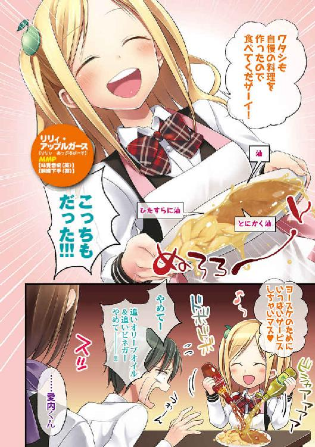
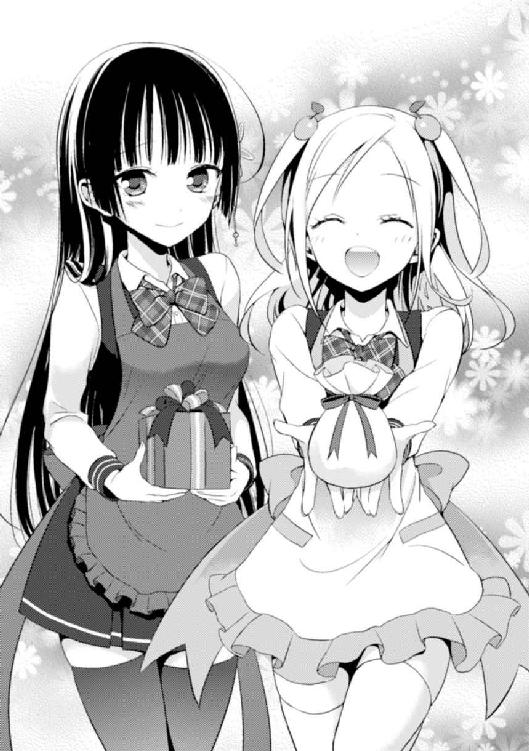

| 彼女たちのメシがマズい１００の理由 (角川スニーカー文庫) | |
| 高野 文具 & たいしょう 田中 | |
| 角川書店(角川グループパブリッシング) (2012) | |

彼女たちのメシがマズい100の理由
高野小鹿

角川スニーカー文庫
本作品の全部または一部を無断で複製、転載、配信、送信したり、ホームページ上に転載したりすることを禁止します。また、本作品の内容を無断で改変、改ざん等を行うことも禁止します。
本作品購入時にご承諾いただいた規約により、有償・無償にかかわらず本作品を第三者に譲渡することはできません。
本作品を示すサムネイルなどのイメージ画像は、再ダウンロード時に予告なく変更される場合があります。
本作品の内容は、底本発行時の取材・執筆内容に基づきます。
本作品は縦書きでレイアウトされています。
また、ご覧になるリーディングシステムにより、表示の差が認められることがあります。
序 彼女には１つだけ、どうしようもない欠点がある
日曜の朝。トントン、と俺の部屋をノックする小さな音が二つ。
返事をする暇もなしに僅かな軋む音を立ててドアが開く。
「葉介。いつまでも寝てちゃ駄目だよ。早く起きて」
現れたのは、俺の幼馴染みである香神紅緒だった。俺はそして認識する──今日もこの時が来たのだ、と。
紅緒は外見も内面も、どちらも相当に落ち着いた印象の女の子だ。
艶やかな長い髪、常日頃からしっとりした雰囲気を纏い、可愛らしいというよりは綺麗な声をしている。最近では珍しいくらい淑やかな性格の女の子であり、少し間の抜けたところはあるが、ダメ高校生の俺には勿体ないくらいの幼馴染みだ。
基本的、には。
「......いや、起きてるって。休みだからって、そんな遅くまで寝てらんねぇよ」
「そっか。そうだね、もう十一時だもんね」
「だろ。まあ、さっき起きたばかりなんだけどさ」
言えない。
実は俺が目を覚ましたのは一時間ほど前で、紅緒が全ての準備を終えて部屋を訪ねてくるのを戦々恐々と待ち受けていただなんて。
絶対に、言えるわけがない。
「──朝ご飯」
「......！」
紅緒がぽつりと言う。真っ直ぐにこちらを見る。
「朝ご飯、出来たから葉介を呼びに来たんだ」
「そうか......わかった。わ、わりぃ」
「ううん、」首を横に振る。「全然。だって私、ご飯作るの大好きだもの。もちろん食べるのも、食べて貰うのも、ね！」
素直に瞳を見返すことが出来ない俺とは対照的に、紅緒は朝からノリノリだ。
食べ物の話をしている時特有のうっとりした表情。ご機嫌だ。日曜の朝なのだから、もう少し低血圧な具合でいいと思うんだがね、俺は。
「じゃ、そんなカンジで！」
一方的に言うことだけ言って、紅緒は部屋から出て行った。
が、しかし。
「あのね！」去り際、小さな背中がわずかに上擦った声で呟いたのだ。「──多分、今日こそは、ちゃんとおいしく出来てるはずなんだ。自信作だよ」
言葉を返す間もなく、ドアが閉まる。
今度は扉は軋まなかった。
ト、ト、ト、ト、トと紅緒が階段を駆け足で降りていく音だけが小さく木霊する。
「今日こそは、ね......」
俺はため息をつきながら考える。
──どうして、こんなことになっているのだろうか、と。
紅緒が俺のために食事を作ってくれるようになってから、今日で丁度一週間。
そして、その一週間に至るまでに体験した迷走の三週間。
──一ヶ月前、息子を一人残して渡英してしまった両親のせいで、俺は十六の身で途轍もない苦難のただ中にあった。
何故に隣家に住む幼馴染みに過ぎない紅緒が日曜の朝っぱらから朝メシを作ってくれているかというと、そこにはぶっちゃけよく分からない理由と経緯がある。
事の発端は俺の親父の転勤が決まったことだ。
輸入品を扱う商社に勤めている俺の親父が、実は今年の四月からイギリスへ一年ほど海外赴任することになった。
ちなみに、我が家はイギリスという国と何気に縁が深い。うちの叔父さんはイギリス人と結婚して向こうに住んでいるし、同い年の従姉妹なんかもいるはずだ。
一家の大黒柱が海外へ......結構な一大事だと思う。
が、正直なところ、俺は完全に事態を甘く見ていた。
親父がイギリスに単身赴任するだけで、自分の暮らしはどうせ大して変わらない──心の底からそう思っていた。高を括っていたわけである。
が、すぐさま問題はとんでもない方向へと発展した。親父の転勤が決まった次の晩、
『あ、そうそう、葉介。お母さんはお父さんについていくからね。葉介はしばらく一人になっちゃうけど日本で一年頑張って』
お袋が平然と言い放った瞬間、俺の受難は幕を開けた。
──放逐されるのは親父ではなく、俺の方だった。
まさか自分の母親がここまで露骨に夫と息子を天秤に掛けて、大して迷いもせずに夫を選ぶなどとは微塵も考えていなかった。
むしろ当然のように息子を選ぶと思っていた。母親とは「子供＞＞＞夫」な生き物だと勝手に考えていたからだ。
............まぁ、ンなこたァなかったわけだが。
窮地に立たされた俺にとって、最大の問題は愛内家の家事事情についてだった。
我が家の家族構成は両親に子供が三人。内訳は長女・長男・次女。
だが、この時点で実家で暮らしていたのは今年で高校二年生になる長男の俺と両親だけ。
七つ上の姉は、世界中を放浪している。
一つ下の妹は、長野にある全寮制のお嬢様学校に通っている。
姉や妹ならば、家のことも大体は出来る。だが、俺は違った。一人息子という立場に胡座をかいていた俺の生活能力は紛れもなくゼロに近かったのである。
結果、俺は命の危機を感じてお袋に徹底的に抗議した。しかし、ここでお袋はまたしても常識とはかけ離れた提案を撃ち出して来やがった。
『ああ、安心していいわよ。実は、相談したらお隣の紅緒ちゃんが葉介のお世話を全部やってくれるって了承してくれたの。お料理、お洗濯、お掃除......もしかしたら、それ以上のことまでお世話してくれるかもしれないわぁ。うふふふ。実はお母さんね、若くて可愛いお婆ちゃんになるのが昔からの夢だったのよぉ♪』
要するに、ただのアホ親だったのだ。
こんな戯言だけを残し、両親が渡英したのが約一ヶ月前。
............そして、本当に、俺の生活関係全般は幼馴染みである香神紅緒の手に委ねられることになってしまった。
だが、ここから少し話が拗れてくる。
──俺、愛内葉介はそう易々と幼馴染みの女子に「お世話」をされてしまうようなチョロい男ではなかったのである。
俺には、男としてのプライドがあった。紅緒に弱いところを見せたくなかったわけだ。
俺と紅緒の付き合いは長い。
小学生までは事ある毎に紅緒は俺の後ろを付いて来てたし、学校のクラスも小一からずっと今まで同じだし、バレンタインには未だに毎回チョコをくれるし（思えば、その恒例行事として渡されたチョコは全て市販の物だった）。
中学、高校と進学するにつれて、お互いに大人になったというか、小学校時代ほど過剰な付き合いをすることもなくなったが、それでも今だって結構いいカンジの幼馴染み関係を構築出来ているとは思う。
──だから俺は紅緒の協力を全て撥ね除け、全力で一人暮らしを実行した。誰の力も借りずに、高校二年生の四月を二週間は生き抜いたのだ。
............が、大変情けないことに色々とあった結果、今となってはごらんの有様だ。
物の見事に俺は「お世話」をされてしまっている。
幼馴染みの女の子に。
炊事洗濯掃除全てを任せてしまっている。何だコレは。俺はギャルゲーの主人公にでもなってしまったのか。あまりにも情けねぇ......。
こう言ってはなんだが、俺の幼馴染みである香神紅緒は相当にパーフェクトな女の子なのだ。俺には勿体ないくらいの自慢の幼馴染みという奴である。
ほんの先週までは小学校の頃から無遅刻無欠席を継続していたし、授業中は居眠り一つしない。ノートも完璧でクラスでは小一の頃から毎年学級委員を務め、クラスメイトからの信頼も厚い。実際、紅緒ほどキッチリした奴も中々いないと、俺だって思っていた。
──しかし、俺とお袋は、だからこそ、あまりにも重要なことを見逃していたのだ。
つまり『料理の腕に日々の生活態度は全く関係がない』という、あまりにも単純すぎる事実を......。
「あ、葉介。おはよう」
重い足を引きずって台所まで行くと、丁度赤いエプロンを身に纏った紅緒が食卓に料理を並べているところだった。
俺はその「おはよう」という何とも吞気な言葉に面食らって、
「......なんつーか、言うならさっき言おうぜ、その台詞は」
「ああ、そっか。言われてみるとそうかも。でも『おはようって言うの忘れてたな』って思い出したのが今だったから。それで、なんとなく言いたい気分になって」
「なんだよそりゃ」
「あはは」
妙なところで紅緒が笑った。
大抵いつもこんな感じと言えばそれまでだろうが。
会話も程々に、俺はテーブルへと視線を落とす。すると、そこには。
「うっ......！」
あまりにも強烈なヴィジュアルをした物体が、俺を待ち構えていた。俺の口から自然と呻き声が漏れていた。心臓が激しく鼓動し、警鐘を鳴らす。
『ヤバい』『イカレてやがる』『おかしい』『引き返せ』『やっぱり今日もかよ』
弱い考えばかりが浮かんでは消える。それでも俺は勇気を振り絞り、掠れた声で紅緒に尋ねた。
「紅緒......今朝のメニューは......なんなんだ......」
「え。『ホットサンド』だよ。あれ、もしかして食べたコトない？」
俺がテーブルにつくのを確認してから対面に座った紅緒が目を丸くした。
............真面目な顔してやがるだろ。
本気なんだぜ、これ。
「ホットサンドは食べたことあるけど、このホットサンドは食ったことねぇな......」
「この？ え、なんで？ かなり一般的でスタンダードなホットサンドだよ？」
「何度も言ってるけど、料理に関して、紅緒の『普通』は基本的に全部おかしいぜ」
「あれ。そうなんだ」こくり、と顎だけで頷く。「確かに何度も言われてるね、ソレ」
「お前、絶対よく分かってないだろ......」
「うん」
首を傾げ、本当に不思議そうに、紅緒が応える。
「私、難しいことはよくわかんないよ。だってホットサンドってメジャーな料理だよね。京佳さんのレシピ本にも結構載ってた気がする。『暮らしが変わる食パン調理術！』とか『朝ご飯をおいしく作るための四十三の鉄則』とか......」
「いや、そりゃ載ってるのは知ってるけど......そーいうことじゃなくてさぁ」
愛内家は、いわゆる「料理一家」だ。
お袋である愛内京佳の仕事は料理研究家。料理番組にも度々登場し、ベストセラーになったレシピ本を多数手掛けている。ぶっちゃけ、超売れっ子のグルメタレントだった。
親父ももっぱら輸入食料を扱う仕事をしているし、姉も日本全土世界各国を放浪して食に纏わる文章を書くライター（本人は「旅人」を自称）として活動中だ。
妹は......あまり具体的に思い出したくないので、例には挙げない。
だから、俺は、日頃のメシとはウマいのが当たり前だと思っていた。あまりに愚かだった。自分がどれだけ恵まれた存在なのか、これっぽっちも理解していなかったのだ。
──ホットサンド。
大抵の人間に共通する認識としては、あのすべすべで小麦色の焦げ目が付いたトースト部分に違いない。中に何を詰めるかは割合自由にできるし、専用の機械を使えば意外と気軽に作れる。作り手の発想が生きる楽しい料理だ。
本来は。
............本来は、だ。
「てかさ。これ、中に何入ってんの......？」
「え？ チーズとサクランボのコンポートに刻んだクルミ。それとウインナー......えーと多分、シャウエッセンかな？ 魚肉ソーセージとかじゃなかったと思う。昨日作ったハンバーグの残りも入ってるかな。生クリームとかも入れた気がする」
「うっ──」
指を折りながら、紅緒がつらつらと刺激的な単語を口にしていく。
俺は戦慄した。ホットサンド？ その具材で？
「......ちなみに、上からアホみたいに掛かってるメイプルシロップをスルーしたのは、中には入っていないからか？」
「うん。甘くておいしいよね、メイプルシロップ」
なるほど。確かにメイプルシロップは、おいしい。それは間違いない。少なくとも俺は塩辛かったり苦くてマズいメイプルシロップなんてものにお目に掛かったことはない。
ただし、重要なのは、そういうことではないのだ。
「このホットサンドは味の新境地を目指したモノなんだ。『マックグリドル』ってわかるかな。マクドナルドの朝マックのメニュー。一個一〇〇円だから、時々私、一回で五個ぐらい朝ご飯に食べちゃうくらい大好きでさ。アレ、甘さとしょっぱさのコンビネーションが最高に決まってると思ったんだ。だから、私もその技法を取り入れてみたの。ほら、酢豚にパイナップル入れるみたいな感じでね。オリジナリティ爆発だよね」
「それはお前、酢豚に失礼ってもんだろ」
「じゃあ、麻婆豆腐にラズベリー。甘くて辛くておいしいよね」
「もっとねぇよアホ！」
「え。ないの」
要はグリドルとは「甘いハンバーガー」だ。このホットサンドと同じように、パンの部分がメイプルシロップでヒタヒタになっている。初めてアレを口にして衝撃を受けない奴はいないと断言出来る代物である。
「そっか、麻婆豆腐にラズベリーって意外と一般的じゃないんだ。うーん、でも、まぁ」
こんな異常なやり取りを繰り広げれば、誰にだって分かるはずだ。
──香神紅緒が、どういう類の少女であるか。
──どういう「問題」を抱えた少女であるか。
「このホットサンドは、葉介にもすごくおいしそうに見えるでしょ？」
「............」
五秒ほど皿の上の物体を凝視した後、俺はチラッと対面に座る紅緒の顔を見た。すると紅緒は、丁度トースト部分の上にアホみたいに掛かっているメイプルシロップのようなトロリとした笑みを浮かべ、
「自信作。これは中々すごいと思うんだ」
得意げに強く頷き、グッと右手の親指を立てる。
絶対「すごい」の意味がちげぇだろ！
......などと叫び出したい衝動を何とか喉の奥に押し込み、意を決して目の前の皿に手を伸ばす。そう、紅緒の作るメシは、基本的にどうしようもなくアレなのだ。そして彼女自身はその料理を、ちっともアレだと思っていない......。
これが、最大の問題だ。
逃げられるものならば、今すぐにでも逃げ出したい。けれど、それは出来ない。幼馴染みにここまでして貰って、逃げるなんて選択肢は存在しないのだ。
哀しい、ことに。
男には避けては通れない戦いというモノが、ある。
喩えるなら戦士として生まれ育った男が王のため、祖国のため、探し出したエメラルドの剣を携え、邪悪な竜を倒しにいく宿命を帯びているようなものだ。
幼馴染みの作った料理を食べる──それは間違いなく運命の領域に入っている。
「いただき、ます──ぅ!?」
グジュリ。
バターとメイプルシロップでベトベトになっていたトーストを引っ摑み、一口目を味わった瞬間、脳裏に火花が散った。
それは前人未踏の数式に直面した数学者の気持ちに近いのかもしれない。
マズさは方程式で導き出すことは出来ない。
なぜならば、マイナスにマイナスをいくつ掛けたところで決してプラスに転化しないのがメシのマズさというものだからだ。
倍々に膨らんだマズさがコンクリート色のシンフォニーを奏で、偏頭痛の痛みのリズムにも似た謎の動悸が心臓を動かし、そして、最終的に俺は──
天を見上げ、腕を組み......あくまで理性的に、沈黙した。
──唐突だがギャグ漫画などで、ヒロインの絶望的な料理を無理矢理に搔っ込んだ主人公が顔を紫色に染めて泡を吐いて卒倒するシーンというモノがある。
この場合、彼女たちの料理は一見しただけで劇物であることが窺える刺激的なヴィジュアルをしていることが大半だ。紫色だったり、異臭を発していたり、あまつさえ意思を持っていたり触手が生えていたり爆発することも珍しくない（しかも彼女たちは何故か申し合わせたように味見をしない。ホント、どうしてでしょうね）。
ところが、だ。香神紅緒の作る料理は、そういうフィクションのメシマズとは少し違う。
理由はシンプル。とてつもなく簡単な答え。
「............これ、は」
──彼女の料理は、極めてリアルで切実にマズいのだ。
別に妙な化学融合など起こしていないし、基本的には食った人間がどんなに大袈裟なリアクションを取ったとしてもその場でブッ倒れてしまったりもしない。そもそも、紅緒のメシは完全に食べられないほどマズいわけではないのだ。
本当に最低のレベルで、メシとしての体裁を保っている。
それは異次元の味覚などではなく、徹底的に強烈な現実として、食べる人間の前に立ちはだかる大壁なのである。
俺は思う。漫画やアニメに出て来る食べた者を病院に担ぎ込むような劇物料理は、真にマズい料理とは言えないのではないか、と。なぜなら、ああいう料理は登場した時点で、既に料理と名状しがたき存在に成り果ててしまっているわけだから。
水は凝固すれば氷になる。状態が変われば名称も変化するのが自然だ。
だからこそ、本当にマズいメシとは、あくまで『理解できる距離にある現実性』を最低辺でキープし続けることが求められると俺は考える。下に突き抜けていてもならないのである──その意味で、香神紅緒の作るメシは完璧だ。
いや............今日だけは、少しばかりやり過ぎなマズメシかもしれないけれども。
「......なぁ、紅緒お前......この中......『隠し味』が入ってるだろ......さっき名前を出してない具材が入ってるんじゃないか......？」
声を震わせて俺は紅緒に尋ねた。
訊かなければ、ならない。これだけは。絶対に。
「うん、正解。入ってる。でも隠し味って言っちゃったら隠し味にならないと思って」
「バカ、そういうこと言ってんじゃねぇ！ っ、ぁあああ！ これは、まさか──」
ホットサンド的物体を咀嚼しながら、俺は分析する。
ぶちまけられたメイプルシロップ。とろけきったチーズ。
これでもかという甘さを押しつけて来るサクランボのコンポート。
シャウエッセンとハンバーグ（生焼け）の塩味。
刻んだクルミの生み出す渋み。
ぬっちゃくっちゃになったトースト生地の裏側と、モコッと過剰に盛り上がり、美的センスの欠片も見出せないフォルム、そして。
「なんで料理の中にパブロン入ってんだよ！ に、苦！ ど、どどどういうことだっ!?」
あまりに予想外の混入物に激怒を通り越し、何故か派手に狼狽してしまう俺。
間違えるはずがなかった。
食べた瞬間、口の中に広がる強烈な苦み。苦いと言っても、ピーマンやゴーヤなどとは明らかに違う。言うなれば、人工の味。更に言えば............非・食物の、味。
つまり──薬物！
「ううん。私、パブロンなんか入れてないよ？」
紅緒が怪訝な表情を浮かべ、ふるると首を横に振った。
俺は驚愕する。
「なっ......」
「入ってるのは、バファリン」
「結局、同じじゃねぇか！」
思わず叫ぶ。が、紅緒は妙に得意げな様子でチッチッチッと指を振り、
「違うよ。バファリンの半分は優しさで出来てるんだもん。完全な別モノだよ」
「どこがだ！ パブロンとバファリンなんて名前と優しさ以外は同じようなもんだろ！」
今度は、ゆっくりと首を横に振った。
紅緒が真顔で言う。
「だってパブロンは粉も錠剤もあるけど、バファリンはほとんど錠剤がメインだよ？」
「そんな豆知識どうでもいいわ！」
さすがに薬を盛られた経験はなかったため、俺の言葉もエキサイトしてしまう。
が、紅緒はそんな俺を窘めるように、
「でも、葉介ってばここ何日かずっと風邪引いてゴホゴホしてたのに面倒臭がって全然薬飲まないんだもん。ダメだよ、健康には気を遣わないと」
「ぐっ......」
そう言われると、正直言い返せない。
......だ、だが、ここで引くわけにはっ！
「そういう話じゃねぇ。そうだ、紅緒。お前の発想は根本的に間違ってんのさ！」
「え。本当に？ 気になるな。それ、聞かせて葉介」
くいっと首を傾けて、紅緒は「で、なにが違うの？」と視線で尋ねる。
あまりにも無垢なその双眸に、一瞬俺の心臓が強く跳ねた──が、心を無にして、その衝動を収める。全てを振り切り、俺は強い口調で言い切った。
「いいか──薬は食べ物じゃない。パブロンだろうがバファリンだろうが、そんなモンをメシに入れる奴がどこにいる。普通、どこにもいねーよ。そうだろ？」
俺は思う。
なんでこんなことを、わざわざ言わなきゃいけないんだろう、と。
切ない。虚しい。しょうもない。この煙のように肩から力が抜けていく感覚を疲労感と言うに違いない。日曜の朝っぱらから、何故こんなアホなやり取りを──
「葉介は入れないんだ。ふぅん。それとも、家によって違うのかな」
「えっ」
とても意外そうに、紅緒が言った。結果、煙のような疲労感は見事に反転し、強く重く途方も無い絶望となって両肩に落下してくる。
紅緒が吞気に続ける。
「パンでもお米でも、どっちもおいしいけどね。私、白いお米にパブロンかけて食べるの好きなんだ。『卵ふりかけ』よりも、もっと黄色くておいしいよね」
「............」
俺は言葉を失った。紅緒がまさかここまでアナーキーな存在だとは考えてもみなかったのだ。自身の分のホットサンドをはむはむと食べながら、紅緒が言う。
「......うん、ちゃんと色んな味がしておいしいね。甘いし、しょっぱいし、渋いし、苦いし、すごくお得な気分になれる料理だと思うな。思わず自画自賛しちゃうよね」
一週間前に初めて知った──十六年間、知らずにいた幼馴染みの恐ろしい秘密。
一言で、まとめよう。
──香神紅緒の舌は、料理に関する価値観は、完全な別次元にある。
それはもう完膚なきまでに。
「ところでさ、」
無防備な口元が、エプロンの赤と同じくらい鮮烈な色の唇が、小さく動いた。
スローモーション。
俺はそれに釘付けになる。向かい合って座る俺達の距離が、わずかに縮まったような気がした。結果、それに応じて、自ずと視界に入って来てしまうものがある。それにしても大きい。大き過ぎる。まさかこんなに大きくなるなんて想像すらしていな──
「──おいしかった？」
透き通った瞳が、まっすぐ、ただただ無垢に、俺を見つめていた。
ドクン、と心臓が跳ねる。
「うん。ほら、こんなにおいしい。葉介もだよね。ね？ ね？」
「は......」
俺が即答出来ないとなるや、紅緒は下唇を突き出し、ぶぅと大層不満げな様子で、
「いや、だからさ。味の感想だよ。食べたでしょ？」
「そりゃあ、まぁ」
「じゃあさ、ハッキリしようよ」
「なんだ、アレだ──」
真っ直ぐにこちらを見つめる紅緒から視線を逸らし、俺は声を絞り出した。
「............案外、いけるんじゃないか？」
精一杯の、偽りの答え。
さすがに噓だとしても『おいしい』と言うことは出来なかった。
──またしても俺の現実逃避が始まる。
女の子にマズい料理を作られてしまった時、実際、男はどんなリアクションを取るのが最も正しいのだろうか......これは、ここ最近の俺にとっては一番の関心事だ。
ラブコメ漫画界の反応で、最も多いのは「噓を貫く」だ。いかに脂汗を垂らし、顔を紫色に染めたとしても、女の子に対して「マズい」とは口が裂けても言わない。このスタイルを選択している漢達は非常に多い。
中々にクレバーな判断だと思う。
せっかく料理を作ってくれた女の子に「マズい」なんてそう簡単に言えるわけがない。
本当は、紅緒に噓なんてつきたくはないのだ。けれど、折角作ってくれた料理を「マズい」と言ってしまい、紅緒にイヤな思いをさせたくもない。
させたくないのだけれども......。
「それ、本当？」
紅緒が大きく目を見開き、囁くように言う。「──本当に、おいしい？」
「......えーと」
「ダメだよ、葉介。私は、本当の感想が聞きたいんだ。噓とかそういうのって、よくないよ。私は男の子が噓を吐くのは、とてもカッコ悪いことだと思うもの」
真っ直ぐ合わさった真摯な視線。
そう──肝心の紅緒本人が、俺が偽りの証言をすることを頑なに許そうとしないのである。普段はふわふわしている紅緒だが、妙に一徹なところがあるわけで。
何故、コイツはこんな生真面目になってしまったのか。
思うに、幼少の頃からちゃらんぽらんな幼馴染みと一緒にいたせいに違いない。『自分がしっかりしなくては』という考えが最終的な人格形成に大きな影響を及ぼしたのだ。
............要は俺の自業自得ってことだよ！
「う、噓じゃねぇって！ 紅緒！ 俺が信用出来ねぇのかよ！」
「葉介のことはずっと信じてるよ。でも、ソレとコレとは話が別。じゃあ、さっきバファリンに反応してたのは？」
「あ、あれは......た、ただ単に驚いただけだ！」
「じゃあ、トッピングにバファリンだけじゃなくてパブロンも足す？」
チラリ、と紅緒が薬棚に視線を投げる。予想外の事態に俺は思わず声を張り上げた。
「そ、それだけは止めろ！ 薬はない！ マジでそれは禁止だ！ ............あ」
「ほーらね。やっぱり......」
「いや、その......」
「ダメダメ。バレバレだよ。もう、ちゃんと言葉にしちゃって欲しいな......」
「づっ......」
──またやってしまった、と思った。
しかし、ここまで来て白を切り通すのが不可能なのもまた事実。やはり言うしか......ないのか......。
わずかな逡巡の後、俺は言葉を絞り出した。
「────ぶっちゃけ、マズかった。過去トップクラスに」
「............」
紅緒がじぃっと俺を見つめる。額に汗を垂らし、俺も見つめ返す。
そして、次の瞬間。
「あ───────！ 今日もダメだったぁああああああ！」
唐突な奇声。テーブルに顔を突っ伏して、ダダを捏ねる子供のようにゴロゴロと身体を横転させながら、紅緒が悶絶し始めた。
──俺と紅緒はこの一週間、「勝負」をしている。その内容は非常にシンプルだ。
『紅緒が俺にウマいと言わせる料理を作る』
本当に、それだけである。当たり前だが、俺の方は戦っているつもりなど毛頭ない。自然と発生し、紅緒が一方的にその目標にチャレンジしているだけだ。
そして、自然と紅緒がその勝負に全戦全敗しているだけのこと。
「なんで、どうして？ すごくおいしいよね......うん、甘くて苦くておいしい......しかも健康的......なのに葉介はマズいって言うし......ああああ............全然わかんないよ......」
「だって、お前、何食ってもおいしいって言うじゃん......。例えば、あれだ。なんつーの、どっかおかしいとか？ そういうラインはないのかよ」
「ううん、だって私、ちゃんと『おいしい』って分かるもん。辛いことなんてなにもないし、やっぱり病気とは違うはずだよ......」
「うーん......」
確かに、何を食べてもおいしく感じるのなら、それはむしろ非常に幸せなことに違いない。食べているだけなら、基本的に問題なんてないのだ。
食べているだけ、なら。
「その辺は後で考えるとして......とりあえずコレ、食っちまおう。冷めちまう」
「え。い、いいよ。残り物は私が食べるから、葉介は無理しなくていいよ。だって、今日のは、今まででもトップクラスにマズかったんでしょ......？」
ホットサンドの皿に手を伸ばした俺の服の袖を摑み、こちらの顔色を窺うように恐る恐るといった様子で紅緒が尋ねる。俺は首を横に振った。
「まぁなんだ。そりゃあマズかったけど、せっかく作ってくれたわけだし、ここまで言って放置するのも居心地が悪いっつーか。毎回結局、俺も食ってんだし」
「そりゃそうだけど......。でも、やっぱり葉介には悪いし、自分がすごく情けないっていうか、ムカつくっていうか、屈辱的っていうか、悔しいっていうか......」
紅緒がふつふつと暗い表情で言う。後の言葉になればなるほど力が入っているように思えるのは俺の気のせいだろうか。
実際、自身のメシマズ具合に気付いた時の紅緒の落ち込みっぷりは半端なかった。
この事実が明らかになった翌日、十年続いていた自身の無遅刻無欠席を投げ捨て、自室に引き籠もって一日いじけていたぐらいだ（後で本人から聞いた）。
紅緒は誰よりもウマい料理を作りたいと思っているし、それを俺に食べさせたいと思っている。俺は言うまでもない。そりゃあウマい方がいいに決まっている。
けれど、それは儘ならない。
今日で紅緒が料理を作るようになってから丁度一週間。紅緒の料理は依然として上達の兆しが見えない。
正直、今のこの構図は──色々と問題があるとは俺も感じていた。
だが、解決策がない。
紅緒の料理スキルがバトル漫画の主人公が秘められた力に目覚めるように覚醒することもないし、地道に努力すればどうにかなる問題でもないように思えてならない。
だから、結局、この言葉に帰って来てしまうのだ。
──どうすりゃいいんだろうなぁ、と。
「ん？」
そして、そんな時だった。
不意に「ピンポーン！」と、玄関のチャイムが鳴ったのは。
「あ......誰か来たみたい。私、出てくるね」
ぼそりと呟いた紅緒が当然といった様子で腰を上げようとした。俺は慌てて紅緒の腕を軽く摑むと、その行動を窘める。
何でもかんでも家のことを紅緒にやらせてしまうわけにはいかないのだ。
そんなことになれば、俺は完全に堕落してしまう。
「ちょ、ちょっと待て！ 行かなくていい！ それくらい俺がやる！」
「そう？ じゃあ、はい。これ。必要かもしれないから」
紅緒は簡単に納得すると、小簞笥からシャチハタのハンコを取り出して、小さく微笑みながらそれを俺に手渡した。一方で、俺は驚愕していた。俺はハンコがあんなところにあると、今初めて知ったのだ......。
「......サンキュー」
「ううん。なにか困ったら気軽に呼んでいいからね」
俺の気も知らずに微笑む紅緒に背を向け、もしかしなくてもコイツの方が家のことについて俺より詳しいんだろうなぁ──などという確信を抱きながら俺は玄関へと向かった。
廊下は肌寒くもあり、温かくもある。
春が終わるのか、夏が始まるのか、それがわかるにはまだ遠い。
「はいはい。どちら様ですかーっと」
ガチャリ、と玄関のドアを開ける。そこには、
「おはようございます！」
「は、はぁ。こりゃどーも、ご丁寧に......え？」
何故か、そこには──ぺこりとお辞儀をした、金髪の美少女が立っていた。
見間違えでも、白昼夢でも、紅緒の作った朝メシにマジックマッシュルームが混入していて俺の意識が混濁しているわけでもなかった。
立っていたのだ、外国人の美少女が。
臙脂のダッフルコートに鍔の大きな帽子を被った、金髪で透けるような白い肌をした白人の女の子が。
「あ、えーと......ナ、ナイストゥミート──」
「ヨースケ！ あいたかったです！」
実に軽快なEnglish で挨拶っぽいことをしようとした俺を遮って、金髪の少女が弾丸のように突っ込んで来た。そしていきなり抱きつかれてしまう俺。
「ちょ、は──!?」
当然、俺は慌てふためいた。狼狽した。
なにしろ金髪だ。美少女なのだ。抱きしめたら折れてしまいそうな華奢な肩、外国人とは思えない低い背──ヤバいくらい可愛い。
ダッフルコート越しでも彼女の柔らかな身体の感触が如実に伝わって来る。
リンゴのフルーティな香気、そして背の割には肉付きの良い身体......！
だが、純日本人の俺に外国人の知り合いなどいるはずもなく、むしろ彼女はマズメシに悩む俺のために異世界から現れた妖精なのではないかと考える方がまだ現実味が──
............あん？ 外国人の、知り合い？
「あっ」
「おもいだして、いただけましたか？」
おるやん、知り合い。
そうだ。今まで一度も会ったことないどころか、写真すら見たことなかったけど。向こうでイギリス人と結婚した叔父さんに、俺と同い年の娘がいたはずだ。
ええと、確か名前は──
「リリィ......だっけか」
「ハイ。Lily=Applegarth です。嬉しいです。おぼえていてくださったんですね」
少女が碧い瞳をキラキラさせて俺を見上げた。
俺は彼女の放つ強烈な美少女オーラに思わずよろめきかけた。まるで、むせかえる濃密な香りを吸い込んでしまったかのように。
「で、どうして君が......？ あれ、一人。っていうか叔父さんがいたりは......？」
「ええ、そのことなんですが、」
少女は被っていた帽子を取って、深々と俺に頭を下げる。そのまま流れるような動作で再度顔を上げると、呆気にとられている俺へ向けてニッコリと微笑んだ。
「──少し長い間になるとおもいますが、よろしくおねがいします」
「......はい？」
「ですから、」そして、状況が飲み込めない俺にあまりにも明快な言葉を突き付ける。「ワタシ、日本にホームステイをしにきたんです」
俺は思わずその言葉に「ほほう」と分かったようなノリで頷いて、
「へーなるほどね。ホームステイかぁ。そりゃ随分と急な──って、ホームステイィ!?」
「ハイ。おせわになります」
「............マジで？」
「マジです。明日から高校にもかよいます。ヨースケと同じクラスだときいています」
にこにこにこにこ。
──満面の笑みを落とし込んだ彼女の言葉を聞いて、ようやく現状を把握するのだった。
こうして、俺の生活は、またしても大きな変化を迎えることになる。
幼馴染みに「お世話」をされてしまうだけではなく、新しく一つ屋根の下で暮らすことになった外国人の従姉妹まで現れてしまったのだから。
そして、この時の俺はまだ知らない。
彼女たちの作るメシが俺をどれだけ苦しめるのかを。
いや。
彼女たちの作るメシの巻き起こす問題の数々が──俺をどれだけ苦しめるのかを。
一 何故、英国淑女に１日３食を任せてはいけないのか
翌日、月曜日。
「なるほど。それが昨日の顚末、と」
「まぁ、そうなるな」
「で、昨日の今日で学校に転入、と」
「......まぁ、うん」
リリィは俺の通う私立木々津高校に転入して来ていた。あまりに事態が急過ぎるけれども、実は俺ですら状況を整理し切れていないのだからどうしようもない。ちなみにクラスも本人の宣言通り、俺や紅緒と同じ二年五組である。
「なんかさぁ。俺や紅緒は何も知らなかったのに姉貴だけには話が通ってたみたいなんだよ。まぁお袋は大体いつもそうなんだけど。で、リリィの細かい手続きとかは全部あっちがやってくれてたらしくて」
「姉......ああ、龍子さんか。帰国していたのか？」
「つっても日本にはいねーけど。海外から全部やってくれたみたいなんだ。今は......ええと、どこだっけか。トルコ......タイ......？ あ、ちげぇ。確かオーストラリアだ」
時刻は早くも正午を回り、昼休み。
目まぐるしく変化した環境とそして人生そのものに疲れ切った俺は、机に身体をぐったりと投げ出して盛大に愚痴を溢していた。
友人──藤見川冥は俗に言う『インテリ眼鏡』という表現が非常にピッタリと来るクール野郎だ。シルバーフレームの眼鏡をクイッと持ち上げる仕草が非常にサマになっていて、部活動もコンピューター研究会に所属する偏屈な理系男である。
が、ここまでガッチガチの理科系素質が合わさっていながら、実家はグルメガイドにも頻繁に登場するスイーツショップだったりするのだから、よく分からない。
そして、それ以外にも色々と厄介な性質を持っているのも確かで──
「............ま、龍子さんの話はひとまず置いておくとしよう。今は、やはりアップルガースさんの話題だろう。むしろ、それ以外ないとも言える」
冥が思わせぶりに俺から視線を切って、教室の隅へと向ける。
釣られるように俺も首を動かす。その先、クラスの女子連中が群がる中心で、金色の女の子──リリィが笑っていた。
「そりゃ、しばらくはそうなるだろうなぁ」
頰杖を突いて、リリィの方をぼんやり眺めながら嚙み締めるように。
──リリィの転入は俺だけではなく、クラスの一大事でもあった。
なにしろ金髪の英国美少女が突然留学生として現れ、しかもクラスの男子の従姉妹で、加えて同じ家で生活していると言うのである（そしてソレが、何というか俺なのだ）。
こんな大事件が話題を席巻しないわけがない。
事実、俺は午前中はずっと男共に質問責めにされていたし、リリィの周りにも女子が集まりまくっていた。男子にも果敢にリリィへと話し掛けようとした奴がいたらしいが、過保護でキレ気味の女子達に悉く追い返されたとのこと。
昨日、リリィがやって来た後、とにかく俺は一日中ドタバタしまくっていた。
まずは事実の詳細を問いただすため、イギリスのお袋に直電話（向こうは朝の四時だったが、そんなの関係なしに、だ）をしたわけだが、ここで『お袋は普通に俺へとリリィのことを伝達した気でいた』という衝撃の事実が発覚する。次にオーストラリアにいる姉の携帯に国際電話を掛けるも、判明したのはお袋の適当さ加減だけ。
そして、昼過ぎからは宅配便で生活用品や家具、制服・教科書などの学習用品がひっきりなしに届けられて来たわけだ。
つまり──俺と紅緒への情報伝達以外は、全ての準備は完璧だったのだ。
............いや、そこを忘れられても困るっつー話だけどさ。
昨日は一日中、その処理に追われ、結局、夕食をマクドナルド（イギリスにもマクドはある。つまり、リリィにとっても馴染みの味だ）で済ませ、明日の朝も早いからとさっさと寝てしまったのが事の顚末だった。
「しかし、まさかホームステイとはな。実に燃える展開ではないか」
冥がぽつりと言った。
「はぁ？」
「ほう、よりにもよって本人は自覚なしか。これは面白くなって来たな......」
俺は眼鏡を輝かせて語る冥の言葉に首を傾げる。なんで今の状況がそんなシチュエーションになっているのだろうか......などと、考えた時だった。
──不意に、誰かが俺の背中へと抱きついて来たのは。
「ヨースケ！」
鼻腔をくすぐる瑞々しい果実の香りと女の子特有の柔らかさ。金色の髪が風に流れて俺の視界の上で躍った。まるで楽器の弦のような細やかで美しい髪だった。
............などと頭の中では分析していたが、現実の俺は予想外の事態に驚き、無様にもビクンと背筋を震わせて、凄まじい速度で振り返っていた。
「っ──え、ちょ......リ、リリィ!?」
「イエス。大当たりです！」
にこやかに。そして、華やかに。
そうしてリリィ＝アップルガースは、この日もまた大胆なアプローチでもって俺へと話し掛けて来たのだった。俺は背中に首筋がむず痒くなるような巨大な二つの違和感を覚えながらも、きわめて冷静を装いながら、言い放つ。
「な、ななななんだリリィか。い、い、いきなりで、少し驚いちまったぜ......！」
............が、思った以上に俺は動揺してしまっていたらしい。
リリィには昨日も似たような感じで抱きつかれているわけだが、今日はなにしろ人目がある。実際、クラスの連中は学校では普通お目にかかれないハードなスキンシップに目を丸くしている。そりゃそうだ。基本、日本人はシャイなのだ。
しかし、当の本人であるリリィはまるでその事実に気付いていないようで、
「オウ？ すみません。ヨースケがのんびりしていたので、驚かせたくなってしまったのです。驚かせすぎてしまいましたか？ でもやり過ぎたみたいです。ワタシ、はんせいします。ゆるしてもらえるでしょうか？」
リリィはパッと俺から身体を離し、本当に申し訳なさそうな表情を浮かべるや否や、前から尾骨が見えそうなくらいの勢いで深々と俺に頭を下げた。
「ちょ......え、そりゃあ、うん。もちろん。怒ってなんてねぇよ。当たり前だって」
「そうですか！ よかったです！ 安心しました！」
リリィの笑顔を見つめながら、俺は頭の中で『うちの血筋でこうも化けるか......』と舌を巻いていた。
ダイナマイトなスタイルに反して、リリィはあまり背が高くない。
百六十は超えているはずの紅緒とは比較にならない。比べるなら、二十四歳にもなって背が百五十センチに満たないことを嘆いていた姉だ。
おそらくは目算で百五十前半。
日本の基準でも小さいのだから、向こうでは相当なチビっ子で通っていたはずだ。
そんな可憐な美少女が──こうクイッと、首を傾けて俺を見ている。不安そうにこちらをサファイアのような双眸がじぃっと見つめているのである。
俺は思う──地球上にこんな可愛さを振りまく生物が存在していいのか、と。
ヤバいな。ああ、ヤバい。
「ッ......!?」
──などと、俺が口元がニヤけ出すのを押しとどめようとした矢先だった。
背後からボンヤリと感じる妙な気配。すかさず振り向くと、そこには、
「なんか楽しそうだね、葉介」
「べ、紅緒......！」
なんとも馴染みの人物が立っていた。筆舌尽くしがたい、妙な雰囲気を纏って。
しっとりした艶やかな髪と、女子にしては高い背──香神紅緒。
紅緒は、俺のことをジィッと見つめていた。
俺が感じたのはどうやら紅緒の視線だったらしい。何故、こんなタイミングで。
そして何故俺をそんなにもジロジロと見つめている？
「本妻の降臨......っ！ ついにこの時が......修羅場の時間が来たようだな......！」
「......修羅場の時間ってなんだよ、それ......」
「修羅場は修羅場さ！ いつの時代も我々の心を惹きつけてやまない永世のエンターテイメントだよ！」
紅緒が登場したことに、俺以上に過敏な反応を見せる者が約一名。冥だった。
俺の友人である藤見川冥はフィクション・ノンフィクション問わず女同士の愛憎劇を好む修羅場好きなのである。
ちなみに嫌いなモノは「ヒロイン同士の百合展開」で、以前とあるＲＰＧをプレイしていた際、主人公を巡って啀み合っていたはずの二人のヒロインが、最終的に主人公を完全に放置して百合し始めるというゲームに遭遇してしまい、激怒のあまり床を殴りつけ、左手を骨折したという武勇伝を持っているヤバい奴だ。
「さぁ、どうする葉介......！ 委員長はお怒りのようだぞ？ お前はこの凄惨な状況でどう行動するつもりだ......!?」
「う、ウゼェ......！ 他人事だからって、この野郎......！」
とはいえ、冥が反応するのも無理からぬことではあるのだ。だって実際にリリィに抱きつかれてるとこを紅緒にバッチリと目撃されちまったのは事実なわけだし、風紀的に怒られても仕方な──いや、待てよ？
「......紅緒、ちょっと訊いていいか」
「ん？」紅緒はまだ俺の方をじぃっと見ている。「何かな。そんなに改まっちゃって」
「あのさ。お前、怒ってる？ 冥はこう言ってるけど」
すると、紅緒は特に顔色を変えることもなく、かくんと首を傾けて、
「え。なんで私が怒らないといけないの？ 私はいつも通りだけど......もしかして藤見川君には、私がそんないつも怒っているような短気なカンジに見えてたってことかな。ううん。そんなことないと思うんだけどなぁ。ええと、どうかな？」
俺の問い掛けに、紅緒は少し哀しげに答える。
一方で、自身の言葉を真っ向から否定された冥は驚愕の表情を浮かべて、
「なん......だと......！ だ、だが、確かに、委員長は葉介をじっと見つめて......!?」
「ああ、それはね」
紅緒がにっこりと微笑み、ポンと両手を打ち鳴らした。
「リリィが後ろから葉介に抱きついてたの見て、私もやってみたくなっちゃって」
「............」
冥が絶句する。しかし、紅緒はそれと対照的なまでに楽しげに続ける。
「ちょっと用事があってリリィと一緒にこっち来たんだけど、葉介がぐでーってしてるの見て、リリィが飛びついて行っちゃったんだよね。で、なんかリリィも葉介も楽しそうで凄くステキだな、って思って。私も仲間に入れて欲しくなっちゃったの」
「ですが、しっぱいでした。ヨースケを驚かせてしまいました。日本にきて、ワタシ少し、こうふんしてしまっているようです。よくありません」
トコトコと紅緒の隣にやって来て、リリィも頷いた。
並んだ二人の姿は仲睦まじいことこの上ない。どこかのバカが夢想するような修羅場的要素など微塵も感じられなかった。
「嫉妬の『し』の字すらない......のか......なんだこのピースフルな発言は......？」
「うん？ あれ、平和的なのってダメかな。どう思う、葉介」
ここで俺に振るのかよ。
「平和で結構じゃねーの。喧嘩なんかしない方がいいに決まってんじゃん」
「やっぱり、そうだよね。藤見川君って意外と好戦的なんだね。初めて知ったよ」
「いや、まぁ......冥のことはどうでもいいけどよ。実際、お前まで俺に抱きつくのは明らかにおかしいって。人の目を考えろって」
俺がそう窘めると紅緒が瞳を丸々と見開いて、とてもとても意外そうに──言った。
「あのね。だから、私、やらなかったんだよ？」
「......おお、」納得する俺。「なるほど」
「もう。私、人のいるところでそんな恥ずかしいことやる勇気ないよ。当たり前じゃん」
紅緒が色白の頰を僅かに紅潮させ、こちらから目線を逸らす。
が、すぐに「......って、こんなこと言いに来たんじゃなくて」と自身の額を掌でぱちんと弾いて、もう一度俺の方へと向き直った。
「ゴホン」
おもむろに咳払い。そしてパタパタと掌を団扇にして自分の顔を扇ぎながら、
「──葉介、お昼だよ。ご飯を食べよう」
「............そりゃ昼だから昼メシ食うけど......あれ。でも、いつもお前、花菱と一緒にメシ食ってんじゃなかったっけ？」
毎日朝と夜に紅緒の作る不思議料理を食っている俺だが、唯一昼メシだけは自分で調達することになっている。
実のところ、俺は紅緒に両親からの仕送りを完全に握られていて、『やっぱり葉介もお昼ぐらい自由に食べたいよね。前みたいに無駄遣いしちゃダメだよー。はいっ』と毎日五〇〇円貰っているのである。朝、教室に着いた時に。
紅緒から、手渡しで。
............あまりにも情けなくて泣きそうになるので、この話はこれくらいで。
「カロンには購買に行くついでに学食で席取って貰ってるんだ。リリィがね、葉介ともっと喋りたいんだって。で、ほら、お昼をね。一緒に食べるのがいいな、って思ったんだ」
紅緒の言葉にリリィが大きく頷く。
「ワタシ、今日はベニオとたくさんお話できました。けれどステイ先の家主であるヨースケとはあまりお話ができていません。これはよくないことだとおもうんです」
「......言われてみれば、そうか。確かによくないな。それなら俺は構わねぇよ。食おうぜ。えーと冥、お前はどうす──」
「............」
お？ なんだ、この唐突な無反応は。
「おいコラ。冥。聞けよバカ」
「ハッ......っと、すまん......！ 学食か。構わんぞ、オレは。アップルガースさんと同席出来るのは非常に光栄なことだ」
「ったく、ホントに大丈夫かよ、お前......」
思わず俺はため息をつく。
よく分かんねーけど、リリィに見惚れてたりしたのかね。
なにしろ可愛いからなぁ、リリィは。けど、そうか。従兄弟としてリリィに悪い虫が寄って来たらソレを排除する必要もあるな......早くも前途多難って奴だ。
学食に到着した俺とリリィは、早速列に並んでメニューを吟味していた。紅緒と冥は弁当を持って来ていたため、学食を利用するのは俺達二人だけだったからだ。
「えーと。リリィ、どれにするかは決めた？」
「すみません。色々とおいしそうなメニューがあって、なやんでしまいます」
橙色のトレイを両手で持って、俺達はカウンターの前までやって来た。隣でリリィが唇を真一文字に結んで「hmm...」と小さな唸り声を上げている。
うちの高校の学食メニューは五つ。
日替わり定食Ａ。日替わり定食Ｂ。日替わりパスタ。カレー。うどん。
カウンターの透明ケースに入っているのが、広東風麻婆豆腐と和風ポン酢ハンバーグということは、Ａが麻婆豆腐定食でＢが和風ハンバーグ定食ということになる。
が、どうもリリィは少し困っている様子だった。
留学生が最初の学校昼食で食べるメニューとしては不適な面子だからだろうか。確かにあまり日本的ではないし、決め手に欠ける印象だ。
──これは、よくない展開だ。
当たり前の話だが、リリィはその場にいるだけで恐ろしく目立つ。イギリス人の可愛い留学生がやって来たことは加速度的に学校中に伝わったようで、今も男女問わず、一緒に列に並んでいる学生のほとんどがリリィの選択に注目しているようだった。
「なんだろう。なにかオススメを言った方がいいか？」
「イイエ、大丈夫です。そういえば、料理をみていてきづきました。ただお世話になるだけではわるいです。ベニオには、もう話をしてあるのですが、ワタシも家で料理をしてもいいでしょうか......？」
「な......」
跳び上がってしまいそうな喜びが湧き上がる。が、その衝動を俺はギリギリで塞き止める。紅緒の時と同じように、ぬか喜びをしたくはなかった。
──慎重になれ。喜ぶのは後からでも間に合う。
「......リリィの料理ってことは、『イギリス料理』ってことになるのかな」
言葉を選び、問い掛ける。リリィは唇に指先を当て、つらつらと答える。
「ですネー。そんな大袈裟なものではなくて、家庭料理ですが」
「リリィは料理得意なの？」
「ンー。その質問、難しいですネ。ですが、人並みではあるとおもいます......あ、先にオーダーした方がいいですネ。ワタシはパスタにします。ええと、おねがいします」
話を一時中断して、リリィは『日替わりパスタ』のプレートを指差して、学食のおばちゃんにペコリと頭を下げた。
ここで普段ならば「あいよ！ スパゲティ一丁！」と景気の良い言葉が返ってくるのだが、相手が外国人のリリィだからか。返ってきた言葉は、
『オーケー！ カルボナーラ、ワン！』
無駄に英語だった。文法的に正しいのかすら分からない。俺もサッサとカレーを注文してそれを受け取ると、パスタ待ちをしているリリィとの会話に戻った。
「そういえば、おもいだしたことがあります。ヨースケは、リューコが昔、イングランドにすんでいたことをしっていますか？ 五、六年ほど前の話なんですが」
「リューコ......って、ああ、姉貴のことか。えーと......確か姉貴が高校出て、放浪始めた時に最初に行ったのがイギリスなんだよな。でも、なんで？」
「参考になるかはわからないのですが、リューコはママやワタシがつくった料理をちゃんとたべてくれていました。あと、ワタシの料理をほめてくれた記憶もあります」
「おおおおお......！」
ここで予想外の名前が飛び出す。リューコ。つまり、愛内龍子──俺の姉貴。
そして、姉貴の味覚は間違いなく正常だ。確かな保証になる！
──リリィなら俺を救ってくれる！
「リリィって、もしかして天使か何か......？」
「アハハ。大袈裟ですヨー」
「いや、そんなことないって！ スゲェ嬉しいよ！ あ、そうだ。紅緒は──」
「紅緒もわらってオーケーしてくれました。今日、一緒にワタシのお祝いをしてくれるそうです。買い出しにもつきあっていただけるようです！」
「そっか。だったら、ガンガン作ってくれちゃっていいよ。お願いされるどころか、俺の方からお願いしたいくらいさ！」
「おまかせを！ アッとおどろくディナーをよういしますヨー」
凜とした眼差しで俺を見上げたリリィがポン、とセーラー服越しに自身の大きな胸を叩いた。まさに自信満々といった様子で。
「ワリィ。つか、先食っててくれても良かったのに」
代金を払い、食事を受け取った俺とリリィは学食の一角に陣取っていた紅緒達と合流した。紅緒はまっすぐ俺を見ながら、
「葉介だけなら勝手に食べてたけど、リリィも一緒だったから待ってたよ」
「なんだそりゃ。俺が完全にオマケみたいじゃねぇか」
「え、オマケだよ？ もしもお刺身にたとえると、リリィがマグロの赤身で葉介はタンポポ。黄色の」
「せめて糸大根とかにして欲しいね」
「ダメ。私の中だとあの大根はパック内でお刺身とツートップを張るスーパーエースだから。むしろ糸大根がメインだからね......それだと比喩がおかしくなっちゃうもん」
コクコクと首肯を繰り返し、真面目な顔つきで紅緒が言う。
マグロの赤身と糸大根が同価値とは何ともリーズナブルな女である。もしも刺身パックが食卓に並ぶ機会があったら、紅緒の分の赤身をいくつか分けて貰うとしよう。
刺身にワケのわからんトッピングをしたりしなければの話だが。
紅緒の場合、醬油の代わりに（いや、もしくはブレンドか？）刺身へジャムやら豆板醬やら蜂蜜を付けて食べ始めてもおかしくない......。
「葉介、突っ立ってないでさっさと座れ。流石に空腹だぞ」と冥。
「っと、わりぃ。そうするわ。っと──」
「......」
──バチンと視線がぶつかり、そして、彼女は自然に俺から眼を逸らした。
茶味掛かったショートヘアー。無口で無愛想。背は百六十センチぐらい。高すぎず、低すぎずの絶妙なバランス。
印象的なのは──強烈に悪い目付き。小さな桃色の唇の動きも本当に最小限。なのに眼だけがギロッとしてるから、禍々しい印象だけが鮮明に残る。
今年、初めて同じクラスになった（つまりこの場にいるリリィを除く四人で、ただ一人一年時のクラスが異なる）かなり雰囲気のある女子。
名前を、花菱カロンという。
「............」
そして、少しだけ遅い昼食が始まった。
女子達と向かい合って食べているため、自然と向かいに座る花菱の姿も視界に入る。いつもへらへらにこにこしている紅緒やリリィとは対照的に、花菱カロンはいつだって基本的に仏頂面だ。
紅緒と花菱はどちらも手芸部に所属している。二人は一年の時からの知り合いだとは聞いているが......花菱ほど手芸部が似合わないキャラも中々ないのではという気がする。化学部とかで謎の薬品を調合している方が似合いそうだ。
そして、花菱の昼食の内容も、この素っ気ない印象に追い打ちをかける。
「花菱。お前の昼メシすげぇな」
「..................？」
──カロリーメイト（チーズ味）とクリスタルガイザー。
たったの、それだけ。
愛嬌の欠片もないリスに似た仕草でモソモソと栄養補給を続けていた花菱は、最初は俺から話を振られたことが分からなかったようだ。
そのせいか、一瞬、微妙な空白が場を支配した。けれど意外にも早く花菱は俺の視線が自らに向けられていることに気付いたようで、
「そうかもしれない」
こくんと、小さな首肯でもって素直にその事実を認めた。俺はなんとも肩がずり落ちるようなやるせなさに襲われる。相変わらずこいつのリアクション、凄く困る......。
「あー......さすがにメイトと水だけじゃ腹が減りそうなもんだけど。まぁ俺が言うのもアレだけど、栄養的にも微妙だしよ」
「そうでもない。あたしは小食だから。それに、サプリも食べる」
エメラルドグリーンのタブレットケースを顔の前で小さく振って、花菱はまたしても視線を落としてカロリーメイトをモソモソやり始める。
なんつーか。ロボットじゃねぇんだからさ......。
「それ──前から思ってたけどやっぱりダメだよ、カロン。絶対身体によくないもん」
と、ここで俺の意見に同調する奴が現れた。紅緒だ。
「そんなことはない。必要な栄養は足りてるはず。紅緒は過保護すぎる」
「ううん、そういう問題じゃないと思うんだけどなぁ。あ、そうだ。前も言ったけど、なんなら私がお弁当作って来てあげようか。最近、私の料理の腕はメキメキ上がってるところで、我ながらすごく、おいし──」
「いい。いらない、本当に。遠慮とかじゃなくて。気持ちだけ受け取っておく」
「そう？ 無理してない？ ほら、おいしそうでしょ？ 私の好きな物ばかりなんだよ」
「そう............だね............」
花菱が更に表情を険しくした。ちなみに今日紅緒が食べている弁当のラインナップは弁当箱の半分がレーズンとパイナップルとグリーンピースの炊込みご飯、そしてもう半分がおでんだった。無駄に静岡おでんだった。はんぺんが黒かった。
白黒赤黄緑を取り揃えた「五色弁当」といえば日本の家弁界における大黒柱である。しかし、組み合わせている食材が正直あまりにありえない。
普通は『白＝米、黒＝ごま・海苔、赤＝肉、黄＝卵、緑＝野菜』なのだ。それを紅緒はなにを思ったか『白＝米、黒＝レーズン・はんぺん、赤＝サクランボ・おでん、黄＝パイナップル、緑＝グリーンピース』というチョイスに踏み切ったらしいのだ。
おでんとパイナップルの汁が弁当箱の仕切りから溢れてご飯が一部茶色と黄色に変色しているというのに、当の本人はソレを全く気にもしようとせず『甘いのとしょっぱいのが一緒に入ってると、ちょっとお得な気分になるよね』などと、のたまいながら食べているのだから、困ってしまう。
ふと見ると傍らのリリィの笑顔が完全に凍りついていた。笑った顔のままでカルボナーラを食べる手が止まってしまっている。視線の先は──紅緒の弁当箱。
............見てはいけないものを見てしまったようだ。
しかし、そもそもこの昼食空間にある弁当は、基本的にどれもおかしいのだ。紅緒と花菱は言うまでもなく、冥の弁当も十分に異彩を放っている。
なにしろ、ケーキ、である。
弁当が、ケーキなのだ。
母親がスイーツショップを経営しているという関係上、冥の昼メシはその日店に並ぶことになるケーキの余りなのである。
リリィにとって日本で初めての昼食なのに、気が付けばあまりにも異様な空間が形成されている。外国からやって来た大切な従姉妹に、あんな劇物を目撃させてしまったことに俺はかすかな罪悪感を覚えた。事実、避けることは難しいとはいえ......。
「と、とにかく。あたしは遠慮なんてしてないから。べ、紅緒は作らなくていい」
首を縦に激しく振り、花菱が震え声で言う。紅緒は肩を落として、
「ふぅん。そっか、残念。気が変わったらいつでも言ってね」
完璧な護身を完成させる花菱。すると、ここで紅緒は対面に座る俺の方にもチラリと視線を寄せ、そして囁くように言った。
「葉介もね」
「......な、なんのことだ」
「ん。作って欲しかったら、いつでも言っていいよ。一人分作るのも二人分作るのも三人分作るのも変わらないって言うしさ。普通のご飯はちょっと葉介の口に合わないかもしれないけど、お弁当は結構前から作ってるし、もっとおいしいよー」
「......か、考えとくわ」
完全な飛び火である。
紅緒と花菱の昼食は対極にある。
一方はあまりにも間違った豪華絢爛な弁当。一方は簡素の極みなカロリーメイト。
正直、俺はどっちのメシも「どうなんだろう......」と思う。とはいえ、二人とも満足して食っているようだし、まぁいいのかな......。
「花菱さ、カロリーメイトってウマいの？ 実は俺、あんま食ったことないんだけど」
話を振ってみる。実際、俺はこの手の簡易食品にあまり縁がなかったのだ。お袋が嫌いだったんだよな、こういうの。量の割に値段が少し高めなのもアレだし。
俺の問い掛けに、花菱がムスッとしながら答えた。
「おいしくない」
「......」
んべぇと小さな舌を唇から覗かせ、表情を曇らせる花菱。じゃあ、何故そんなものを昼食にしているのか。俺は堪らず、尋ねた。
「いったい、お前は何を言っているんだ......？」
「カロリーメイトの味が微妙なのは普通」
「オゥ？ このショートブレッドは甘くないのですか？」
「そのブレ何とかは知らないけど、カロリーメイトはこんな感じ」
くりくりとした目を見開き、首を傾げたリリィの口元へ黄色い箱からカロリーメイトをスラッと刀のように引き抜き、花菱が差し出した。
間髪を容れず、はむっとリリィがそれに食いつく。
そのままリリィはカロリーメイトを花菱から貰って、パクパクと食べる。そして半分くらい食べた後、バッと顔を上げて、真面目な顔をして言った。
「甘くないです！ これは、お菓子ではないのですか？」
「違う。カロリーメイトは日本人の標準的な昼食アイテム」
「いやいやいや、適当なことリリィに教えてんじゃねぇって。サラリーマンじゃねぇんだから。それが標準になってるのは、不健康で間違った食事スタイルだぜ」
「フムム......これは、なにかつけてたべたいものですネ......」
「ん、カロンも普段は付けて食べるよー？」
と、ここで紅緒が。「変だなぁ、って私思ってたんだ。いつもはアレをだぼだぼ掛けて食べてるのに。そりゃあ、カロリーメイトは何もかけなくてもおいしいけどね」
「そ、それは......まぁ、ええと......」
慌てた様子で、花菱がカロリーメイトと紅緒の顔を何度も見往復する。
............アレってなんだ？
俺が訝しげな目で見ていると、花菱が男子の方をガッと睨みつけて──顔を伏せ、細い声で言った。
「......今日は、女子以外も一緒だから、いい」
俺と冥は顔を見合わせた。
カロリーメイトをモグモグと一本食べきったリリィが、不思議そうな顔をして、俺達を見ていた。
──そんなこんなで昼食は進んで行った。
話題もパネルクイズのように転々と変化する。漫画、ファッション、ゲーム、教師の悪口、授業、バラエティ、食事、ベストセラー小説、スポーツ......。
会話の中心にいるのは、当然リリィだ。俺は安心する。
紅緒もいるし、無愛想に見えて花菱が意外と話せるキャラなのもあって、リリィは早く学校に馴染めそうな気がしてきたからだ。いや、そもそも俺自身がもっとリリィと積極的に交流をしなければいけないのだが......。
「ヨースケ？ ワタシのカルボナーラがほしいんですか？ 少しだけなら、いいですヨ」
「いや、そんなつもりで見てたわけじゃねぇって！」
「......愛内くんは不純。前から思ってたけど、やっぱりデリカシーがない」
「いきなり何言い出すんだ、花菱!?」
「愛内くんは、紅緒のありがたみが基本的に分かってないから」
「え。私ってありがたい存在なの？ その発想はなかったなぁ」
「......本人も分かってなかった」
紅緒がボケて、リリィはにこにこと笑い、花菱はシニカルに肩を竦める。
スプーンなんて無粋なものは使わず、リリィがフォーク一本でクルリと器用にカルボナーラを口に運んでいく様子をぼんやりと見ながら俺は、はふうと息を吐く。
フォークを口元に運ぶとき、左手で髪の毛を搔き上げる仕草がなんとも女の子で、とてつもなくプリティだった。
......そういえば、今晩、いったいリリィはどんな料理を作ってくれるのだろう。ま、英国淑女である彼女に相応しいステキな腕前に違いない。
期待して、待たせて貰うことにしよう。
◇ ◇ ◇ ◇ ◇ ◇
そして、放課後。
春の六時だけあって夜空は完全な暗闇とまでは行かないが、ほのかに茜が混じった夕闇に染まっている。台所から漏れる蛍光灯の光がやけに鮮明だ。窓は磨りガラスなので誰かが作業している──程度しか認識することはできない。
けれど、俺はこうして誰かがメシを作っている光景を見るのが好きだった。
おぼろげでもいい。たとえシルエットだけの調理風景だとしても、それは食欲を倍増させる絶好のスパイスになってくれると思う。やはり料理は家メシに限るのだ。
「ただいまー」
「あ、葉介。良いタイミングだね」
先に俺の帰宅を出迎えたのはリビングでテレビを見ていた紅緒だった。
チャンネルは夕方の報道ニュース番組。丁度、恒例のグルメ特集をやっている最中だった。今日は静岡県焼津の漁業市場を取り上げていたらしく、黒縁眼鏡のグルメリポーターが長靴にツナギという出で立ちで、駿河湾名産の『生シラス丼』を搔っ込んでいる。
シラスは非常に鮮度が重要な魚で、特にその日獲れたものとなると水揚げされたばかりの地元でしか食べることができない。
俺も中二の夏休みの頃、当時から食べ歩きが趣味だった姉貴が『本場の富士宮やきそばが食べたい』などと唐突に言い出した結果、家族で静岡県にグルメ旅行へ行った時に食べたっきりだ。
調理法はとてもシンプル。熱い飯に生シラスを山のように載せて上から醬油をかける。そして、白米の放つ強烈な湯気にむせそうになりながら、はふはふと熱い飯にがっつく。単純なだけに素材の味が存分に引き出された絶品料理なのだが......。
「おかえり。もう晩ご飯できてるよ。早く着替えてきて」
「ああ（ニヤッ）」
──この日ばかりはお呼びではないのさ。
今日の私には別に嫁がいるのだよ。ははははは。
「よ、葉介がなんか気持ち悪い......」
何故か、紅緒が物凄く変なモノを見る目で俺を見た。
どうも紅緒にはこのワクワクが理解できないらしい。
なにを食ってもウマく感じる紅緒はご馳走を前にした時の昂揚感とは基本的に縁がないのかもしれない。
ん、待て。そう考えると、紅緒って実はスゲェ可哀想な奴なんじゃないか......？
「おい、紅緒」
「え。なに──わっ！」
俺がガシッと両肩を摑むと、紅緒はビクンと背筋を反らして変な声を出した。
そのまま俺は紅緒の瞳をじぃっと見つめる。紅緒は半ば挙動不審になりながら、こわごわと俺を見上げた。俺は強く頷いて、
「お前も大変だよなぁ。マジで同情するぜ......」
「な、なに言ってるの、葉介。よくわかんないけど、私ってたぶん可哀想なこととか全然ない方だと思うな。うん。今だって、すごく幸せだよ」
橙のマカロンクッションを胸に抱き締めたまま、こちらを見上げ、紅緒がとても不思議そうに言う。俺はそんな紅緒を見て、微妙に納得してしまう。
確かに言われてみると、紅緒は大体いつも幸せそうだ。
けれど、待って欲しい──自分が恵まれていないと悟ることが出来る人間がどれだけいるだろう。本当に不幸せな人間は、己の不幸を自覚すら出来ないものではないだろうか。
俺は更に切ない気持ちになってきた。
「いや、いいんだって。俺でよければなんでも愚痴に付き合うからな。挫けるなよ」
「ううん......や、やっぱりよくわかんないけど、挫けないよ......」
困惑する紅緒を放置して俺は、半ばスキップを交えながら足早に階段を上って自室へと駆け込んだ。そして制服を脱ぎ捨て、八秒で家着に着替えると、既に夕食の準備が終わっているであろう台所に直行した。
「おかえりです、ヨースケ」
白いエプロンを身につけたリリィが俺を出迎える。紅緒も普段の席に座って、いつでも料理が食べられるようにスタンバイしていた。俺は意気揚々と食卓へと向かい、
「おう、ただい──」
............。
............。
「えっ」
テーブルの上に置かれた料理の数々を見た瞬間、俺は冷や水をぶっかけられたような感覚に襲われた。自然と、呻き声が漏れ出す。
堪らずフラッシュを焚くように何度もまばたき。
けれど、そこに広がる光景に変化はなかった。残酷なまでになにも、なにも。
「ヨースケ、準備はできていますよ。すわってください」
「あ、ああ......。ああ......？」
リリィに急かされるまま、俺は椅子に腰掛ける。
「じゃ、今日は無礼講でいこう！」
そして、やけに機嫌良さげな紅緒がそれぞれの手元にコーラを注ぐと、自身のグラスを手に持って高らかに開幕の言葉を唱えた。
「それじゃあ、いただこうか。新しい出会いをお祝いして......カンパーーイ！」
「Cheers!」
「か、乾杯......」
杯が交わされる。そして、俺だけが完全に「祝い」の雰囲気から取り残される。おいおいおい。この料理群を見てなにも思わないのか、このガールズは。
マジで？ ブリテン流のブラックユーモア？ ソウクレイジー？
俺は神経質なピッチャーがマウンドで変化球の握りを確かめるように、ゆっくりとテーブルに並んでいるイギリス料理であるはずのモノを分析し始める。
「ええと、とりあえずこれがフィッシュアンドチップス──で良いんだよな？」
「ハイ、そうです」
テーブル中央の皿。そこには丸揚げにした謎の魚複数と、ロッテリアのＬポテト三個分ほどの量のフライドポテトが並んでいた。リリィがそこからフライとポテトをごっそりと自身の皿に取り分けた。俺と紅緒も倣って同じようにする。
「イギリスじゃフライドポテトのことを『チップス』って言うんだって。逆に私達が考えるポテチは『クリスプス』って名前らしいよ」
皿を言葉もなくじぃっと見つめていた俺へ、紅緒が蘊蓄を披露した。
魚のフライとフライドポテト。
それだけ聞けば、なんの問題もないように思える──だが、ここで問題なのは料理の名称ではなく、食卓に上がった料理そのものだ。想像してみて欲しい。
もし、その両者が恐ろしいほどの量の油でギトギトになっていたとしたら......。
そして目の前の金髪美少女がごく自然な動作で、ニッコニコと笑いながら、コーンフレーク皿にミルクを注ぐかのような勢いで──バシャシャシャシャシャシャとお酢をフライの上からぶちまけていたとしたら......。
どう、思う!?
「ヨースケもつかいますか？ モルトヴィネガーです。どうぞー」
自身の皿を琥珀色の液体でビチャビチャにし終わったリリィが、輝かんばかりの笑顔で俺に問い掛ける──と、同時に。
「なっ......!?」
──ぶっかけた。
モルトヴィネガーを。有無を言わさず。俺の取り皿に。
タパパパパパパパパ、と。
俺は呆然となる。正直、鏡を見てみたい心情だった。そこにはきっとこの世の終わりを迎える──最後の人類に近い表情をした男子高校生がいるはずなのだ。
「ごくっ」
既に凄まじいまでに嫌な予感がしているのだが、男は度胸、物は試しである。俺は恐る恐る、揚げたてのフライを覗き込む。
が、次の瞬間。
「ぎゃっ！」
凄まじいまでの酸味が、フライの湯気に乗って俺の眼を直撃した。
口に入れずとも分かる、とんでもない刺激臭だった。
日本で料理に使う酢など比較にならない。和歌山産の大粒梅干に酢をぶっかけて食べたとしても、こんな惨劇は引き起こらないだろう。それでも俺はめげずにヴィネガーが掛かった魚のフライを口に運ぶ。
「............これは」
だが、やはり匂いは噓をつかなかった。酸っぱい。そりゃもう強烈なまでに。しかもコレステロール値がヤバいことになりそうな量の油が口の中をぬるぬるにする。
揚げ方自体も相当にアレだ。
ベーキングパウダーのような妙な苦みはともかくとして、生揚げの肉厚衣がくっついていることが大問題である。要するに、この料理は極めて純粋に──
「どうかしましたか？ お腹がいたいんですか？ セーロガンいりますか？」
「......こ、この料理はどれもリリィの好物なのか......？」
「ハイ。ボイルドベジタブル、ベークドビーンズ、ブラックプディング、ライスプディング、グレイヴィーローストチキン、キューカンバーサンドイッチ......すきなものばかりです！」
「そ、そう、なのか」
デロデロに溶けるまで茹でまくったらしく、ビニール袋みたいになってる温野菜とか。
トマトケチャップを湯に溶かしたみたいな液体に浮いてる煮豆とか。
ギトギトした黒い謎のぶっといソーセージとか。
もうもうと甘ったるい湯気を放つ米の牛乳甘煮とか。
ヌメッとした黄土色のソースがたっぷりとかかったチキンとか。
『どうすればこんなに薄く切れるのだろう』と感動したくなるペラッペラの食パンにキュウリだけが挟まったサンドイッチとか。
こ、これが......好......物......？
「あ、それとコレをつかってください」
「塩......？」
リリィが青キャップの小瓶に入った粗塩を差し出した。俺は首を傾げつつも、それを受け取る。どういう意味だ？ 「さぁ、もう逃げ場はないぞ」ということのメタファーだろうか。いや、実際に──俺は既に「食べない」という選択肢を封殺されている。
俺は、料理の皿と向き合った。
そして──更なる衝撃を受ける。
「っ......こ、これは......！」
テーブルの上の料理には、どれも、ほとんど味がなかったのだ。
温野菜も、トマトケチャップっぽい煮豆も、チキンのソースも、サンドイッチにも。
唯一、菓子の部類に入る米の牛乳甘煮だけは強烈すぎる甘さを感じたが、メインディッシュであるはずの料理は、どれも異常なほど味気ないものだった。
ダ......ダメだ、これは。
「ヨースケ。おいしいですかー？」
「えっ」
「いえ。ですから、味です。ワタシ、すごくききたいです」
「............そ、そりゃ言うまでもなく、マ──」
いけない。
完全に、ノリで言ってしまうところだった。けれど、想像以上に俺の「マ」の発音はアクセントが鮮明だったようで。
「ま？ ま......なんでしょう」
リリィが首を傾げた。身から出た錆。俺は追い詰められる。
「マ、マ、マ......」何がある......マの付くもの......。「マックス......」
「マックス！ ......エエト、アノ、なにがですか？」
......マックスといえば。
「............コ、コーヒー？」
「マックスコーヒーとは、いったいどういう意味ですか!?」
それは、俺が訊きたいくらいだった。
自分で自分が何を言っているのか分からない。これじゃあただの連想ゲームじゃないか。
ある意味で「死ぬほど甘い」のメタファーに使えるかもしれないが。
............ああ、スゲェどうでもいい。
ホント、情けない家主ですいません......。
「......」
──と、ここで困った時、ついつい紅緒に頼ってしまう俺の悪い癖が発動する。
こっそりと隣に座る幼馴染みの様子を窺う俺。
いや、待てよ。別に俺が何か言ったり、助けを求めたりする必要はないじゃないか。だって、紅緒の反応はいつものアレに決まっているわけで──
「こ、これ......ええと......あはは......うーん」
────なに？
「オオ？ どうしましたか、ベニオ。お口にあいませんか？」
「う、うーん。その、ど、どう言えばいいのかなぁ......こ、困っちゃったね......」
米の牛乳甘煮をサンドイッチの上に載せて「米ジャム」チックにしたモノを食べながら紅緒が歯切れの悪い言葉を落とす。
「ば、バカなっ......」
ありえない、リアクションだと思った。
リリィの作ったイギリス料理を食べた紅緒は、眉を顰め、頰を搔きながら口元に苦笑いを浮かべていた。この表情を一言で表すなら「躊躇い」だろう。
なんということだ......、と俺は思った。
なにしろ、あの香神紅緒である。半ば「地上最強」と表現しても過言ではない卓越した味覚・食の価値観（最終生存力的な意味で）を持ち、そもそも「マズい」という概念に出くわしたことがないのではないかという疑念すら持っていた紅緒が......！
「......ご、ごめんね。リリィ。私、自分の言葉がちょっと上手く整理出来てないかも。せ、せっかく作ってくれたのに。気の利いたこと言えなくて、本当にごめん......」
──料理を食べて、難色を示している！
本当にすまなさそうに、紅緒が小さく頭を下げる。
ありえない、ことだ。
これは、明らかな非常事態に違いない。この状況を放っておいたら──あの決定的な言葉が飛び出してしまう可能性が非常に高い。そうなってしまったら場の修復は不可能だ。
せっかくのめでたい場が、ぶち壊しになってしまう。
瞬間、俺は弾かれたように言葉を吐き出していた。
「気にする必要ねぇよ、リリィ！ 俺はウマいと思った！ それに紅緒の舌はおかしくてさ。スゲェ味音痴っつーか、なんつーかね！」
リリィが謝ろうとしたのを遮り、俺は話の路線変更を図る。紅緒が基本マイペースなのはいつものことだが、まさかこんなことになるなんて......！
「え......あ、ちょ、ちょっと葉介！ 私が言いたいのは......と、というか酷いよ！ 私のことを味音痴だなんて！ ちょっとだけ味に寛容なぐらいだよ！」
「いや、ちょっとどころじゃねぇだろ......」
「えええええ」
不満げな紅緒をスルーして、俺はリリィへと向き直る。
「というか、紅緒。お前は少し黙っているように。とにかくだ。リリィの料理は良かった。これは確かだぞ。すげぇ新鮮だったし。期待通りって言うか、それ以上だった」
「──ッ」
「ほ、本当ですか!?」
一瞬、誰かの息を殺したような声が漏れた気がしたが、それは確かな音になる前に、空気の中へ溶け込んでしまう。その場に響いたのはリリィの甘ったるい声だけだった。
俺は無言で首を縦に振った。
「アア、よかったです！ 国がちがえば料理の味も全然ちがうとききますし、ヨースケの好みもあるでしょうし......口にあわなかったらどうしようかと......」
リリィが心底、安心したように胸を撫で下ろした。
口元に、嚙み締めるような微笑が覗く。けれど、それが普段の満面の笑みよりも劣るなんてことは全くなくて。それは、間違いなく、尊い笑顔に違いなかった。
そして、俺は「噓をついた甲斐があった」と思ってしまう。
けれど、それでいいとも思ってしまう。
ふと脳裏に、先程テレビで見た生シラス丼の姿が浮かんだ。
数年前に食べた時の熱い飯と新鮮なシラスのぷりぷりした身が舌の上でフラッシュバックし、おろし生姜を混ぜた醬油の残影が食欲をくすぐる。
だが、それは所詮、幻影──このイギリス料理のために捨て去った過去の出来事にすぎない。そして、俺は考える。リリィの作ったものを食べながら、頭を捻り倒す。
──彼女のメシはどうしてこんなにもマズいのか、と。
「──というわけなんだが、」
「そもそもイギリス料理には、恐ろしいほどの量の悪評が存在するのだよ」
翌日の昼休み、答えは意外に早くもたらされた。
「ほぉ......さすが眼鏡キャラだな」
「ふん。生憎と、クラスの半分が眼鏡を掛けている現代日本には適さないレッテル貼りだと思うがな。少しは俺も知っていることがあるぞ」
冥が酷く今風な視点でツッコミを入れ、肩を竦める。そして。
「イギリスの小説家兼国際スパイだったウィリアム・サマセット・モーム曰く『イングランドでおいしい食事にありつこうと思ったら朝食を三度食べることだ』と」
「......ふむ」
名言の内容よりも、発言者の来歴の方が気になるのが本音だが......？
「断っておくが、この格言を聞いて『なるほど、イギリスの朝食はウマいんだな。イングリッシュブレックファストひゃっほーい』などと考えてしまうのは早計だぞ」
冥が『ひゃっほーい』に合わせて諸手を挙げるジェスチャーをした辺りで、俺もピンと来た。つまり、この台詞はシニカルな要素を含んだユーモアなのである。
「要はアレか──朝メシが一番マシってことなのか」
「その通りさ。『イギリスはおいしくない』。これが世界の定説だ」
「ちなみに、朝食はウマいのか？」
「ウマいにはウマいのかもしれんが、多分すぐ飽きるぞ。英国料理は料理のバラエティが少ないのも大きな弱点の一つだ」
「......なるほど、なぁ」
冥がそしてシルバーフレームの眼鏡のブリッジを右手の中指で押し上げる。
「当然、オレはイギリスには行ったことがないから全て伝聞の知識に過ぎないが......例えば、そうだな。オレが調べた限りでは『とりあえず野菜は原形を失うまでデロデロに茹でる』『基本的に塩気が足りない。料理者が気まぐれで味付けをする』『味のバリエーションが極端に少ない』『調理方法が非常に大雑把』『そもそもイギリス人は料理に関心がない』などと散々な評価ばかりだった」
「っ......！」
「彼らは──ローストチキンとトマトスパゲッティとポテトだけを食べて、一年三百六十五日を余裕で過ごせてしまう選ばれた人々なのさ」
俺は言葉を失った。なぜなら、今冥の口から出たイギリスのメシがマズい理由は、その大半が昨日リリィの作った料理に当て嵌まるものだったからだ。
「ご愁傷様、だな。さて、これで悩みの種がまた一つ増えたかな？」
「て、テメェ......！」
冥が露骨に俺を可哀想なモノを憐れむ目で見た。そして俺は、冥のこのムカつく憐れみの眼差しに反論する術を持たない。全てが紛れもない事実だからだ。
「まぁそんな荒ぶるんじゃない。で──そういえば、今日の夕食は委員長とアップルガースさん、どちらが作るのだ？ 今日もブリティッシュか？」
「えーと......紅緒じゃねぇの？ だって、昨日作ったのがリリィなんだし」
「当番制か」
「かなぁ。けど、そっちの方が健全だって。だって紅緒の奴、一週間近く毎日うちでメシ食ってんだぜ。それで、どうも親父さんの方がキレ気味みてぇなんだ。この前の夕方、学校帰りに会った時、挨拶したらギロッて睨まれて、『私は紅緒の料理がね......一日の癒やしだったりするんだよ......』とか独り言っぽく愚痴られた」
「癒される......？ 委員長の料理で？ 鬱になる、とかの間違いではなく......？」
「らしいぜ......」
肝心なのは、香神氏が元から『そういう味覚を持っていた』のか、それとも『そういう味覚に調教されてしまった』のどちらなのか──という点だった。
瞬間、ぶるり、と背骨を伝うような震えが身体の芯を走った。俺と冥は互いに顔を見合わせ、眉間に皺を刻み合う。後者だとすれば、『メシマズは侵食する』──そういう仮説を裏付けることになってしまう。
あまりにも恐ろしい。
加えて、香神氏が大層幸せそうな辺り、ホラーの領域にまで足を突っ込んでいる。
しかし、この後、俺達の予想は見事なまでに裏切られることになる。
その晩、夕飯を作ってくれたのはリリィだった。ちなみにメニューは昨日とほとんど同じだった。
俺は「まぁ、紅緒も忙しいんだろう」と特に気にも留めなかった。
けれど、いくらなんでもまた次の日も、そのまた次の日も、料理を作ったのがリリィだった辺りで、さすがにコレはおかしいぞ、ということに気付いたのだ。
端的に言おう。
香神紅緒は──あの日以来、俺にメシを作らなくなった。
◇ ◇ ◇ ◇ ◇ ◇
「......なぁ、紅緒。ちょっと訊きたいことがあんだけどさ」
「ん。どうしたの、葉介」
そして、三日後。時間を見計らい、俺は昼休みが始まると同時に紅緒を教室の外へと連れ出した。
あれだけ俺にメシを作ることへ強い拘りを見せていた紅緒が、あの日リリィの料理を食べた時から料理を作らなくなってしまった。更に妙なのは、紅緒は我が家へ来なくなってしまったわけではなく、わざわざ毎日リリィの料理を食べに通っていることだ。それに、家事だってやってくれている。
──料理を除いて、だが。
「ええと、もしかして勉強でわからないところがあるとか？ それとも、今日も一緒にお昼食べたいのかな。私は全然構わないんだけど、でも、ごめんね。ちょっと今日は困るんだ。実は手芸部の部会があって......あ、そうだ！ 葉介、出来れば──」
「あーいや。そういうことじゃなくてだな」
「へ？」
「お前、俺に何か隠し事してんだろ」
「............えっ」
尋ねた瞬間、紅緒の笑顔が一瞬で凍りついた。「ピキーン」と冷凍的な効果音が付いてもいいくらいの分かりやすさだった。そして露骨に俺から視線を逸らし、あたふたと謎のジェスチャーを顔の前で披露しながら、
「な、なな......なんのことかな......か、隠し事なんて、あるわけないよね......うん」
「そこまで狼狽えといて、その言い訳は苦しすぎるだろ......」
「そ、そんな......い、いや！ その、ええと......ち、違うの！ そうだね、あるよ！ うん。そりゃ当たり前だよ！ か、考えてみれば誰だって隠し事の一つや二つぐらいあって当然だよね。む、むしろ、ない方がおかしいもの。私だって色々隠したい！」
「いや。だったら、さっきないって言ってたのはどうなるんだ......」
「え......た、確かに......ハッ──ゆ、誘導尋問......！ ひ、卑怯だよ、葉介！ 学校の成績は悪いのにこんなことばかり頭が回って！ 私は悲しいよ！」
「自爆しといて俺のせいにされても困るわ！」
「ううっ......」
勝手に墓穴を掘った紅緒が、一歩二歩と俺から後退りをした。
紅緒は普段からほやんとしていて、慌てることなんて滅多にないタイプなのだが、この狼狽ぶりは明らかにおかしい。滅多に見ない反応だ。想像は的中したと見える。
となると問題は一体何を隠しているのか、なのだが......。
「っ──よ、用事はそれだけ？ じゃ、じゃあ私忙しいから！」
ちょ......紅緒の奴、逃げやがった！
「あ、おいコラ！ 待て！ なんで忙しいのに、トイレに逃げ込んでんだ！」
「私にも色々と事情があるの！ まだ心の準備が出来てないんだよ！」
走り去っていく背中を呼び止めるも、当然のように意味はなかった。紅緒は卑怯なことにすぐさま一番近くの女子トイレへと逃げ込み、俺の追跡をシャットアウトする。
「げ......」
足を踏み入れかけ、踏み止まった俺を見咎め、周囲にたむろしていた女子達の視線がギンッと光ったような気がした。その前に紅緒が物凄い勢いで中へと逃げ込んだことも影響してか、完全に不審者・変態・ストーカーの類を見る目である。俺はたじろいだ。
──これは、いけない。
当然、紅緒が出て来るまで待つなんて言語道断な空気だ。それではまるで俺が幼馴染みのトイレに付きまとう変質者みたいになってしまう。
「んー。ヨースケ？ なにをやっているのですか？」
不意に、背後から声が掛かった。
背中に付くぐらいの長さの金髪、小柄な身体、碧い瞳──外国人然とした要素をジャパニーズの真髄とも言うべきセーラー服に押し込んだ少女。
リリィだ。
「あ、いや......俺は......怪しかったり、いかがわしいことは何も......！」
「オー？ もしかして、女子トイレに用があるのですか？」
「それだけは断じてない。これっぽっちも。間違いなく」
女子トイレの中を首を小さく曲げて覗き込みながら尋ねるリリィ。俺は自分自身の名誉に賭けて、その問い掛けを強く否定する。
「そうでしたか。周りの方々がなぜかヨースケをみているので、用事があったのかとおもってしまいました！ ワタシのかんちがいでしたね！」
「そ、そうだな......」
たむろしている女子達からの痛い視線に苦笑いを浮かべ、俺はホッと胸を撫で下ろす。
そう、完全に勘違いなのさ。決して俺にやましいところなどない。決してだ。うん。
「ところで、ヨースケにランチの予定はありますか。今日はベニオとカロンがいないのです。クラブの集まりがあるらしく......」
そういえばさっき紅緒が部会があるとか言っていたっけ。
手芸部のような女子が多いところは、部会を昼休みに弁当持参でワイキャイやりながらやるところが多い。そして、リリィはまだ部活関係は全く手付かずのはず。
「ああ、そっか。アイツらいねーのか。ええと、他の女子のグループとかに入れて貰うのはどうかな。多分、イヤな顔する奴はいないと思うし──」
「それではだめです」
その言葉を遮って、リリィが俺を見上げ、言った。
「ワタシ、ヨースケと二人でたべたいです」
とん、指先で軽く胸を弾いたような衝撃。
俺は言葉を失い、リリィは碧い瞳を輝かせ、朗らかに笑う。
「お話したいことが、ワタシあります。とても大事なことです。ヨースケ、ワタシと二人だけでランチをたべませんか？」
空が灰色だから、本来その日は外で昼食を取る天気ではなかったのかもしれない。
「ワゥ！ 誰もいませんネ！ 貸し切りです！」
それでも外は十分に暖かい。もう五月だ。あと一週間もすれば、長袖がいらなくなるような気候になるかもしれない。頰をくすぐるように、かすかに、暖かい風が吹く。
リリィが前髪とスカートを押さえて、空を見上げた。
ふわり。ひらり。
うっすらとした雲に空は覆われ、垣間見える青色から煌めくような日の光が覗く。
そんな、曇天。
「ヨースケ、ここにすわってください」
小学生が遠足で使うような小型のレジャーシートを地面に敷いて、そこにリリィがちょこんと正座した。そして自身の右隣の場所をポンポンと叩いて、にっこりと微笑んだ。
イギリス人のリリィがこんなに綺麗な正座をしちゃっていいもんなのかね、と俺は苦笑する。
「よくレジャーシートなんて持ってたなぁ」
「ワタシのでは、ありません。クラスのお友達にかしてもらいました」
「そういや女子は時々、中庭の芝生でシート敷いて食ってるっけか......」
言いながらゆっくりと腰を下ろす。俺の今日の昼メシは学校途中のコンビニで買ってきたスタミナ焼肉弁当だった。最近のマイブームだ。
「ん？」
ここで俺は妙なことに気付く。
何故かネイビーブルーの通学鞄の中から、おもむろにリリィがポテトチップの袋を取り出したのである。別にポテチを食うことに文句はない。けれど、弁当より先にポテトチップの袋が出るというのは......？
「～～♪」
ご機嫌なリリィは、次に鞄からコーラの五百ミリペットボトルを取り出した。
そしてドン、とポテトチップの袋の隣にそれを置く。
──と、俺が彼女の行動に注目していることに気付いたのだろう。リリィはパッと顔を上げると、俺を見上げ、小さくはにかんだ。
「さっ、たべましょう！」
「なぁ、リリィ。少し訊きたいんだけどさ」
「ハイ。なんでしょうか？」
鞄の中を見た限り、他に弁当箱や菓子パンなどは入っていないようだ。しかし、リリィは既に食事を始める気満々である。
どういう、ことだ？
「リリィの弁当はどこにあるんだ？ なんかポテチだけしかないみたいだけど」
「............？」
同じ表情のまま、リリィが首を傾げた。全くこちらの質問を理解出来ていない様子だ。
変だな。
この事を、これ以外で訊く方法もないように思えるんだが......。
「エエト、なんといいますか、ワタシのランチはここにありますよ？」
「いやいや。だって、ここにあるのは......」
ポテチだけじゃないか──と言いかけて、俺は恐ろしい可能性に行き当たる。
だって、今、ここにあるのは......。
え？
「このポテトチップがワタシのランチですよ？」
「......へ？」
「クリスプスが、ランチです。イングランドでは珍しいことではありません」
「なっ、え、はぁっ──!?」
それは凄まじい衝撃だった。確かに、イギリスという国のメシが大体マズいことは知っている。ここ最近、リリィの作ったバリエーションのないマズい料理を食べてはいる。
だが、いくらなんでも......！
「い、いや......だって、それはお菓子じゃ......!?」
「アハハ。お恥ずかしながら、今日は時間がなかったので手抜きメニューでして」
「て、手抜き......？ 手抜きっていうのか、これは......？」
苦笑するリリィ。
だが、こちらからしてみれば笑い事で済んでしまうような事ではないのだ。
昼メシが、ポテチ......。
「む......ああ、ナルホド。ヨースケを誤解させてしまったかもしれません。ちゃんと、たべますよ。他のものも」
リリィが気を遣ったような口調で言い放ち、再度、ゴソゴソと鞄の中を漁り始める。
そりゃそうか。ポテチを昼食代わりにするのがスタンダードなわけがねぇ。
ありゃ菓子だ。メシじゃねぇ。いくらイギリスがメシマズ大国だからって、昼にはもう少しマシなモンを食って──
「なんと今日はチョコレートをもっているのです！」
「......」
俺は、更なる絶望を嚙み締めた。
しかも板チョコを持っているリリィが無駄に誇らしげなのが、もう何と言うか、手に負えない。ここまで日本人とイギリス人の間に意識の壁があるなんて......。
世界は、広い。
「............俺の弁当、食うか？ いや、むしろ食おう！」
「オー？ いえいえ、それはヨースケにわるいです！ 第一、男の子はたくさんたべなければ！ 強くなれません！ お気持ちはうれしいのですが！」
俺は、思う。
リリィと俺はまだ出会ったばかりで、お互いのことはほとんど知らない。だから、これまでどうやって彼女と接していくべきか──俺は、悩んでいた。
だが、この瞬間、俺は何となくではあるが、決めたのだ。
──リリィにホームステイの間で出来るだけ多くのウマい食べ物を口にしてもらえたなら、それは素晴らしいことなのではないだろうか。
なにしろ俺達が今いる場所は、世界最強の美食都市として名高い──東京。
俺がマズいメシばかり食べるのは、まぁ今はそれでいい。
けれど、リリィがちゃんとしたウマいメシを知らずにいるのは、きっととても勿体ないことだと思う。もちろん、こんなコンビニの焼肉弁当なんてウマいモノの中じゃあ、せいぜい下の中ぐらいのポジションでしかないはずだけれども。
「じゃあ、アレだ。俺はそのポテチを食いたいから、こっちの弁当と少し交換しようぜ」
「ムムム、」リリィが眉間にじっと皺を寄せた。「それは、魅力的な提案です」
「だろ？ 一方的に貰うのも悪いしさ。それならいいんじゃないかな」
思うに、リリィには一度決めたことを譲らない頑固なところがある。ならば、そういう時は搦め手で攻めるに限る。
「......確かに、それならば、しかたないですね。では、おねがいします」
カパッと大きく口を開けて、目を瞑るリリィ。
意表を突かれ、俺の動作に一時停止が掛かった。微妙な間。数秒ほど沈黙が続いた辺りで、リリィがもう一度、瞳を開いた。そして唇を尖らせて不満げに、
「オハシはイチゼンしかないのでは？」
「............」
当たり前のように言った。俺は絶句する。そんな俺を見て、リリィはたおやかに笑った。
そして。
「という、ジョークです」
──ニッコリ、と。
「......マジですか」
「マジです。オハシ、おかりします......ああ、そういえば、」
俺から割り箸を受け取ったリリィは、ソレをくるりと回してから俺を見上げると、
「日本ではオハシをかりるとき、こうするのがマナーだとおききしたのですが、本当なのでしょうか？」
「まぁ......なんだ、そうだな。俺も冥の割り箸借りる時とかそうするし」
「なるほど。りょうかいしました」
そのまま俺が使っていない方の箸先で器用に焼肉弁当をつまみ始める。俺が今まで見たことがないほど華麗で、雅で、完璧な箸遣いで。
日英のハーフのはずなのに、リリィは時々どうしようもないほど日本人になる。
「とてもおいしいです！ こんなにおいしいものは初めてたべたかもしれません！」
焼肉弁当を口にしたリリィが、口元を押さえ、瞳を輝かせた。
「よければ、もっと食っちゃっていいよ」
「ありがとうございます、ヨースケ。それでは、お言葉に甘えてもう少しだけ......」
結局、俺がポテチを食べ、リリィが焼肉弁当を食べるという構図が生まれた。
リリィはとても満足そうだ。俺も嬉しい。
だから、リリィにもらったポテトチップが実はイギリス直輸入の「ラム・アンド・ミント味」という奇怪な風味で、強烈なラムの匂いと過剰なミントの香りが同居した独特すぎる一品だったことなんて、どうでもいいのである。本当に。
そして──それから、五分ぐらい経った頃だっただろうか。
ポテトチップを食べ終わり、リリィも焼肉弁当を食べ終わった辺りで、
「............ワタシ、ベニオをおこらせてしまいました」
俺達の会話が、ついにその日の本題を迎えることになったのは。
つまり、それこそが彼女が言っていた『大事なこと』なのだろう。俺は強烈なラム・フレーバーを放つ指先を一舐めして、リリィに問い掛ける。
「やっぱ、リリィも気付いてたか」
「ハイ。ベニオはおかしいです。きっと──ワタシの料理がおいしくないのが頭にきているのだとおもいます」
俯き、深刻な表情で、嚙み締めるように。頭に来ている、か。正直なところ、その可能性はなくはない、と俺は考えていた。
まず、香神紅緒は基本的には何を食べても「おいしい」という感想しか持たない困った味覚の持ち主である。加えて奴は食物に対する価値観も無茶苦茶で、普通の人間ならば食欲を失うようなグロい料理や奇怪な食べ合わせなどにも鉄壁の耐性を誇っている。
つまり、それはこういう仮説を立てることが出来る。
『香神紅緒は生まれてから一度も、食事をしてマズいと感じたことがないのではないか』
あくまで可能性の域に過ぎないとしても、こうなってくると話は簡単だ。紅緒のワケのわからない味覚が、ついに出会ってしまったとは考えられないだろうか。
──人生初の、自身が「おいしくない」と感じる料理に。
だとすると、紅緒がどんなリアクションを取ってもある意味ではおかしくないのだ。
前例がないのだから。
「だよな。生まれて初めて『マズい料理』を食べた時、いつもはおいしいおいしい言ってるアイツが怒る可能性なんて──」
と、そこまで言いかけて、俺はとんでもない失態を犯したことに気付く。
............マズい料理。
そうだ、これ──ヤバい、やらかした！
俺、今すげーナチュラルにリリィのメシが「マズい」って言っちまった......!?
か、完全に気が抜けてた......！
「え、ちょ、あ......いや、そのだな。俺は別にリリィの料理の全てがマズいだなんて言ってるわけじゃねーんだぜ？ ええと、まぁ、うん。なんつーか。ちょっと日本人的な味覚からすると好みに合わないものがあったぐらいで──」
「オー、ようやくきくことができました」
こくこく、とリリィが何度か納得したように首を縦に振る。そして朗らかに言った。
「やっぱりマズいんですね、ワタシの料理」
「......は？」
「イングランドの料理がおいしくないこと、世界的に有名ですから。他の国の方がたべたらおいしくない料理なのかもしれない、とはおもってました。すみません。けれど、ワタシ、それでもヨースケに料理をつくってあげたかったのです」
ですが、と言葉を切って、リリィは僅かに声を湿らせる。
「ヨースケはおいしいといってくださったので、ワタシと舌が似ているのかとばかりおもっていました。でも、ちがったのですね。どうして、本当のこと、おしえてくれなかったのですか？ ワタシ、噓をつかれるのはかなしいです。ぜんぜん嬉しくありません。とてもとてもかなしいです」
どう答えるべきか、少しだけ迷った。
取り繕うことも、真実を打ち明けることも、どちらだって出来るだろう。そしてリリィはきっと俺の選んだ言葉を信じてくれる。
だとしたら──もう、噓をつくわけにはいかない。
「俺はリリィが、ショックを受けるんじゃないかと思った......って、ちげぇな。これも確かにそうなんだけど、俺は変なことを言って、リリィに嫌われるのがイヤだったんだよ」
リリィが片眉を上げて、小さな驚きを露わにする。が、すぐに微笑みながら、
「そんなことないです。ワタシ、ヨースケのこと、きらったりしません」
「いや、でもさ」
ゆっくりとリリィが首を横に振った。
「ワタシ、自分がほめてもらうために料理をつくったのとちがいます。ヨースケやベニオによろこんでもらいたかったんです。ダメならダメといってほしいです。その方が、きっときもちのいいディナーになったとおもいます。ヨースケも、そしてワタシも」
でも肝心の料理がおいしくなくてはやっぱり台無しなのですけどね、とリリィが苦笑しながら言う。
──俺は今まで、男がマズい料理を食べた時、作り手の女子のことを考えて取るべき最もスマートな対応とは「噓を貫くこと」にあると考えていた。
だが、それはある意味で正解であり、同時に不正解だったのだ。
確かに、ウソをつくことで解決出来る場合も往々にしてある。だが──逆に、このやり方では絶対に解決出来ない場合というのもあるに違いないのだ。
なにしろ、この解法には「男においしいと噓をつかれた時、女の方はどう思うか」という視点が全くもって欠けているのだから。
「......マズかったらマズかったって言った方がいいのかね、やっぱ」
「そうとも、かぎりません。女心は複雑だともいいますし。マズいといわれれば、ショッキングでもありますが、逆にやる気がでることもあります」
「な、なるほど......難しいな......」
「イエス。むずかしいのです！ けれど、しかたがないのです！」
背中に少し付くぐらいの金髪が風で流れて、空を舞う。
「ワタシ、日本のみなさんと仲良くなりたいです。ヨースケともベニオともカロンともメイとも！ でもワタシ、ベニオを怒らせてしまいました。ワタシはベニオにあやまらなければなりません。ですが──ゆるしてもらえるか、わかりません。ワタシ、ずっと不安でした。だから、そのことをワタシはヨースケに相談したかったのです」
俺の目を真っ直ぐ見つめながら、リリィが言った。
どう答えるべきなのだろう。
──そして、俺に求められていることは何だ？
「そう、だな。確かに紅緒がマズい料理を食べて、ショックを受けてるってのは考えられるかもしれない。リリィに怒ってる可能性だって、まぁなくはない......。いや、ここは本当に誤解して欲しくないんだけど、リリィを嫌ってるとか、それだけはないぜ。あいつは、そういう奴じゃない。これだけは断言出来る」
ならば、俺はその背中を、軽く押してやればいい。
「紅緒はちょっと変わってるけど、メッチャいい奴だよ。だから、謝れば全部水に流してくれるさ。料理だって練習すりゃあいい。きっとすぐに紅緒の奴から『おいしい』って言い始めるぜ。本当はアイツってスッゲーチョロいんだ──」
と、その時。
「わ、私はチョロくなんてない！ 酷いよ、葉介！」
「............へ？」
このタイミングで誰よりも聞こえて来てはならない人物の声が、曇天の屋上に響き渡った。俺は糸に引かれるように振り返る。誰の声なのかは考えるまでもない。そして、予想通りの人物が、肩を怒らせて俺達の方へ突進して来た。
紅緒だ。
何故かは知らないが彼女は完全に息が上がっている様子で、ゼーハーゼーハーと絶え間なく荒い息が唇から溢れている。汗で濡れた黒髪がペタリと頰に貼り付いているのが何と言うか妙に艶めかしかった。
「......お前、なんでそんなバテバテなの？」
「は、走ってきたから......部会終わってすぐに......藤見川君から、二人がここにいるって聞いて......ハーハー......な、なんか飲む物ないかな......」
「エエト、すみません。コーラしかありません。もっと飲みやすいモノは──」
「コーラ！ それでいいよ、ありがとうリリィ......！」
リリィからボトルを受け取るや否や、ゴッゴッゴッと喉で豪快な音を立てて物凄い勢いで紅緒がコーラを飲み始めた。
炭酸飲料だとか人のモノだとか、そういうことは既に紅緒の頭の中から消えているのだろう。ボトルの表面で結露した水滴が雨垂れのように伝い、そしてポツンと地面に落ちる。
瞬間、飲み口から唇を離した紅緒が大きく息を吐き出した。
「はぁー......おいしい！ やっぱり運動した後はコーラだね！」
「......なんつーか、まるでコーラのＣＭみたいな素晴らしい飲みっぷりを披露してくれたのはいいんだけど、結局そんなに急いで何しに来たんだよお前は」
「──そ、そうだ。葉介、私は怒ってるんだ。本気で、だよ！」
「っ......！」
傍らに立つリリィの肩が僅かに揺れる。やっぱり、か。わざわざこんな所へまで文句を付けに来るのだから、その激怒っぷりも相当なものかもしれ──
「私はチョロくなんてないよ。いわゆる『都合の悪い女』だよ」
「そっちかよ！ しかも偉そうに言うことじゃねぇ！」
どうも紅緒は俺とリリィの話を中途半端にしか聞いてなかったと見える。だから、完全に文脈がズレてしまっているのだろう。紅緒は俺のつれない返事に眉を顰めて、
「む。そっちってどっち？ よくわかんないよ」
「......いやさ、そのチョロい云々は俺らの話を聞いたからだろ？ そもそも部会あったのに急いでわざわざ屋上まで来た理由が知りてぇんだけど」
「あ。それはね。リリィに謝りたかったの。私、何も言わないで部会に行っちゃったから。カロンが言ってくれたみたいだけど、そういうのはちゃんとしないといけないもんね」
「「......」」
当たり前のように、紅緒が言う。
ようやく息が落ち着いて来たようで、佇まいも普段の紅緒とほとんど変わらなくなっていた。穏やかな風と汗で濡れた肌、紅緒は心地よさそうに口元へ微笑を浮かべる。
ここで、リリィが一歩前に出た。きつく結んだ唇。強い眼差し。そして。
「ワタシ、ベニオにいわなければならないことがあります」
「へ。なにかな。あ、ちょっと待って。私も言うことがあるんだ。先にいいよね？」
「そ、それはいけません。ここはワタシが先でなくてはしまらないです」
「そ、そんな。だ、だめだよ。ここまで来て後回しなんて......先に言わせて欲しいよ」
「イエイエ。ベニオは走って疲れているはずですし、少しやすんでいてください」
「わ、私は......ええと、リリィのコーラ飲んだから大丈夫だよ。元気いっぱいだよ！」
「ノンカロリーコーラには砂糖がふくまれないのであまり体力はかいふくしません！」
「アスパルテームが入ってるから平気だよ！ ちゃんと甘かったもの！」
なんだこの平和すぎる口論は......。
紅緒とリリィが凄まじくへっぽこな言い争いを繰り広げる。爪も牙もない口喧嘩は当たり前だが取り留めがなく、まるで終わりが見えない。
が、そんなやり取りを数巡繰り返し、どうやら二人は相手が全くもって頑なであることに気付いたらしい。その結果──二人が、二人とも、同じタイミングで。
「「ごめんなさい!!」」
先に自分の主張を伝えてしまおうとして──完全に台詞がハモってしまう。
二人は瞳をまじまじと見開き、顔を見合わせた。
「私が謝るはずだったのに、逆に謝られてる......!? な、なんで......!?」
「エエト......ワ、ワタシは自分の料理がマズかったせいで、ベニオをおこらせてしまったことを謝ろうと......」
紅緒とリリィはあたふたしまくっていた。もうどちらも完全に浮き足立ってしまっていて、グダグダの極みのような展開と言えるだろう。
いや......だが、待て。
リリィの反応はともかくとして、紅緒のこのリアクションは──!?
「あ、あれ......？ って。ちょ、ちょっと待って！ 絶対になにか勘違いしてる！ 私が怒るって、なんで？ おかしいよね、葉介。だって──」
紅緒が目を丸くして、声を上擦らせる。
瞬間──灰色に濁っていた空から、ハサミで切り裂いたかのような鮮やかな青天が覗いた。光が差す。紅緒は俺を見つめ、同意を求めるように言い放った。
「リリィの料理──ありえないほどおいしかったよね？」
◇ ◇ ◇ ◇ ◇ ◇
──要するに、すべては紅緒の態度の紛らわしさが原因だったのである。
「どうかな、リリィの料理を参考にして、色々と私なりに工夫してみたんだけど......？」
「す、すごいです、ベニオ！ まるでママのつくる料理みたいです！」
その日の夜、愛内家にて。食卓を囲む人間は俺、紅緒、リリィの三人。この晩の調理者は、香神紅緒。そして現れた料理は──
「紅緒×イギリス料理......だと......」
テーブルの上は魔界になっていた。
品目は英国料理の定石を守るように非常に多い。無駄に多い。勘弁して欲しいほど多い。
紅緒がパスタトングの先端を楽しげに回しながら、リリィに語りかける。
「私ね。リリィのイギリス料理を食べた時、本当に驚いたんだ──こんなにおいしい料理、生まれて初めて食べたかもしれない、って！」
「や、やめてください！ そんなにほめられたら、てれてしまいます！」
「ううん、ダメ。私は絶賛するよ。だって本当においしかったんだもん！ あまりにおいしすぎて、物凄く挙動不審になっちゃったのは謝らないといけないことだけどね......そのせいで、リリィに要らない心配をさせちゃったし。すごく申し訳ないよ」
二人はキャッキャ和気藹々とじゃれ合いながら、笑顔を弾けさせる。
仮にも家主でありながら完全に精神的にハブられた俺は眉間に深い皺を刻み、化物料理と遭遇する度に小さな悲鳴を嚙み殺していた。
全ての種明かしをすると、紅緒はリリィに対して怒ってなどいなかったし、リリィの料理をマズいとも思っていなかったのである。
なぜなら、単に紅緒は『リリィのイギリス料理があまりにもおいしすぎて、全く気の利いたことが言えなかった』だけなのだから。
それを俺達が勝手に誤解しただけのことだったわけだ。紅緒がしばらくの間、料理を作ろうとしなかったのにも簡単な理由がある。
──紅緒は、密かに家でイギリス料理の練習をしていたらしいのだ。
台所に立ってしまうと、練習中のイギリス料理が作りたくなってしまう。けれど、あんなにも見事な料理を披露してくれたリリィに対して、生半可なモノを作るわけにはいかない。でも、リリィの作る料理は最高においしいので、是非とも食べたい......。
このような具合に紅緒の「料理好き」と「負けず嫌い」と「食い意地が張っている」部分が融合を果たした結果──
『リリィに夕食を作ってもらい、しっかりと自分も料理を食べ、けれどリリィとの腕前の差を痛感しテーブルで顔を顰める』という、今回の紅緒が見せた反応が見事に爆誕してしまったのである。これが全ての顚末......わ、わけがわからない......。
「やっぱ紅緒っておかしいぜ......」
本人に聞こえると面倒なので、俺は努めて小さな声で呟いた。出て来たイギリス料理の数々には『あ、これ作ったの紅緒だわ......』と、見た瞬間にため息をつきたくなるような見事なアレンジが施されている。
例えば、ビニールのようにグデングデンになるまで茹でられた温野菜の中に、何故かフルーツが交ざっていたり。
例えば、油まみれの超絶コレステロールなフィッシュアンドチップスへ、更に追加でモルトヴィネガーと一緒にスープのような量のオリーブオイルとメイプルシロップが掛かっていたり。
例えば、豚の血を使って作られるブラッドソーセージに、スッポンと鶏の生き血を混ぜてもはや生臭いとかいうレベルを超越した物体を作り出したり。
リリィという新しいメシマズ少女の登場によって、俺は紅緒の新しい側面を知ることになった。だが、俺はふとした瞬間に不安になる。紅緒はこの世全てのマズさを踏破し、様々なマズさを学習し、それらを融合させ、途方もない領域へと到達しようとしているのではないか──香神紅緒は、進化しているのではないか？
そんな疑問が拭えない。
「さっ。料理も並べ終わったし、そろそろ食べようか！」
紅緒が満面の笑みを浮かべ、俺を期待と自信の入り混じった瞳で見つめる。
そして、今日も俺達の食事が始まる。開始の合図は変わらない。大きな胸を張り、誇らしげな口調で、香神紅緒は言い放つ。
「今日のは今までとはちょっと違うよ、葉介。最近、自分でも怖いくらいメキメキ腕が上がっちゃってさ。だから、さ。そろそろ、おいしいって言ってもいいんだよ？」
二 それは受動的３分間で出来上がる
リリィの料理と紅緒の紛らわしい反応を巡る「メシマズ」事件から約二週間。
気が付けばゴールデンウィークも過ぎ去り、季節は緑色の若葉が芽吹く五月中旬──そんなどこにでもあるような平日の昼飯時に事件は始まった。
「............はぁ」
「どうした」
ため息をついた俺をチラリと見つめ、一緒にメシを食べていた冥が言う。
「おお、聞いてくれるのか......！」
「それだけ思わせぶりな態度を取られればな。で、なにがあった」
「ああ。ちょい先の話なんだろうけど、妹が、華凪が──帰ってくるかもしれねぇ」
「む......？」
俺の「妹」という言葉に、冥が片眉を上げた。そして訝しげに、
「そういえば姉の龍子さんの話は何度も聞いた覚えがあるのだが、妹さんのことはほとんど話題に挙がったことがなかったな。名前も初めて聞いた気がする」
「ああ。名前は今、初めて話した」
それは、俺にとってのタブーだからだ。
妹──それは、この世で最も忌まわしい......否、畏怖すべき言葉。
「まず妹の華凪は長野の『山茶花女子高等学院』って寄宿制のお嬢様学校に通っている」
「おお、山茶花女子。財閥の子女などが多く通うという名門だ」
「よく知ってんな......まぁ、その通りなんだけど──で、話は変わるが、お前、カブトムシって飼ってたことあるか？」
「......？ まぁ、あるが。男の嗜みだろう」
キョトンとした顔で、首を傾げる。「で、それがどうした」
「そうか。それじゃあさ。知ってるか、」そして俺は言った。「手塩に掛けて育てたカブトムシの幼虫ってさ──食うとスゲェウマいんだぜ......ウマいんだよ......」
「っ......!?」
冥がハッと息を吞んだ。
──今でも涙が溢れそうになる。絶叫する俺に、華凪が『後で食べるために飼ってたとばかり......』などと言いながら俺のカブトムシの幼虫を唐揚げにしてレモンまで添えて持って来たあまりにも残酷な冬の日の光景を。
しかも『......でも、揚げちゃったものは仕方がないし、供養の意味もこめて、ちゃんと食べてあげるべきだと思うな......』と言い放ち、俺にそれを無理矢理食わせたことを。
頭を抱えながら、俺は全てをぶちまける。
「イナゴとか蜂の子みてーなのは序の口だ。ゲンゴロウとかタガメも食ったな。シオカラトンボは確かに尻尾の辺りが塩吹いてるみてーだけど、塩の味はしなかった。そうだ、虫だけじゃねーな。アイツが小五の時、夕方に空見上げながらこんなこと言い出した時は戦慄したね。『ねぇ、葉介兄さん。カラスってどう調理すると、おいしく食べられると思う？ よく電線に止まってるし、ボクは電気の味とかすると思うんだ』ってな」
「ボクっ子なのか」
「......この頃、小学校で流行ってたらしい。クラスの女子、半分くらいの一人称が『ボク』だったらしいぜ。今は知らねーけどな」
「......何故、知らんのだ」
「華凪が山茶花女子に進学してから三年間会ってない。休みになっても、一度もこっちに帰って来てねーんだよ。お袋とか姉貴は結構ちょくちょく会いに行ってたみてーだけど。俺はな、うん。華凪がその、怖くてな......」
華凪は超が付くほどの「悪食」だ。
一方で俺は、キモい生物や物体が大の苦手だ。昆虫類は当然のこと、蛇や蛙、腐乱死体みたいなグロい茸、深海魚、謎の爬虫類など見るだけで鳥肌が立つ。
が、華凪はどんなモノに対しても『これ、食べられるかな？』という視点で物事を考える──そんな野性味溢れる素養を持っている。そして実際に料理した挙げ句、それを何故か俺にも食べさせようとするのである！
それでも──この世に、妹ほど恐ろしい生き物は存在しない。
少なくとも俺はそう思っている。
俺はいかなる虫や奇怪な生物よりも、まるで何を考えているか分からないマイシスターの方がよっぽど怖いのである。
「......そんな妹さんが、東京に帰ってくるかもしれないと」
「ああ。昨日の夜、姉貴から電話があった。なんか向こうも色々あるんだと」
「時期は？」
「夏以降。まぁ結構先だよ。今は関係ねぇ」
「なるほど......」
そこまで言ってから数秒の間、黙り込み、そして。
「しかし、ここまで特徴的な妹さんが存在するとは現実はとんでもないな。漫画にだって中々いないだろう、このレベルは」
「っ......!? バ、バカ言ってんじゃねぇ！ 妹なんて大体どこもこんなもんだ！」
「こんな妹ばかりだったら、とっくに日本から『妹萌え』は消滅していると思うが......」
冥が呆れた様子で言う。
「というか、ここまで特殊な妹さんは全国探しても愛内家以外にはいないと思うぞ？」
「え......い、いやいや。ちょっと落ち着こうぜ、冥。妹って兄貴にカブトムシの幼虫食べさせるのが普通なんだろ......？ グローバルスタンダードなんだろ......？」
「いやぁ......常識的に考えて、それはアマゾンの奥地に住む部族の兄妹と日本の愛内家ぐらいでしか見られない光景じゃないのか？」
「そ、そんなバカな......！」
ありえない、と思った。
もし、うちの妹だけが大概なのだとしたら、漫画やアニメなどで妹キャラが出てくる度に『可愛い顔をしていても、この子もきっと兄にゲテモノを食わせるような邪悪な妹なんだろうなぁ』と目を逸らして来た俺の過去は一体どうなってしまうのだろう。
まさか──俺だけが、可哀想な兄だというのか？
「はぁ......」
昼頃よりも数段深いため息を落とし、項垂れる俺。
時刻は夜の八時過ぎ。その日の夕食（調理者は紅緒。献立は、太ったミミズのような自家製ソーセージに野草のようなサラダを添え、オリーブオイルを池のように使用することでテーブルの上に野原を再現したあまりに野性的な一品）は既に終わっていた。
「うふふー♪ この育ちに育ったのを一気に......！ うわ、すごいおいしそう！」
「かちました！ すばらしい試合でしたネ！ 今年もいただきです！」
──どうして、うちの妹はもうちょっと普通に育ってくれなかったのか！
切ない絶望に浸る俺とは対照的に、幼馴染みと同居人のテンションは最高潮だった。
しっとりした艶やかな髪、穏やかな物腰──香神紅緒。
金色の髪に碧の瞳、太陽のように鮮やかな笑顔──リリィ＝アップルガース。
たった一つの弱点......とにかく作るメシがマズいという弱点を除けば、彼女たちは外面・内面共に文句の付け所がない。その一つが結構致命的なのだけども。
そして一人孤独に絶望する家主を特に慰めたりすることもなく、二人が超幸せそうに何をしていたかというと──ぶっちゃけ、メッチャ遊んでいた。
まずはリリィ。
愛内家のリビングには四〇型のプラズマテレビが設置されている。去年買ったばかりの最新型だ。とはいえ、俺も紅緒もあまりテレビ番組に興味がないので、大体リリィが衛星放送や映画、時代劇などを見るのに使っていた。そして今日の場合、リリィは母国イングランドのサッカーリーグを衛星放送を使って視聴していたのである。
ちなみに我が家はお袋が大阪出身であり、しかもあの某球団のファンで、明確に野球派だったりする。そのため、生憎とサッカーは最低限レベルでしか分からない。一方で、リリィはイギリス出身なこともあって、大のサッカーファンだ。今日のように贔屓チームの放送がある日は、カウチソファの一角に陣取ってポテトチップをパクパク食べながら真剣な表情で試合を観戦している。
そして、今日はリリィの贔屓チームが勝った。だからリリィはいつもの数段ご機嫌だ。
試合終了と同時に、内側に押し込めていたテンションを爆発させたリリィが魚雷のように俺へと抱きついて来たのは役得だったのだが、見事に俺の鳩尾へリリィの額が突き刺さり、数秒間、俺は悶絶していたので帳消しとも言える。
では、紅緒は何をやっていたかと言うと──
「お前、よく飽きねぇよなぁ」
「え。なんで？ 物凄く流行ってるんだよ、これ。種類も凄く沢山あるし」
「いや......だって、それ──」
俺は目を細め、言った。
「......しめじじゃん」
しめじ──キシメジ科シメジ属ホンシメジの一種。しめじは『香りマツタケ、味シメジ』というあまりにも有名で、そしてあまりにも胡散臭い格言で知られる日本のキノコ界において、椎茸とツートップを形成する代表的菌類だ。
が、ここ最近、何故か「しめじ」をキャラクター化したものを育成して調理するゲームが若い女性を中心に大流行しており（いわゆるキモカワイイという奴かもしれない）、例に漏れず、紅緒もこの「しめじ育成キット」にド嵌まりしているというわけだ。
ソファを背もたれにして、カーペットの上に腰を下ろした紅緒は、橙のマカロンクッションを抱き抱えて、緋色のレザーケースを装着したｉＰａｄをテコテコと操り、ギュムッギュムッと奇妙な音をデバイスから発しながらマイしめじ育成に精を出している。
俺には、さっぱりその面白さが理解出来ない。
「む。心外だな。先に言っておくけどね、私のしめじを馬鹿にしたら葉介にだって怒るからね。葉介と同じくらい、私は今このしめじが大事なんだから」
「えっ......俺、しめじと同じ扱いなの......!?」
「うん。そうだよー」
崩した体操座りみたいな体勢のまま、紅緒はハーフパンツから覗いた真白い太股をパタパタと鳴らして、何故か嬉しそうに、そして何故か恥ずかしそうにえへへーと笑った。
照れて、いる......!?
なんで!? しめじと同じくらいなのに!?
「......つーか、だな。もう八時じゃねーか。いい加減帰った方がいいだろ」
というか、しめじは置いておいて、俺は紅緒に言わなければならないことがあるのだ。
ここのところ、香神紅緒は愛内家に長居をし過ぎである。
いや、もうコレは本当にそうだ。
現在、愛内家に住んでいるのは俺とリリィの二人だけ。だというのに、近頃俺は『紅緒も一緒に住んでんじゃねぇの？』みたいな気分になりつつあるわけで。
──それくらい最近の紅緒はいつも愛内家にいるのだ。
そして、当の本人は、明らかにその自覚がない。
「ん。八時......そうだね。言われてみると最近は結構長くこっちにいるかも。えと、困ったな。でも、そのね......ダメ、かな？」
「い、いや。ダメっつーか......」
「そ、そんなに遅くまではいないよっ！ それなりに弁えるから！」
頰を染めたまま尋ね、取り繕うように紅緒が言う。ただ、違う。俺が言いたいのはそういうことではないのだ。
「えーと、だな。要は、俺はお前の家のことが気掛かりなんだよ」
「うち、のこと？」両目を瞬かせ、紅緒が首を傾げる。「......って、どういう意味？」
こういう微妙に無神経な部分は、紅緒の数少ない良くないところだと思う。俺は髪の毛をガリガリやりながら、胡乱げに言った。
「俺ん家でばっかメシ食ってたら、せっかくメシ作ってくれてるお前のママさんに悪いじゃねーか。食い終わっても最近は大体うちでゲームやってるし」
「あー。でも、お母さんからは了解もらってるよ？ 『女の子は、いつか巣立っていくものだから！』だってさ。よくわかんないけど」
「それでいいのかねぇ......」
正直なところ、俺にもよくわからない。それにママさんは良くても、あの子煩悩な親父さんなんかは絶対違うことを考えているだろうし。
けれども、二人のハッピーガールと違って、俺の精神状態が極めてブルーに近しい状況であることだけは紛れもない事実だった。
気分転換が必要だ。
生憎──サッカーやしめじでは、俺の心を癒すことは出来ない。
そんなわけで、俺は家から歩いて十分程度の場所にある最寄りのコンビニにやって来ていた。目的は散歩と漫画雑誌の立ち読み。気分を入れ換えるには悪くない選択だと思った。
............結局、こんな選択肢しかないのが、生活費を幼馴染みに握られ、完全に管理されてしまっている男子高校生の現実である。世知辛い......。
「うーん」
立ち読みを始めてから四十五分。中々気分は乗ってこない。
正直、曜日が悪かった。明日になれば贔屓の雑誌の発売日なのだが、今日の段階では読む漫画誌が店に並んでいないのだ。だというのに半端に意地になってしまい、少年向けでも青年向けでもない──大人向けの漫画誌にまで手を伸ばし始める始末。
初めて読む漫画ばかりで、内容が全く頭に入ってこない。
「............」
「げ......」
長時間立ち読みを続ける俺が邪魔になったのか、大学生と思しき若い男の店員がおもむろに背後でモップ掛けを始める。無言の圧力。物凄い居心地の悪さを覚え、俺がその場から逃げ出してしまいたくなった、まさにその時だった。
「愛内くん。こんなところでなにやってるの」
「......花菱？」
「うん」
予想外の相手が話し掛けてきたのは。
──花菱カロン。
目付きと愛想の悪いクラスメイトだ。
「......随分と高そうな服着てるように見えるのは俺の気のせいか？」
「服が七万五〇〇〇円、靴が三万九八〇〇円。鞄が六万二〇〇〇円」
「マジで高いな、おい......」
見るからに高そうな洋服とその値段に、俺は感嘆の声を漏らす。
花菱は、見事なまでに着飾っていた。服は紺色が基調になった質の良いワンピースタイプのドレスで、腰の辺りがキュッと括れているのが特徴的。足元は清潔感漂う白のハイソックス、靴はエナメル地のローファー。鞄もポーチ程度の大きさながら、間違いなくブランド物であることを確信させる作りの良さがある。
正直、コメントに困る。普段、制服とジャージ姿しか見たことのないクラスメイトの私服、それも「おめかし」という言葉がピッタリ来る格好をしているのだ。
値段も併せて酷くファンタジックな気分になるというか。
「高いだけ。こんな服、本当は着たくない。コルセットのせいで、すごく息苦しいし」
「お、おう。そうなのか。なんだ、えーと......似合ってんじゃねぇの。うん」
「ありがとう。でも、別にお世辞はいらない」
素直なのか辛辣なのか──結局のところ、花菱はどちらなのやら。
が、見るに花菱はどうもパーティの帰りか何かのようだ。コルセットなどという個人的に全く縁のないフランソワな単語に威圧され、自然と俺の言葉も歯切れが悪くなる。
「こんな時間に、立ち読み？」
「ん、ああ。まぁな。そういう、そっちはどうなんだよ」
「ご飯、」ワンピースの裾をひらりとさせて、花菱が答える。「食べてきた帰り」
「一人でか？」
「まさか。さっきまでお父さんと一緒だったけど、あたしだけ帰って来た」
「なるほど。そりゃそうか」
「うん」
「......」
「......」
花菱が鬼のような目付きで、ジィッと俺を見ている。むしろ凝視──いや、睨みつけているのと変わらないレベルだ。それだというのに言葉はない。
つまり、沈黙。
耳に入って来るのはコンビニの店内ＢＧＭだけである。
気まずい......あまりにも気まず過ぎる......。
学校にいる時は基本的に紅緒が花菱と一緒に行動しているわけで、そのおかげで俺もそこそこ気兼ねなく会話することが出来ていた。
だが、今は一対一だ。たった一人で花菱という難敵と向かい合わなければならない。
............どうしよう。
「じゃ、じゃあ、俺はこの辺で。そろそろ遅いしな。花菱も帰りは気をつけろよ」
無駄な苦労を背負い込む必要はない──逃げよう。
手に持ったままだった雑誌を棚に戻し、十週で打ち切られた週刊連載漫画のように俺は無理矢理話を終わらせにかかった。
が。
「ねぇ、愛内くん」その時、花菱が囁くように言った。「今、暇？」
「は？」
「とりあえず暇にしか見えないけど、それなら──うち来る？」
「............なに言い出してんの、お前」
俺は立ち止まり、花菱の顔をマジマジと見てしまった。だが、俺のそんな驚きなど意に介さず、花菱は決定的な台詞を吐き出した。
「実は、愛内くんと二人だけで話したいことがある」
............。
「えーと。あー。そう言われても、だなぁ......」
当然のように、俺は言葉に詰まってしまう。
あまりにも情熱的な台詞ではないか。ストレートすぎる。いや、花菱本人からは微塵も熱意的なものは感じないが、台詞単体で判断すれば、相当にとんでもない。
「......ああ、そっか。うっかりしてた」
と、ここで何かを得心したらしい花菱が小さく頷き、謎の行動に出る。
鞄をゴソゴソやって中からすみれ色のスマートフォンを取り出し、すぐさま誰かに電話を掛け始めたのだ。
そして、おもむろに相手の名前を俺に見せつける。俺は、瞠目した。
「なッ──!?」
「許可、もらってなかった」
スマートフォンの大きなディスプレイには──なんと、くっきり「香神紅緒」という名前が表示されていた。しかし、俺が素直に驚いてだけいられたのも束の間の話。
「紅緒。ちょっと愛内くん、借りていい？」
『～～～～（どうやら紅緒が何か言っているらしい）』
「ありがとう。伝えておく。リリィも一緒にいるの？ 代わる？ うん。いいよ」
『～～～～（どうやらリリィも何か言っているらしい）』
「わかった。それも伝えておく。じゃあ、また明日」
そして、言葉を失った俺をついと見上げ、花菱カロンが言い放つ。
「帰りにしめじのパックとキュウリ味のポテチ買って来て、だって。ちゃんと紅緒にレンタルする許可はもらったから愛内くんに拒否権はない。じゃ、いこっか。ついてきて」
「............」
トコトコと一人で歩き出した花菱の背中を見つめながら、俺は思った。
──キュウリ味のポテチなんて、どこ探せば売ってんだよ、と。
「どうぞ。あがって」
パチリ、と部屋に電気が点いた。肩越しに花菱が俺を見る。僅かに茶味を帯びたショートヘアーが小さく揺れた。
「お邪魔します......」
さっきまでいたコンビニでしめじとポテチを購入した俺は、結局、何だかんだで花菱家にお邪魔することになってしまった。
ちなみに、キュウリ味のポテチは普通に売っていた。今、東京の女子高生の間でこの選ばれたフレーバーが静かなブームらしい。特に味もしなければ栄養もないキュウリ特有のスカスカ感が最高にクールだとか何とか。
けれど、いかにリリィが一日三袋はポテチを食べる大のポテチフリークだとしても（イギリス人的には結構普通らしい）、そればかり食べるのはどうかと思うのだ。
そんなわけで、俺はリリィに頼まれた物とは別にお土産を買っていくことにした。
こういう時のために俺は一日五〇〇円の昼食代を節約して、軍資金を貯め込んでいるのである。選んだのは本格志向のカップティラミス。今回はエスプレッソコーヒーがスポンジケーキに染み込んでビターな味わいを醸し出している、と噂の一品をチョイス。最近のコンビニデザートの充実っぷりは本当に凄まじい。
「随分と、綺麗にしてんだな」
「引っ越して来たばかりだし、掃除もしてるから」
花菱の家は六階建てのマンション、その四階の角部屋だった。マンションの外装などを見ても、かなりの高級マンションであることは想像に難くない。
そして、俺が通されたのはリビングと思しき十二畳ぐらいある部屋だった。異常なまでに整然としたソファやテーブルなどのインテリア。高価な洋服を見た時も思ったが、下世話な話になってしまうが、花菱の親父が相当稼いでいることは間違いないだろう。
「テレビでもいいし、ゲームでも、本でも、お好きにどうぞ」
花菱がリモコンやゲーム機、漫画などを順繰りに指差しながら言う。ローテーブルにはｉＰａｄやら天体系の雑誌が置きっ放しになっていた。俺は借りて来た猫の様相で頷く。
「ああ。分かっ──」
「その間にあたしシャワー浴びるから」
「はぁっ!? お前頭おかしいんじゃねーの!?」
瞬間、俺は叫んでいた。が、花菱はギロリと嫌悪感を丸出しにした眼で、
「まさかシャワーを浴びると言っただけでそんな文句を言われるとは思わなかった。愛内くん、もしかして匂いフェチなの？ キタナイのが好きなの？」
ドン引きしたような表情で花菱が俺の顔を睨みつけた。
とんでもない拡大解釈をされてしまった俺は、堪らず声を荒げる。
「ちげぇよ！ なんでそんな方向性に行くんだよ。てか、言うわい。言うに決まってんだろ！ どっかのアニメキャラかよ、お前は!?」
「ああ......アレ。似てると言われることもある。いまいちピンと来ないけれども」
「あるのか......」
皮肉で言っただけなのに、なんと普通に通じてしまった。さすがにお互い平成生まれの現代っ子だ。下手な喩え話も出来ない。
「稀に。そんなことより愛内くん。あたしはこの死ぬほどウザい服をさっさと脱ぎたいの。汗もかいてて、このままじゃすごく気持ち悪いの。だからシャワーは使う。文句は言わせない」
一方的にそれだけ言い残すと、花菱はシャワールームらしき部屋の中に消えていくのだった。ほどなくして、中からマジでシャワーの音が聞こえて来た。俺は困り果てた。
ザアァッと浴室で反響した音が扉越しに耳朶を叩く。ステンレスに水流が当たった際特有の軽くて小気味よいリズムがこちらにも伝わってきていた。
「テレビ、見てろって言われてもな」
思わず、俺はゴクリと唾を飲み込んだ。
気を張り、リモコンへ意識をやろうとするも試験期間中でも学習机に座っていられない馬鹿学生のように、勝手に花菱が消えた扉の奥へと視線が引き戻されてしまう。
............一度、整理しよう。
俺は『お袋＆姉＆妹＆幼馴染み』という面子が身近なところへ完全に勢揃いしている環境で育ったため、基本的に「女」という存在には慣れている方だと思う。
故に、年頃の女が家の中を全裸で歩き回る光景には耐性があるし（だが、ぶっちゃけ俺にこの経験を積ませた九十五％は姉である）、最近ではリリィという英国系超絶美少女がこの布陣に加わったため、言ってしまえばドア一枚先に裸の異性がいる......というシチュエーションに今回初めて遭遇したわけでもない。
──だがその相手が花菱となると事情が変わってくる。
花菱と俺の関係は単なるクラスメイト。赤の他人である。幼馴染みや従姉妹とは大分離れた関係性。だからこそ──あまりにも生々しい。
数メートルしか離れてない場所で、薄っぺらい扉一つ隔てた場所で、クラスメイトの女子が素っ裸でシャワーを浴びている。その異常さが麻薬のように脳を蝕むのである。
「......ふぅ」
永遠にも思える苦悩を抜け出し、俺の口から賢者のような呼気が漏れた。
──テレビなんて見てられるわけねぇだろ。
そして俺は、おもむろに腰を上げると......。
「ッ──なんだこりゃ。貧弱だ......貧相過ぎる......こんなんじゃあ、話にならねぇ。もっとボリュームがあって然るべきだろ......！」
「............愛内くん、なにやってるの」
じろり、と花菱が俺を睨みつける。俺は肩を竦め、茶化すように答える。
「おいおい。ンなの見りゃあ分かんだろうが」
「まぁそれは」
「だろ？ つぅかな。花菱よくねぇって、もっと栄養付けねーと。大きくならねぇぞ」
「あたしもそうは時々思う。ただ、あまりこれ以上、大きくならなくてもいいけど」
「そうか？ 基本、こういうのってデカいに越したことはねぇと思うけどな」
「それはオトコノコ的な意見。あたしは小さい方が可愛くていいと思う。というか、愛内くんは堂々とし過ぎ」
「当然だ。男には絶対に引けないタイミングってものがある」
「意味不明。あたしが聞きたいのはそういうことじゃなくて──」
そして花菱が訝しげに言った。
「何故、あたしがシャワーを浴びている隙を見計らって、よりにもよって──人のｉＰａｄでしめじを育成しているのかということ」
「フッ......」
──テメェの裸のせいだよテメェの！
背中で会話をし続けるわけにもいかず、俺はゆっくりと花菱の方を振り返った。
この時『もしも花菱がバスタオルしか巻いてなかったら、マジでどうしよう』などと本気で考えもしたのだが──幸い、花菱はちゃんと服を着ていてくれた。
太股の半分ほどの長さのショートパンツに袖口に緑のラインが入った白いＴシャツ。首に紫のバスタオルが掛かっている。けれど、十分にラフではある。
もうなんていうか、露骨に細い。違う。要は全く鍛えてないのが丸わかりなのである。見るからに「文化部」という感じのまるで筋肉のないヘチョい肉付き。
無防備な、脚と腕。
「冷静に考えろ、花菱。無造作に机の上にｉＰａｄが置いてあったら、誰だって触りたくなると思わないか？」
「むむ。それは確かにすごく思う」
納得した様子でコクコク頷いた花菱にホッとしながら、
「だろ。けど、勝手に使ったのは俺が悪かった。許可取らないといけねぇよな。一応、しめじ以外には触ってないが......」
「別に問題ない。まだゲーム以外にほとんど何も入ってないから......でも、よかった」
濡れた黒髪から滴る水滴をフローリングにポタポタと落としながら、花菱がテレビのリモコンが置いてあるテーブルに歩み寄る。そして。
「これ、使う機会がなくて」
腋に挟んでいた黒い箱を机の上にゴトリと置いた。
片側に付いたオスのカブトムシの角のような二本の金属突起。掌サイズで黒光りするボディ。貼られた銀色のシールに記された『二百五十万Ｖ』の文字。
サァァァッ──と音を立てて、俺の背中から血の気が引いていった。
「──お、おま......は、花菱!? な、なんだよ、こりゃあ!?」
「スタンガン」
見れば分かるだろうが、とでも言いたげに最小限の単語で。
「それは聞く必要ねぇよ！ こっちはなんに使うつもりだったかって訊いてんだ！」
「もちろん、愛内くんに」スッと俺に向けて腕を伸ばすジェスチャーをすると共に花菱が呟いた。「バチバチと」
オノマトペがスパークする。
「鍵、掛からないから。お風呂に愛内くんが来たら使うつもりだった。シャワー浴びたかったのもあるし、それと......ちょっと愛内くんを試したかった、ってのもある」
「試す、だと......？」
「うん。だって大して話したこともないあたしと部屋で二人きりになったぐらいで襲い掛かってくるような人──信用できないから」
さすがの温厚な俺もこの人を人と思わない台詞にはキレざるを得なかった。
「おいコラ、花菱。無茶苦茶すぎるだろ。ふざけんじゃねーよ。人で遊んでんのかよ」
「待って。怒る前によく考えてみて欲しい」
花菱は俺を諫めるように、スッと俺を見上げる。
「──女の子が自分の家に男子を上げる場合、当然相手は選ぶ、ということ」
「っ！」確かに、一理ある。いや百理はあるかもしれない。「分からなくもねぇな......」
「そう。だから、裸を見られるどころかシャワーを浴びている音を聞かれるだけでも、恥ずかしいに決まっている。扉一枚越しというのは、想像以上に薄い」
「ま、まぁ、そりゃな。うん。そうだろうな」
「うん。だから、むしろ愛内くんは喜んでもいいぐらいだと思う」
花菱の言葉は強い。その言葉は常に得体の知れない確信に満ち溢れている。
............そう、なのか......？
家に上げて貰った時点でスタンガン上等、ましてやシャワー音を聞くことが出来た時点で俺は感激するべき、なのか..................？
「というか、つまらないことを気にしている場合じゃない。あたしはこんなことを話すために愛内くんをうちに呼んだわけじゃないから。こっち、座って」
ポン、と花菱が両手を軽く打った。
そして革張りのソファに腰を下ろすと、その対面に設置されたソファを指差す。本題に入ろう、ということらしい。どうも誤魔化されてしまった気が物凄くするが......。
「......しゃーねーな。今回だけだぞ」
「チョロい」
「は？」
「ううん。こっちの話。気にしないで」
首肯した花菱が顔を引き上げるのに合わせて、俺は唾を飲み込んだ。
「実は──あたしの方から、愛内くんに告白したいことがあるの」
「なっ......」驚きのあまり、俺はソファに寄り掛かった身体を起こして、前のめりになってしまっていた。「こ、告白......だと!?」
「うん。紛れもなく」
こくり、と。
──告白。
つまり、それってそういうことだよな。いやいや、常識で考えろ。それ以外に何があるというのだ。ないだろう、普通。
紡いだ言葉に誘われるように、花菱の唇に視線が釘付けになる。赤く、鮮明だった。何故かは分からないけれど、俺は眼を瞑ってしまいたくなる。
まるでフリーフォールの落下に晒される寸前のような感覚だった。次の瞬間、間違いなく訪れる衝撃に、俺は、奥歯を嚙み締め──
「実はあたし、花菱カロンは──藤見川冥の妹なの」
......。
「ちなみに、同い年なのは双子だから」
............ん？
「色々と困ったことがあって悩んでいたのだけど、今日丁度良いタイミングで愛内くんが橋の下に捨てられた仔犬みたいな顔してたから、これは好都合と──」
な、なんだコレ？
どうなってんだオイ。ワケわからん。いいか落ち着け。なにか変だぞ。って冥？ え？ なんでここで冥なんだ。っ──分からん。構わねぇ。聞け、俺！
「いきなり冥の名前が出て来るわけが分かんねぇ！ つーか、お前、俺に告るつもりだったんじゃねーのかよ!?」
「......愛内くん。今の台詞、脳が処理出来なかったから、もう一回言ってみて」
「えっ」
「もう一回、」ギロッと花菱が俺を射殺しかねない眼で睨みつけた。「言って」
「......」
「いって」
「............花菱が、俺に告白......を......だな......」
「は？」
瞳孔を全力でカッ開き、花菱は俺をマジマジと見る。「ぜんぜん、聞こえない」
「あ───！ うっせーな！ 俺が悪かったよ！ 言うよ、言えばいいんだろ！ 告られるのかと思ってました！ わるぅございましたね！」
「あたしが、愛内くんに......告る......？」
花菱が愕然とした表情で呟く。
ヤケになって絶叫すると、花菱の目付きが怪訝な眼差しどころか、もはや完全に不審者を見る眼差しに変化する。俺は今すぐにでもこの家から逃げ出したくなった。
そして俺の顔を見ながら、
「意味がわからない」
「愛内くんは清々しいほどタイプじゃない」
「バカと無神経は嫌」
「心の底から勘弁して欲しい」
「あたしは紅緒みたいに悪趣味じゃないから」
本気で嫌そうに言った。
言いまくった。
「花菱、お前......さすがに酷くね......？ 人の心ってもんがねーのかよ......！」
パンチを貰いすぎたボクサーよろしく眩暈を覚えながら、俺は弱音を吐く。面と向かって異性にここまでボッコボコに批評されるのは、生まれて初めての経験だった。
しかし、花菱は感情を消し去った顔で、
「ごめんなさい。こんな時、どんな顔をすればいいか分からないの」
──これである。
ここまで完璧に返されてしまったら、さすがに俺は全面的に頭を下げるしかなく。
「すいませんでした......勝手に変な勘違いした俺が悪かったです......。てか根に持ってたのかよ......ソレ。さっき、自分でも似てるかもって認めてたのに......」
「思うのだけど、アニメキャラに似てると言われて嬉しいかどうかは正直微妙。少なくとも人による部分が大きいと思う。それで、あたしはあまり嬉しくない人。実際、そういう女心を考えられないところ、愛内くんは直していくべきだと思う。反省して欲しい」
「はい......浅はかでした......」
「うん。以後、気をつけて」
なんで俺、ここまでボコボコに文句言われて、しかも説教までされてるんだろう。
もうやだ。やっぱり女って怖い。ワケわからんわ、こいつ。
「......というか、今度こそ本題に入りたいんだけど。愛内くん、大丈夫？」
そういえば。
ついさっき、コイツ物凄いこと言ってたような──ええと。
「あー......お前と冥が、兄妹？ しかも双子、だっけ？」
男と女の兄妹だから二卵性双生児なのだろう。それでも共にクール系という意味では、似てるっちゃ似てると言っても良いような気はする。
「そう。『冥』と『カロン』。星の名前。完全な双子ネーム」
「マジかよ。道理でどっちも変な名前だとおも」
「──それ以上言ったら、あたしは愛内くんになにをするかわからない。自重して」
「......はい」
ドスの利いた低い声で、花菱が言い放つ。俺はどれだけ怒られればいいのだろうか。
花菱が人を殺してもおかしくないような鬼の目付きで俺を睨み付ける。彼女は一瞬でブチギレていた。名前ネタはＮＧらしい。
これ以上はいけない。話題を変える。
「そういえば、紅緒とリリィはこのこと知ってんのか」
「え？」
花菱の動作がピタリと止まった。
「いや、『え？』じゃねぇって。お前ら友達だし、いっつも一緒にいるじゃん。俺に相談するより先に、そっちに声掛ける方が自然なんじゃねーの」
「......ふ、二人に知られるのは......は、恥ずかしい......」
「はぁ？」
顔を伏せった花菱が絞り出したのは、俺が彼女に抱いていたのとは全く異なる言葉だった。男を部屋に呼んで平気でシャワー浴びる奴が、恥ずかしい？
「普段から一緒にいる友達にあまりプライベート過ぎることを相談するのは、正直気が引けてしまう。とても恥ずかしいこと。それに、あまり心配もかけたくない」
「ふぅん。そんなもんかね」
「そんなもの。逆に愛内くんはかなりどうでもいい相手だから、とても相談しやすい」
「......そーっすか」
誰よりも手頃であり、なおかつ役にも立ちそうな相手が俺だったわけだ。完全に人を舐めきった返答ではあるが、理屈自体はわからなくもない。
そして話は本題に入る。花菱が淡々と語り始めた。
「実は離婚していたあたし達の両親が来月再婚することになったの。つまり元の鞘に戻る形で。去年の冬、たまたま十年振りに会ったらなんかどっちも『やっぱりこの人しかいない』みたいなノリで、そのまま再婚することになったとか」
再婚ってそういうパターンもあるのか。けれど、これは非の打ち所がないんじゃないかね。だって、あるべき形に収まった──ってことだろ、つまりは？
「そっか。うん。いいな。コレはマジでめでたいわ。おめでとう、花菱」
「愛内くんはお気楽すぎる。そんなに単純に行くなら苦労はないし、相談もしていない」
「なんでだよ。良いこと尽くめだろ、コレ」
「そう？」花菱の瞳にかすかな影が差した。「あたし達が、親が離婚してから両親に再婚すると報告されるまで、一度も口を利いたことがなかったとしても？」
「え」
「それにあたしは、あの人に......嫌われているから」
花菱の指先が自身のショートパンツの裾を握り締めた。
冥が花菱のことを嫌っている？
いまいち、ピンと来ない。
「会ってもあたしはいつも無視されるし、今日だって全然口を利いてもらえなかった」
「今日？」
そういや、花菱はめかし込んで親父さんとメシを食いに行ってたんだっけか。
となると──
「ああ、なるほど。今夜は花菱家勢揃いだったっつーことね」
「うん」
「すると、なんだ。お前、前に何かやらかしたのか」
僅かに黙り込んだ後、花菱が首を振った。
ゆっくりと、小さく。
横に。
「......特に、なにもしてはない......はず」
「あれ？」
「お父さん達が離婚したのはあたし達が幼稚園の頃。あまりよくは覚えていないけれど、あの人の機嫌を損ねるようなことは何もしていないと思う」
「あー......となると、俺にお前が頼みたいことっつーのは」
「うん。愛内くんに、あたしとあの人が仲良くなるための手助けをして欲しいの」
花菱が真っ直ぐ俺を見つめ、ぺこりと頭を下げた。
「お願いします」
............なるほど。
そういう、ことか。
丸まった小さな背中を見つめ──俺は思ったままのことを言った。
「あのさぁ、」
「うん」
「それって、お前の勘違いじゃねーの？」
ビギッ。
瞬間、花菱の動きが完全にフリーズした。
たっぷり五秒後。
幽鬼のような動作で、ギギギギギギと花菱が顔を上げた。
能面。
感情を宿さない有機アンドロイドのような顔つきで、花菱がぼそりと言った。
「愛内くんは死ねばいいと思う」
「な、なんでだよ！ 俺は冷静に自分の意見を言っただけだぜ!?」
何も俺は面倒だからこんなことを言っているわけではない。嫌われる理由がないのに嫌われるだなんて、基本的には珍しいシチュエーションなんじゃないのかと思うだけだ。
そりゃあ、例外なんていくつもある。
けれど、花菱兄妹には幸か不幸か接点がほとんどない。理由云々のレベルではない。単純に、花菱が早合点か何かをしてると考えるのが一番合理的ではないだろうか。
「プラス思考で行こうぜ。大体、俺から見ても冥ってそんな他人を露骨に嫌ったりするタイプじゃねーし。しかも、お前らってそもそも他人じゃねーじゃん。兄妹じゃん」
「そんなことはない！ 間違いなくあたしは嫌われている！」
大きく目を見開き、力強く言い放つ花菱。
あまりの力の入りように、俺は「そこまで断言しなくてもいいんじゃねぇの」と思ってしまう。自分が嫌われていることを自分で認めるなんて辛いだけだしさぁ。
「うーん、でもなぁ......」
「煮え切らない。これだから愛内くんは男性的に死んでいるという話」
「意味深なこと言うんじゃねぇよ。活発に活動しとるわ」
「じゃあ死んでなくてもいいから手伝って」
「いや、だからさ。俺が思うに、それはお前の勘違いで──」
「だから、勘違いじゃないって言ってる！」
完全な押し問答である。
そりゃあ、俺が「うん」と頷いてしまえば、この場は解決するのだろう。
だが、この短い会話の中でも、花菱がメチャクチャ思い込みの強い性格であることは如実に分かる。無愛想キャラではなく、これはむしろ暴走キャラじゃないか......。
どうしよう。
引き受けたが最後、スッゲェ面倒なことになりそうなんだけど......。
「──つまり、愛内くんは報酬が欲しいということ？」
と、ここで。
完全に血走った目付きをした花菱が、激しくワケのわからないことを言い始める。
なんだよ報酬って。どこの賞金稼ぎだ。
「へ？ いや、俺は別に、そういうわけじゃ──」
「まさに資本主義の豚。対価がなければ何もする気がないと......」
「花菱お前、酷すぎだろ！ 誰が豚だコラ！」
「くっ......でも、ここは......」
声を張り上げ、罵倒の内容に抗議する俺を完全にシカトした花菱は、目を見開き、禍々しく邪悪なオーラを発しながら、俺に訊いた。
「──で、何が望みなの？ あたしのお金？ あたしの身体？」
「俺、お前にどこまで人でなしだと思われてんだよ......」
あまりに花菱が酷いせいで、だんだん俺はガチで傷つき始めていた。
胃袋は、慣れている。だが、心はそうはいかない。
紅緒とリリィはほわほわした非戦タイプだし、お袋が俺に与えるのは心労で、姉貴は肉体的ダメージで、華凪はグロ系ショックだ。
──つまり、花菱のように精神をダイレクトで抉ってくる異性に、俺は耐性がない。
............ああ、早く帰ってリリィとティラミスが食べたい......。
「金とか身体なんて欲しくねーよ......。俺が欲しいのは平穏だけだよ......もう勘弁してくれよ......」
「平穏、」ああ、と花菱が頷いた。「つまり──おいしいご飯が食べたい、と」
「............な」
おいしいご飯。ぐにゃりとねじ曲がっていた話の方向性が、唐突に、何とも馴染みのコースに戻って来る。
「確かに、今の愛内くんが一番望んでいるのは食に関する平穏。それを対価として求めるのは分からなくもない。あたしとしても妥協出来る最低限のライン」
「ま、まさか──花菱、お前......!?」
「うん」
こくり、と首肯する花菱。
そして、絶妙なタイミングで、俺はとんでもないことに気付いた。
花菱は父親と二人暮らしだ。では、この家の家事をやっているのは──誰だ？
考えるまでもない。これだけ高そうな家に住んでいるということは、親父さんは間違いなくバリバリ仕事をこなすエリート会社員。家事をやる暇は、あまりないだろう。だとすれば、一人娘である花菱は其れ相応の家事スキルを所持しているのが道理！
「あたしが、ご飯を作ってあげる」
「おお......！」
いや、だが待て。それでは根本的な解決にならな──
「作るだけじゃなくて、教えるのも得意」
「おお、おおお......！」
「実は、あたしも紅緒とリリィのメシマズっぷりには辟易していた」
「おおおおおおおおおおお！」
神降臨。
「ところで、愛内くんの方の答えは──」
「お願いします！ 手伝わせて下さい！」
さっきまでお願いされていたはずなのに、気が付けば俺の方がお願いしていた。
いったい何故こんなことになってしまったのか。分からない。分からないけど、まぁいいんじゃねぇかな、とも思う。
「すごく、いい返事」
折り曲げた俺の背中に、花菱が艶のある声を落とした。
花菱家の玄関を出てマンションのエレベーターに入った辺りで、俺はハッと我に返った。
............あれ？ なんでいつの間にか、俺が花菱に頭を下げてるのだろう？
そりゃあ俺は困っている。メシに。日々の食事に。
けれども、あそこまでの罵声をぶつけられておきながら、軽く餌を出されたくらいでホイホイとクラスメイトの軍門に降ってしまうのはどうなのだ。
──いくら何でもチョロ過ぎないか、俺？
──俺の中の男としてのプライドは、いったいどこへ行ってしまったのだ？
気が付けば自分がどんどん堕落し続けているような気がして、俺はまたしても情けない気持ちになる。これは、とんでもないことだ......。
そして、そんなことを考えているうちに、俺は自宅に帰り着いていた。
「オカエリナサイです。遅かったですネー」
「ああ、ただいま......あ、これ頼まれてたポテチと、あとお土産......」
「オオ！ ケーキです！ ありがとうございます！」
家のリビングではパジャマ姿のリリィが、カウチソファに背中を預け、のんびりとスポーツニュースを見ていた。時間が遅いので紅緒は帰った後らしい。
パジャマの色は淡いブルー。少しサイズは大きめで、リリィの小柄な体軀からすると若干、丈が余ってしまっている。生地自体があまり厚くないらしく、リリィの小柄な割に豊満過ぎる体型と相まって、直視し過ぎるのは、あまりにも目の保養......。
──ではなく、目の毒だ。間違えちゃいけねぇ。
「オウ？」
俺の顔を見て、リリィが不思議そうに首を傾げた。
目が合う。まじまじと、視線が交叉する。
............な、なんだ？
「ヨースケ、ヨースケ」
ニコニコしながら、リリィが自分の隣の座面をポンポンと叩く。ここに来い、という意味らしい。俺は戸惑いつつも、促されるままに腰を下ろした。
隣に座って初めて気付いたのは、リリィとの距離が想像以上に近いことだった。
しかも既にパジャマに着替えているということは──同時に、彼女が風呂上がりということの証拠でもあるわけで。
まだ風呂から出たばかりなのだろう。熱。隣に座っているだけで、彼女の体温が高いことが分かる。普段は雪のように白い肌に僅かな赤が差している。紅潮した頰。髪が濡れているため、微妙にいつもと違う髪型......。
「おちこむのは、いけませんヨー」
「っ──」
不意に、リリィの掌がスッと俺の頭へと伸びた。
そして、まるで小さな子供に「よしよし」をするかのように、リリィの細い指が俺の頭を撫でる。眼を細めて、朗らかに言う。
「ワタシが悲しんでいる時、ときどきパパがやってくれたのです。こうしてもらうと、気持ちが楽になるのです。どうですか？ ヨースケ、元気でましたか？」
「叔父さん、が？」
「イエス。この前は、ワタシがヨースケに元気をもらいました。そして、今はヨースケに元気がありません。だから、今はワタシがヨースケをはげます番なのです！」
パァッと花が咲いたかのように、リリィが破顔した。
「リ、リリィ......！」
「それでは、まず最初にケーキをたべましょう」
「へ」
「おおお、日本のティラミスはすごいです。こんなおいしそうなものが、たったの三〇〇円で......あ、ワタシ、コーヒーをいれてきますネー」
もはや感動の領域にあった俺の感慨をサクッとぶち壊し、リリィが意気揚々と台所に消えていった。どうやらリリィは俺をすごく励ましたいのと同じくらい、土産のティラミスが食べたかったらしい。仕方ない。最近のコンビニティラミスは凄いからな......。
「......仕方ない、のか？」
こんなことになるならば、ティラミスを買ってくるのはまた別の機会にして、今日ぐらいもっと、こう......ね。何とかならなかったもんですかね。
そして翌日、学校にて。
「なぁ冥よ。ちょっと訊きたいことがあるんだけど」
時間はいつものように昼食時。俺は、万全の態勢で藤見川冥との対決に臨んでいた。
踏ん切りはついた。とにかく、もう協力すると約束してしまったのだから、出来る限りのことをするべきだ。
そして、俺の問い掛けに冥は恒例のケーキ弁当を摘まむ箸を静止させ、首肯した。
「なんだ。断っておくが、オレのティラミスはやらんぞ」
「ちげぇよ！ なんでタイミングよくティラミス食って──って、ほ、本当にウマそうだな......なんかトロトロ具合が半端ないんだけど......」
「マスカルポーネティラミスだ。マスカルポーネという泡立てた生クリームのような味わいを持ったチーズを使っている。これで作るティラミスは最強だぞ」
「最強......だと......」
これはヤバい。そういえば、俺はコイツの家のケーキをまともに買ったことがないんだった。一度食べてみた──って、だから違うっての！
「ティラミスの話はいいっつの！ 俺が訊きたいのは別のことだ。実は昨日、紅緒から聞いたんだけどさ──」
まずは紅緒をダシに使い、次にさりげない演技を挟む。
そうやって自然体を装うのだ。
俺は教室の端っこの席で弁当を食べている花菱達の方へと視線を寄せて、
「なんつーかな......花菱と、お前のことなんだけど」
ピタリ、と。
「──ああ。なるほど。その話か」冥も花菱達の方を一瞬眺め、すぐに視線を戻す。「そうだな。委員長なら知っていてもおかしくないだろう」
「......つーことは」
「実の兄妹だな、俺達は。来月うちの両親が再婚することになった。既に先生に話は通してある。黙っていて悪かった。改まって説明するのも面倒なので、オレの苗字が『藤見川』から『花菱』に変わった時に、事情を話すつもりだった」
淡々と冥が言う。だが、その台詞からは、まだ花菱に対する「好意」も「嫌悪」も見出すことは出来ない。結果的に、俺は核心へと踏み込むことを決断した。
「ほー。やっぱりか。まぁそれは気にしてねーけど。しっかし全然似てねぇな」
「............そうか？ 二卵性とはいえ、そこまで似ていなくはないと思うが......」
「いや、全然似てねーだろ。でも、なんつーかさ............実の兄妹でも、いきなり妹が出来るって結構戸惑うんじゃねーの？」
悪くない、質問だと思う。
幼馴染み経由で事実を知った友人の反応として、全く不自然な部分はない。
むしろ『クラスメイトがいきなり妹になるなんて、なんか背徳的でエロいな』という感じでゲスっぽく言って、場の空気を和ませても良かったかもしれない。
──さぁ、どう出る？
「いや、別に大したことではないな。実際、何も変わらない」
......あん？
「は......ど、どういうことだよ、何も変わらないって......。お前は苗字も変わるし、そもそも花菱の方の家で一緒に暮らすんだろ？ 下手したら、お前の大好きな愛憎渦巻く修羅場が展開されるかもしれねぇ！」
「俺が修羅場を葉介に推奨されるとは、これは雪が降るな......」
そして、冥はさも当然という様子で言うのだった。
「というか、だな。オレは両親の再婚も同じ家で暮らすことも、なあなあでいいと思っているのさ。戸惑いも好き嫌いも──何もない、というのが正直な感想だ」
◇ ◇ ◇ ◇ ◇ ◇
花菱カロンは、見るからに絶望していた。
「あ、ありえない......わけがわからない......どういうことなの......」
「俺も正直、戸惑っているというか何と言うか......」
場所は、高校から少し歩いた所にあるミスタードーナツの二階席。『愛内くんと一緒に学校から帰って噂とかされたくないから』などと、恐ろしく失礼なことを言い出した花菱の意見を仕方なしに尊重して、俺達は待ち合わせる形でここに集合していた。
「愛内くんは一度、地獄に落ちればいい......」
「おいおい。俺はちゃんと仕事したっつーの。完全に八つ当たりじゃねぇか」
「ううう......そんなはずが......」
普段の目付きの悪さに加え、今にもこちらを呪い殺さんばかりの邪念が花菱から迸る。
──藤見川冥は、妹とかぶっちゃけどうでもよかった。
曰く、
『向こうがどう思っているかは知らんが、オレはあまりお互い積極的に干渉し合わないのが一番いいと思っている。それにもうオレ達は高二だぞ？ あと二年も経たない内に大学生だ。オレは関西の大学を志望しているから、一人暮らしをすることになるだろう。向こうと同じ家で暮らす時間もあまり長くない。だから、両親が気にしない程度になあなあの関係を築けばいいのではないかと思うわけだ』
──である。
無視されていたり、まともに口を利いて貰えなかったのは冥が花菱のことを嫌っていたわけではなく、単に「適当な関係でいい」と思っていたからだった。
確かに、花菱の勘違いなのは間違いなかった。
けれど、これは余計にタチが悪い。「好きの反対は無関心」という言葉もある。プラスにもマイナスにも心が揺れ動かないならば、それこそが間違いなく「サイアク」だ。
「......どうすればいいんだろう」
花菱が肩を落とし、本当に悲しそうに言う。
俺は花菱がここまで絶望するとは正直思っていなかったので、思わず。
「そういえば──なんで花菱って、そんなに冥に拘るんだ？」
「え......」
「アイツ、ただの修羅場好きの眼鏡オタクだぞ。そのくせ家がケーキ屋だから菓子作るのメッチャ上手いんだぜ。いったいどこに好きになる要素があるのか分からん」
「ッ......！」
妹の目の前で──言わなければいいようなことまで、口にしてしまう。
「俺が言うのもアレだけど、実際の兄妹なんて案外適当なもんだよ。強い絆的な繫がりなんて、俺は生まれてこの方感じたことないね。そりゃ、うちは特殊なケースだとは思うけどよ。でも俺と姉の関係から考えりゃあ、別に大したことなんて──」
「あの人を、馬鹿にしないで！」
突如として立ち上がった花菱が俺の言葉を遮るように大声を出した。
普段はボソボソ喋る根暗な小動物みたいな奴が、いきなりだ。周りの客も何事かという様子で俺達の席を首を伸ばして覗き込んでくる。
「っ......！」
花菱は顔を赤くして、ストンと座席に腰を下ろす。震える肩。目立ち過ぎたことに気付いたらしい。一方で、俺は唇を嚙み締める。
──やらかした。花菱の前で「兄」をバカにするのは、タブーだったのだ。
「あたしの中には、憧れみたいなものが、ある」
そして、ぽつり、ぽつり、と花菱が語り始めた。
「......兄貴に対して、か？」
無言で花菱が頷く。
「あたしには今までお父さんしか家族がいなかったから、兄弟がいる人がとても羨ましかった。別にお父さんに不満があるわけじゃない。でも、お父さんはいつも家にいてくれるわけじゃない。ずっと、憧れがあった」
あー......。
つまり、そういう理屈なのか。
「理解は出来た。悪い。花菱がムカつくようなこと言っちまって」
「別にいい。もう気にしてない」
小さく花菱が首を横に振って、当たり前のように言う。
真顔で。
「愛内くんが無神経でデリカシーがないアホなのは、重々承知済み。野蛮な愛内くんとあの人は格が違うから。そんなことあの人は絶対に言わない。あたしにはわかる。こんな無能な兄弟を持ってしまった愛内くんの妹さんとお姉さんが可哀想。心の底から同情する。現実は残酷。格差社会とはこのことに違いない」
「......」
こいつ、ひどい。
「......俺、もう帰っていい？」
「それは困る」ふるる、と花菱が首を横に振った。「ぶっちゃけ、あたしは一人では何もできない。本質的に他力本願タイプだから」
「............花菱よぉ、薄い胸張って言う台詞じゃねぇと思うぜ、それ......」
「薄くない。紅緒とリリィが大きすぎるだけ。あたしみたいのをスレンダーと言う」
「そうっスか......」
物凄く、やるせない気分になってきた。
何故貴重な放課後を潰してまで俺はこんなアホの相談に乗っているのだろう。実際、花菱は頭が大変よろしくなくて、学校の成績もクラスで一番悪いのだ。
............いや、待てよ。つまりコレって──
「あー、はいはい。そういうことね。やぁっと分かったぞ」
「......なにが？ 愛内くんはもう少し、論理的な会話を──」
「要は花菱ってお兄ちゃんが大好きなんだろ？ 色々と言葉を取り繕ってるけどさ」
「......ッ!?」
言った瞬間、花菱の顔が爆発したように耳まで真っ赤になった。一方で、俺はニンマリとする。どうやら、大当たりのようだ。
「そ、そそ、そんなことはない。あた、あたしは、単に一般的なことを言っているだけだし、べ、別にあの人がどうこうとか、そういうわけじゃないから。あ、愛内くんは頭が悪いから、的外れなことしか言えないだけ。本当に、どうしようもない」
「ヘェ......じゃあ『あの人』とか言わずに、もっと相応しい呼び名で呼んでみたらどーなんですかねェ。妹Ａの花菱カロンさん？」
「!? ぇ、っ、うぁ......」
あまりにも苦しい言い訳に、俺は堂々と皮肉で返す。けれど、どうもコレはあまり良い手ではなかったらしい。要は、攻撃力が高過ぎたのである。結果──追い詰められ、手負いの虎となった花菱が逆ギレを起こし、大騒ぎが始まった。
「っ......!? あ、愛内くんは本当にデリカシーがない！ そんな恥ずかしいことを女の子に無理矢理言わせるなんて、ありえない！ 最低！ バカ！ 無脳！ 変態！」
「ば、ちょっ、こ、ここがどこだと思ってんだよ!?」
「そ、そんなの知らない！ へへ、変態に変態と言って何が悪いの!?」
「ボ、ボケ！ 全体的に悪いわ！ そーいうことを公衆の面前で言うなっつの！」
揃って「あわわわわわ」となる俺達。
このままでは共倒れだ。このノリで花菱と口論し続けた果てには、羞恥心で死ぬ未来しか見えない。なんとかしなければいけない。
「......一度、落ち着こうじゃねぇか」
「......同意する」
「......まずは、ドーナツを食べよう」
「......そうする」
はーはー、と肩で息をしながら、俺達は休戦協定を締結する。お互い手付かずのままだったドーナツを食べて、態勢を立て直そうと考えたのだ。
俺が買ったのはオールドファッション。サクサクとした香ばしい食感と程よいミルクの甘みが最強以外の何物でもないまさにミスタードーナツである。
一方で花菱が食べていたのはエンゼルフレンチ。オールドファッションには及ばないが、これも人気の一品である。シュー生地とチョコレート、生クリームのバランスが神懸かっていることは誰もが認める事実だろう。
「ぅ......」
──が、花菱の顔はどうにも冴えない。
まるで何かを我慢しているかのような曖昧な表情を浮かべながら、それでもモソモソと時間を掛けてエンゼルフレンチをゆっくり口に運ぶ。
......もしかして、ドーナツが嫌いだったのか？ よく分からんけども。
そして数分後、ようやく俺達は平静を取り戻し、元の会話へと再突入する。
「ンで話を戻すわけだ......えーと、お前が冥相手にどう立ち回るって話だっけか」
「そう......だったような気がしなくもない」
曖昧である。実際、お互いに何を話していたかよく覚えていないのだ。ただ、俺もそんな感じだったような気はするので、そのテイで話を進めることにする。
「あー............なら、そうだな。今は冥にどーでもいいって思われてんだから、お前が掛け替えのない存在だってアピールすればいいんじゃねぇの」
「なるほど」こくん、と花菱が首肯する。「で、具体的には？」
「えーと、」
言葉に詰まった俺は、とりあえずその場の成り行きに任せることにした。つまり──思いつくまま、適当なことを言うことにした。
「............可愛くなるってのは、どうだ。可愛い妹は、掛け替えのない存在だと思うぜ」
「そう言われても。普段から、あたしはかなり可愛いと思うけれど」
「お前って自分に自信あるのかないのか、本当にわからんな」
「客観的なだけ。あたしは謙遜するのが大嫌い。出来るだけ、正直に生きたい」
カフェオレをコクコクやりながら、すまし顔で花菱が言う。
「ったく......」
正直『俺は妹がそこまで可愛いとは思わない』というのが偽らざる本心だ。現代日本には、兄妹とは素晴らしい関係だと礼賛する漫画や小説がゴロゴロしている。
思うに、これが良くない。
この環境が特に花菱のような『実際に兄妹がいるが、兄妹とは離れて育った』人間に対して大きな影響を及ぼし、幻想を抱かせる原因となってしまうと思うのだ。
......でも、こんなこと言ったら、また花菱が不機嫌になって怒るから言わないでおくか。
うん。
「ねえ、愛内くん」
「ん？」
と、その時だ。花菱がふと思いついたように訊いた。
「ちょっと思ったんだけど、例えば妹から手作りの食べ物をもらったら、それを可愛いと感じる？」
「なっ......！」
妹。手作り。食べ物。
──なんという、禍々しい単語の集合体。
「......」
「愛内くん？」
黙り込んだ俺を訝しんで、花菱が覗き込むようにこちらの顔を見た。
我に返り、俺はその瞳を見つめ返す。急に視線が交わって驚いたのか、花菱は大袈裟に背筋をビクンと震わせた。
「び、びっくりした。いきなりあたしの方をすごく見るから」
「っと、悪い。いや......確かに妹はいるけど、うちの場合はやっぱ特殊だからな......つーか、なんでだよ。いきなりンなこと言い出して」
「明日、うちのクラスの女子が調理実習なのを思い出したから」
調理実習。
うちの学校で家庭科は女子限定の科目だ。男はその分が体育に振り替えられてしまう。そのため、俺が調理実習があることを知らなかったのは当然なのだが......。
──これ、使えるんじゃねぇか？ なにしろ、花菱は料理が得意のはずだ！
「悪くねぇな。花菱！ そういう大事なことは、もっと早く言えよ！」
「え、でも、それは......」
「質問は......そうだな。とりあえず可愛いか可愛くないかはともかく、嬉しいのは間違いないと思う。女子に何か貰えば、男は大体喜ぶ生き物だからな」
「いや、だから、その愛内くん......」
「ただ冥は菓子に関しては食い慣れてるからなぁ。一筋縄じゃいかないか？ けど、上等なもんに慣れすぎていて、一般的なものってだけでコロリと行っちまう可能性も──」
「愛内くん！」
花菱が少しだけ大きな声を出した。小さく一つ、息を吐き出す。
そして、ジッと俺の目を見つめて、
「聞いて。あたしの話を」
「お、おう......悪い。ちょっと先走ったよな」
「うん。自重して」
指先でわずかに茶味を帯びた前髪を触り、煩わしそうに搔き上げ、「愛内くんは勘違いをしている。実は、正直とても言い難いことなのだけど......」
花菱は大層決まりが悪そうに言った。
「あたしは、カップラーメン以外の料理を作ったことがない。生まれてから、一度も」
──最初、俺は何を言われたのか、よく分からなかった。
「は？ いや、冗談だろ？」
「なんでそんな冗談を言う必要があるの」
「まぁ、そうだろうけど......でも、花菱って親父さんと二人暮らしなんだよな？」
「うん。幼稚園の頃からお父さんと二人だけ」
「じゃあ、花菱だって家事はやるんだろ？ 親父さん、仕事で忙しいんだろうし」
父と娘だけの家庭って、普通はそうなるもんじゃないだろうか。イメージだけどさ。なのに、カップ麵以外の料理を作ったことがない？ そんなわけあるか。
「やらない」
歪み一つない、言葉。
「あたしは家事は一切やらない。全部、お父さんがやる」
「......」
俺は言葉を失った。花菱が淡々と続ける。
「お父さんの趣味が料理とか掃除とか洗濯なの。だから、あたしの仕事は家でグダグダしてることだけ。生まれてから一度も洗濯物一枚畳んだことがないのが密かな自慢」
「自慢すんな！ お、お前、とんでもな──い、いや......こればっかりは俺が言えたことじゃねぇけど......けど、どう考えてもソレって親父さんが無理してんじゃねーのか」
「そんなことはない」
「あるだろ！」
「ない」
そして花菱は俺をギッと睨みつけると、今までで一番強い口調で断言した。
「あたしを養うことが、お父さんの生きがいなの。だから、あたしは家のことは何もやらない。そう決めている。これだけは、誰にも文句は言わせない」
「っ......！」
──なんなのだ、このお姫さまは......。
あまりに花菱の言葉が力強くて、正直俺は何も言い返せなくなっていた。
確かに花菱が堕落しきった娘であることは間違いないのだが、それと同時にこれ以上ないほど親孝行な娘であることも、その主張からは伝わって来たのだ。
──自分のために生きている父親に、全力で甘えまくる。
そんな生き方がアリなのか、それともナシなのか──少なくとも、ほんの一ヶ月前まで何不自由ない暮らしを送っていた俺には判断が付かなかった。そして、それが、決して踏み込むべきではない領域であることも紛れもない事実で。
............ん？
というか、このとんでもない事実が明らかになったことで、もう一つ、俺は花菱に文句を言わなければいけないことがあるような──
「あれー。葉介とカロンがいるよ！ どうしてだろうね、リリィ！」
「ワォ、本当ですね、ベニオ！ どうしてでしょう！」
「「!?」」
そして、そんな時だった。
──この場所にいるはずのない、二人の人物が俺達の前に姿を見せたのは。
「なっ......ど、どうして二人が......!?」
「どうしてもなにもないよ。私とリリィは、ドーナッツ食べに来たの。そしたら葉介とカロンがいたんだ。ものすごい偶然だよね。もはや奇跡じゃなくてミラクルの領域だよ」
紅緒は、フワフワと笑っていた。
「そうです。ワタシたちはドーナッツをたべにきただけなのです。日本のジョシコーセーはドーナッツ屋でお茶をしなければいけないという話を小耳にはさんだわけでして」
リリィは、ニコニコと笑っていた。
そして二人は顔を見合わせて「だよねぇ」「ですです」などと互いに言葉を交わし、
「女子高生がドーナッツを食べるのは誰にも止められないよね」
「絶対に必要なことですね」
コクコクコクと、リリィが相槌を打つ。紅緒がさらりと黒髪を払い、真顔で言った。
「だから、ね。うん。別に昨日、葉介とカロンが何やっていたかが気になって学校終わりに尾行して来たわけじゃないんだよ。本当だよ」
◇ ◇ ◇ ◇ ◇ ◇
そのまま済し崩しの形で俺達四人は、愛内家へと直行することになった。
「～～♪ ～～♪」
台所には愛用の白いエプロンに身を包んで作業を進めるリリィ。
紅緒はぷぅと頰を膨らませ腕組みをしたまま、俺達を不満げに見つめていた。
香神紅緒は、お冠だ。
「私達に内緒にするなんてひどいよね。私だってカロンの助けになりたかったのに」
「だ、だって紅緒達に知られるなんて恥ずかしいし......」
「そんなことないよ！ しかも、葉介には相談しちゃうのがもっと悔しいし！」
「そ、その。だって、愛内くんは道端の雑草みたいなものだし、あの人とも友達だから気楽で......」
「だとしても、だよ。いくら葉介が手頃だからって、私達も頼って欲しかったよ」
「ごめんなさい......」
主に怒られているのは花菱だった。
俺はその隣で「こいつら、人のことをなんだと思っているんだ......？」と、以前の刺身のタンポポやしめじに続いて、雑草扱いされた我が身に苦悩していた。
──綺麗さっぱりと、花菱の事情は二人にバレた。
というか、わざわざ無駄に律儀な花菱が、昨日の時点で紅緒の携帯に連絡を入れていたのだから『あの二人、なにやってるんだろう』と疑うのは当然なのだろう。
結果、紅緒とリリィが仲間になった。
加えて、先程思いついたプラン──つまり、明日にある調理実習を利用する──も採用されることになった。理由は、手頃で身近だから。
花菱の両親が正式に再婚するまで、もう時間がない。グズグズしている暇はないのだが、他に丁度良いイベントがある時期でもない。実習で作った調理物を渡す──これくらいの気軽さが、ベストなのではないかと考えたせいだった。
そんなわけで、俺達は『お菓子づくりはまかせてください！』と胸を張ったリリィの言葉を信じ、試しに何か作ってみるか、ということにしたわけである。
お説教も終わり、暇を持て余した紅緒と花菱が二人で和気藹々と自分達のｉＰａｄを見せ合いながら「しめじ育成キット」をプレイしているのを虚ろな目で眺めていると、
「できました！ たべてみてください！」
颯爽と、台所からリリィが手に大皿を持って登場した。俺は皿の中を覗き込んだ。
「へぇ。スコーンか」
「すこん？ なにそれ酢昆布の仲間？」
「お前、仮にも現役ＪＫなのに、その女子力の低さはいかんだろ......」
「アハハ。まぁ、ハイ。スコンですね。イングランドの伝統的なお菓子です」
スコーン。
これは言うなればクッキーのようであり、パンのようでもあり、ケーキのようにも見えるイギリス独特の菓子である。日本で売り出されているスコーンは様々な形状を取っているが、リリィの持って来たモノはＫＦＣのサイドメニューにある「ビスケット」に形が最もよく似ていた。むしろ、ＫＦＣの「ビスケット」こそが全然日本的なビスケットの形をしていないと言った方が正解なのかもしれない。
「スコンにはジャムとクロテッドクリームをつけてたべます。さっ、どうぞ」
どう見てもウマそうだ。これはワクワクしてくるぞ。
俺はシュークリームタワーの如く積まれたスコーンに、若干黄みを帯びたミルククリームと赤々とした木苺のジャムをナイフでベッタリ撫でつけ、齧りついた。
──その瞬間、俺の口内を未知なる衝撃が襲った。
「ちょ、ちょっとリリィ......こ、これはさすがに甘すぎないかな......？」
「そうですか？ ワタシ、甘いスコンがだいすきなんです」
「うん、おいしい......確かにおいしい......。でも、これは甘すぎるというか、カロリーもとんでもないことになってそうな気が......」
「かもしれませんね。エエト、その一個で七百キロカロリーくらいでしょうか」
「............」
スコーンはお袋が時々作っていたレシピなので、俺にもある程度の知識はある。
ただ、本来のスコーンはジャムやクリームを付けることを考えて、本体の糖分を控えて作るのが、スコーン作りの鉄則だ。しかし、どうもリリィのスコーンは砂糖を全く自重せずにぶち込んであるようだった。しかも、あと皿にいくつあるんだという話で......。
ちなみに。
「──うわぁすごい！ ものすごく甘くておいしいよ。さすがリリィ！」
当然のように、紅緒は平常運転である。
満面の笑みで山盛りのクリームとジャムを載せた焼きたてのスコーンを、パックパクと頰張る幼馴染みを横目でチラ見した後、俺は花菱に感想を訊いてみることにした。
「花菱、どうよ。そっちの感想は──」
「うぇぇええっ......ひ、ひぬ......」
「!?」
──花菱は死にかけていた。
「ぎ、ぎもぢわるい......な、なにかでてきそう......」
「ちょ──お、おい！ 花菱、しっかりしろ！ ほら、水飲め水！」
「う、うん......」
ソファの背もたれへ過剰に寄り掛かり、完全にノックアウト寸前の花菱の口へと水の入ったグラスを押しつける。コッコッコッと細い喉がかすかに上下する。
そして。
「し、死ぬかと......思った......」
グラスの中身を空にした辺りで、ようやく花菱が蘇生する。それでも顔色は優れず、まるで結核療養所で床に伏す儚げな美少女のようになっている。
............何故、死にかけの方が、普段より見た目が良く感じるのだろうか？
ああ、そうか。
目付きの悪さが完全に吹っ飛んでるからか──
「あの、カロン......ワ、ワタシのスコン、おいしくなかったですか......？」
恐る恐るといった様子で、リリィは尋ねる。花菱が重々しく口を開いた。
「リリィ......ありえない......これは、ない......もう、おいしくないとか、そういうレベルじゃない......もはや食べる凶器......！」
「そ、そうですか......すみません......」
憤怒と共に険悪な視線を復活させ、在るだけで甘ったるい匂いを放つ『超激甘スコーン』の山をギンッと睨みつけながら、花菱が息も絶え絶えに言う。
リリィはものすごく申し訳なさそうにしている。
その落ち込みっぷりを見ているだけで、むしろ俺の方が悲しくなって来るくらいだ。
一方、紅緒は「すごいすごい！ 変だなぁ。なんで、カロンはこれがおいしくないのかなぁ？」などと潑剌に言いながら、尚もパクパクとスコーンを貪り食っていた。
あまりにも対照的な光景だ。
「......そんなわけで、同じモノをあたしも作る。リリィ、作り方をおしえて」
黒いＴシャツを着て頭にタオルを巻いたラーメン屋の店主のように、無駄に威圧的で傲岸不遜な態度で花菱が提案した。その雰囲気に圧され、リリィは曖昧に頷く。
「ハ、ハイ......それは構いませんが......」
「うん。あたしが本当のお菓子というものを見せてあげる」
花菱は俺達を挑戦的な眼で見つめ、言い放った。
それから四十分後。花菱が好き勝手に作ったスコーン試作第一号が完成した。
「かっれぇえええええええええ！」
「み、水をっ......！」
「うわっ、辛くておいしい！ カロン、すごいね！」
もう見るからに赤いスコーンを恐る恐る実食した俺とリリィは、その想像を絶する辛さに舌を突き出し、喉を押さえて悶絶していた。
ちなみに紅緒はやっぱり紅緒だった。もう、放っておくことにする。
「おいしいでしょ？ 愛内くんとリリィは大袈裟すぎる。こんなに赤くてヤバいくらいに美味なのに。紅緒を見習うべき」
レッドホットな自作スコーンを齧りながら、汗一つ垂らさない花菱。
おかしい。こんなスコーンがあっていいわけがない。
「おいしいわけねーだろ！ ふざけてんのかテメェは!?」
「愛内くん、声が大きい。正直、とてもうるさい」
「こんなモン食わされたら声もデカくなるわ！ つぁぁあっ、マジでかれぇえ！」
舌がヒリヒリする──なんてモンじゃない。
なにこれ。ヤバい。ヤバすぎる。スコーンを飲み込んでも口内粘膜へ唐辛子ペーストを塗り込んだような強烈な痛みが一切抜けない。
単純な辛さを通り越して、それはもう痛いとしか認識されていなかった。
口を開いて空気を吸うだけで痛い。なにもしなくても痛い。水を飲んだらますます痛い。
こんな辛さの食べ物が、この世に存在したこと自体信じられなかった。
「鞄の中から『食べるラー油』を取り出した辺りからこうなることは半ば覚悟はしていたが......やはり、あの髑髏マークが付いた赤黒いソースが原因......か」
「うん。世界最高の調味料の一つとして名高い『アフターデスソース』。一滴でタバスコ二十倍のマイルドな辛さ。赤ハバネロの辛み成分とライム果汁の酸味が織りなす絶妙な味わいが特徴。皆のことを考えて、ちょっとイージーにしてみた」
得意げに濃い赤色のミニボトルを俺達に見せびらかす花菱。
ラベルに何故か『FEEL ALIVE!』と書いてあるのが妙にシニカルだった。
「カロンが時々このマイソースをつかっているのはしっていましたが......ううう、実際にたべるとここまで辛いなんて......！」
「え。そんなに辛いかな。刺激的でステキだと思うんだけどなぁ」
リリィが碧い瞳いっぱいに涙を溜めながら、言う。一緒に紅緒も何か言っていたような気がするが、俺はその恐ろしい台詞を聞かなかったことにした。
そして気付く。ああ、だから──
「っ......つまりは、ミスドで微妙な顔してたのはこのせいか......!?」
「いつもはエンゼルフレンチを抉じ開けて、その中にデスソースを注いで『アフターデスエンゼルフレンチ』にして食べるのがあたしの流儀。そのままだと、甘すぎる」
「なんで、さっきは使わなかったんだよ」
「オトコノコの前で食べ物に調味料をぶちまけない程度のマナーをあたしが持っていないわけがない。マヨネーズをいつも吸ってそうな人でもあるまいし」
よく言う。
俺としては、それ以外にも身につけるべきマナーが花菱には数え切れないほどあると思うのだけども。実際、コイツと付き合う奴は超大変だろうね。お姫さまだし。
「──で、愛内くん。こういう感じのお菓子をもらったら、あの人はおいしいと言ってくれると思う？」
「ねーな。間違いなくブチギレる」
「そんなバカな」
「バカじゃねーって！ つぅか辛さ以前の問題だぞ、これ。リリィのと比べてみろ」
「む......」
花菱が、いわゆる《超激辛党》的嗜好を持っていることは一目瞭然。だが、同じくらい問題なのは、そもそも焼き菓子なのに、それが全く膨らんでいないことだ。
辛味系ソースを除けばリリィのモノと全く同じ材料を使い、同じように焼き上げたはずなのに。どうしてこうなってしまったのか。今までカップ麵しか作ったことがないと豪語する人間の料理が、ヘタクソでないわけがなかったのである。
「どうしよう。実習はもう明日なのに」
花菱が肩を落とし、吐き出すように言った。
そうなのだ。
もはや、なるようにしかならない......とはいえ。
「まぁ愛情があれば何とかならなくもないかもしれないぜ。多分」
「本番ではワタシもきょうりょくさせていただきます。一緒にがんばりましょう！」
「私は今のままでも十分おいしいと思うよ」
俺達はそれぞれ顔を見合わせて、思うがままのことを言ってみた。
「............これは、ヤバい」
そして、やっぱりというか何と言うか、花菱はものすごく不安そうな顔をしていた。
◇ ◇ ◇ ◇ ◇ ◇
翌日。
運命の日はいとも容易く訪れてしまった。
「知っているか、葉介。女子は四限の家庭科が調理実習だったらしいぞ」
体育の授業を終えて教室へと帰る途中、冥がそんなことを俺に呟いて来た。見ると、周りの連中も大体が実習の話題で持ち切りになっていた。
「らしいな」
「む。既に知っていたか」
「ああ。まぁ、一応はな」
実際、今更な話だ。
昨日は夜の八時ほどまで花菱が菓子作りの練習をしていった。『やりたければ徹夜でもいいし、好きにやっていったらどうだ』と言ってもみた（花菱の家には菓子作りの器材がない）のだが、花菱はそれをきっぱりと断った。
何でも遅くても八時半頃に父親が家に帰ってくるため、それまでに家へと帰って待っているのが養われている娘の義務らしい。
花菱の親父さんは幸せ者だ、と男である俺はしみじみと思う。少なくとも会う度に『紅緒と顔を合わせる機会が減っていてね。ふふふ......葉介君、誰のせいだと思う......？』などと、哀しく呟く香神氏より恵まれていることだけは間違いない。
「随分と余裕があるな。やはり、ＶＩＰは違うな」
「はぁ？ なんだよ、ＶＩＰって」
「決まっているだろう。委員長とアップルガースさんを独り占めしていることさ。実際、非難囂々だぞ。お前を血の涙を流して睨んでいる奴もいる」
「大袈裟だこと......つっても、ンなもん流されてもやらねーけど」
「なんだ。既に貰う気満々か」
「だって、二人が他の奴らにあげてたらムカつくじゃん」
思うがままに答えると、向こうは随分と俺の返事がお気に召したらしく、
「独占欲！ どうした葉介！ ゴミのような修羅場力しかないお前にしては珍しいな。その執着心、実際どちらの方が強いのか──オレは気になるね」
「そんなの気にしたくねーわ......」
それにしてもこの男、吞気なものである。どう見ても自分が妹から菓子を渡されることなど全く想像していないと見える。まぁ......その方が都合良いか。
そんなこんなで二年五組の男子達は教室に戻り、サクッと着替えを済ませた。普段より男子内の制汗スプレー使用量が異様に多いのは気のせいではないはずだ。
──明らかに、空気が浮ついていた。
「来たぞ！ リリィちゃんと委員長が先頭だ！」
外で見張り役を担当していた男子が、教室の中に飛び込んで来るや否や、絶叫した。
──ザワッ──
まるで波打ったように室内の空気が痺れ、鳴動し、姿を変える。
明確な、臨戦態勢。つまり、次に訪れたのは「凪」だ。風が止み、穏やかになった海面。極端なまでの静寂。誰も彼もが息を吞み............その時が訪れる。
ガララッ、と音を立てて、教室の前のドアが開いた。ふわりと金色の髪が躍る。最初に顔を覗かせたのは、報告通り──リリィだった。
「エッ......!?」
扉を開けた瞬間、待ち構えていた男達の凄まじい数の視線が一斉に飛んで来て、面食らうリリィ（ちなみに、俺も例に漏れずリリィを見ていた）。
が、そんな反応も束の間。リリィはピョンと肩を小さく一度震わせた後、トテテテテテとこちらに走ってくると、
「ヨースケ！」
「ぐぼぉっ！」
弾丸のような容赦のないスピードのまま──俺へとダイビングハグを敢行した。
半ば「体当たり」の領域にまで達した衝撃が俺を襲う。
だが、最近は隙を見せれば、リリィに抱きつかれて（飛びつかれて？）いる俺だ。
この痛みに慣れっこ──なわけがない。痛いものは痛い。なにしろ、困ったことにリリィは自身の飛距離を日々更新し続けている......！
............ちなみに、リリィのこの行動によって、女子を待ち受けていた男子共が一斉に不機嫌になったことは言うまでもない。
「ヨースケ、わたしたいものがあります！」
見事に俺に抱きつき、パッと身体を離したリリィが透き徹るような声で言う。そして白の包装紙で綺麗にラッピングされた包みを俺へと差し出した。
「どうぞです！」
「──あ、葉介！ 私も私も！」
と、リリィが俺に菓子の包みを手渡したところで、またしても聞き慣れた声が耳に届く。
すっ飛んで来たのは、紅緒だった。
紅緒は持っていた緋色の包みを俺についっと差し出し、あははと笑う。
印象に残ったのは、二人の包みが綺麗にラッピングされていたことだ。
特に手芸部に在籍する紅緒の分はちょっと凄い。緋色の包装紙に金と銀と白のリボンを用いたラッピングで、まるでクリスマスプレゼントのようなゴージャスさだ。
「はい、葉介の分！」
俺は、思わず押し黙る。背後から呪詛宜しく小声で響き渡る『愛内死ねコール』は、まさに最高潮を迎えていた。こいつら......人の気も知らずに......。
「......まぁ、うん。いいや。悪い、二人とも。喜んで食うわ。サンキュー。そういや、二人は何作ったんだ？ クッキーとか？」
「イイエ、ワタシはスコンですね。昨日のリベンジですよ！ ただ、クリームとジャムがようい出来なかったので甘さは控えめですが」
「へぇ。いや、でも俺はあんま甘いの好きじゃないから、それのがいいかも。紅緒は？」
「私？ クッキーだよ。実りのある奴」
「実り......ああ。また変な木の実とかフルーツとか、いっぱい入ってるわけだ」
紅緒といえば料理に様々なわけのわからないものを混入するのが特徴だが、中でも甘味系の食材の使用率はかなり高い方だ。だが、クッキーとそれらの相性は上等である。
具材によっては、悪くない可能性も──
「ん。しめじ」
「し、しめ......？」
気のせいだろうか。紅緒が相当に意味不明なことを言ったような......。
もしやゲームばかりやって頭がボケているのだろうか。よくねぇぜ。ゲームは一日三時間ぐらいにしないと......仕方ない。もう一回、訊いてみるか。
「わりぃ、紅緒。聞き逃しちまった。このクッキー、何が入って──」
「しめじ」

「......」
紅緒が、曇り一つない瞳で俺を見つめ、真摯に言った。
「私が作ったのは、しめじクッキー」
その言葉を聞いた瞬間──俺は、弾かれたように、緋色の包みを開封していた。
もはや現物を確認せずにはいられなくなっていた。たとえその後、いかなる精神的被害を受けるとしても、だ。
そして、視界に飛び込んできたのは「絶望」だった。
「なんて......ことだ......」
──クッキーが、しめじに寄生されている。
実物を確認した瞬間、俺は最初にそんなことを思った。
想像して欲しい──クッキーの表面から、しめじ特有の灰色をした傘が無数に突き出している光景を。
しかも、何故かそのクッキーの色が、小麦色ではなく──くすんだ赤であることを。
あまりにもグロテスクな光景を見て、全身に鳥肌が立ってしまう俺。
それは「クッキーinしめじ」などという生半可なものではない──「クッキーしめじ」とも言うべき、禍々しき混沌の産物に違いなかったのである。
紅緒がウキウキしながら言う。
「ね、葉介。なんで、しめじなのか訊きたい？ 訊きたいよね？」
「そりゃお前......最近、毎日のように育ててるからだろ......馴染みの食材というか......」
「うふふ。違うんだよね、これが。もちろん、それもあるけどね！」
口元にふわりと緩い笑みを刻んで、得意げに言うのだ。
「私ね。せっかく葉介にあげるんだから、葉介に買ってきてもらったものを使ったら、それってすごくステキなんじゃないかって思ったんだ。それに、ほら。ええと、私って名前的に『紅』だしさ。昨日、カロンの作ったスコーン見て、すごく感動しちゃったんだ。ああ、こういう方法もあるんだ──って」
「辛い、のか？」
「ううん。マイルドな辛さだね。昨日、カロンが作った奴と同じくらいかな」
「......サンキュー。ありがたく食べるよ、ああ。食べさせて頂きますって」
──紅緒の進化は止まらない。
それに、なんつーか、女ってズルイと思うね、俺は。
もう存在そのものが。
「あ、それとね」そのまま、紅緒はスゥッと俺の耳元に唇を寄せて、「──カロンも、もうすぐ来るよ。見ててあげて。メチャクチャ頑張って、私達と一緒にものすごくおいしいお菓子作ったんだから」
「......そう、か。紅緒もありがとな」
「ううん。当然のことをしたまでだよ」
ふんわりと微笑み、凜とした面持ちで、紅緒が言うのだ。
俺は心に誓う。花菱の一件が終わったら、紅緒に『クッキーからしめじを生やしてはいけない』という非常に大切なことをレクチャーしなければいけない──と。
そして、紅緒達の到着から少しした頃だっただろうか。ガララ、と鈍い音を立てて、教室の後ろのドアが開いた。
「............」
常日頃から世界そのものを睨みつけているような仏頂面を引きずって──花菱カロンが姿を見せる。
教室に戻って来た花菱は、まっすぐこちらに向かって歩いて来た。手には小さなラベンダー色の包みを握り締めている。
俺と花菱の距離が縮まる度、にわかに教室の空気が変わり始める。
理由は明らか......男達のざわめきだ。
リリィや紅緒の時とは、色合いが違う。あの時よりも、なんというか悲壮感が、あるような気がする。つまり、あれだ。紅緒とリリィは仕方がない......と、思っている奴が多かったのだろう。それだけに──花菱に対する期待は大きかったのかもしれない。
そして今、その期待は最も残酷な形で裏切られそうになっている。
『噓だろ』『愛内死ね』『全て持って行くつもりなのか』『やめてくれ』『愛内死ね』『こんなことはあってはならない』『愛内死ね』などという呟きが俺の耳に飛び込んで来る。
つか『死ね』って言ってんの誰だ!? しかも明らかに一番多いし！
「......」
が、男達の声など全く意に介していないといった具合で、花菱は肩で風を切って真っ直ぐ俺の方へと歩いて来て、そして。
「──いってくる」
俺以外には聞こえない、そんな一言だけを残して、目の前を素通りした。
頷き、俺も花菱だけにしか聞こえない声で答える。
「おう。やってこい」
言葉だけ取れば、大して意味のない台詞の応酬ではある。
けれど、花菱の踏み出す足が、にわかに加速度を増したように思えたのは、俺の気のせいではないと思う。なぜなら、そこにあった花菱の背中は──「覚悟」の二文字を背負った、大きな背中だったから。
わずかな交錯だけを残して俺と花菱が擦れ違った瞬間、教室は露骨に盛り上がりを見せた。つまり、歓声だ。中には体面を気にせず『愛内ざまああああああああああああああああ！』などと吠える奴すらいたから困る。
花菱って人気あるんだな......などということを、俺は頭の片隅で考える。
当然か、そりゃ。
「......あの、」
そして、局面は、最終盤を迎える。
ゆっくりと進んでいた花菱が、ピタリと歩みを止めた。瞬間、ゼンマイを止めた時計のように教室の音も消える。廊下の喧騒だけが残響のように、木霊していた。
誰の前で止まったのか。説明するまでもない。
──冥の、前だ。
「なるほど。そう、来るか」
「うん......」
曖昧な首肯。借りて来た猫の様相。
花菱が顔を伏せったまま、ラベンダー色の包みを冥に差し出す。
紅緒達の包装はとにかく豪華なデザインだったが、花菱の物は質実剛健を絵に描いたようなヴィジュアルをしていた。
いわゆる「キャンディ包み」という奴だろうか。スラッとした縦長の小箱をラベンダー色の包装紙で包み込み、その上部をレモンイエローのリボンでシュッと結んでいる。
「これ、もらって、ほしい」
『なっ......！』
花菱がそう口にした瞬間、教室の中が驚愕に吞まれた。
──花菱カロンが、藤見川冥に、プレゼントを？
なにしろ表立っては、揃って名前が変なことぐらいしか共通点のない二人である。この二人の間に、そんな甘ったるい慕情が存在するなどと、誰が想像するだろうか？
しかもクラスに帰ってきているのはリリィや紅緒だけではなかった。女子達も、その多くが自身のホームスペースへと帰還している。
つまり、この時点において──観客は二年五組という空間における最大公約数を取っている計算になったわけだ。男子も、女子も、成り行きに注目していた。
藤見川冥と花菱カロンの、謎の繫がりに。
「オレに、か」冥が言う。
「そう」花菱も最小限の言葉で答える。「あなたに」
「葉介でなくていいのか」
「まさか。愛内くんのことは正直、相当にどうでもいい」
「賢明だな。アレは悪趣味だ......わかった、貰おうじゃないか」
とても愉快そうに口端を歪ませて、冥が花菱の包みを受け取る。
しかし、どうして俺の周りにいる連中は毎度毎度、息をするぐらい自然に俺のことをディスりまくるのだろうか。俺はそのことに強く異議を唱えたい。
「赤いクッキーとは珍しいな」
「クッキーじゃなくて、それはス......スコ......」言い淀み、そして。「酢昆布みたいな名前の奴」
「............まさかとは思うが、スコーンと言いたいのか？」
「そう。それ」
「全く、膨らんでないようだが」
「少しだけ、失敗した」
「ふむ......そうか。料理は全部父さんがやっているのだったな」
冥と花菱は二人の時も素っ気ない関係を繰り広げるのだろうか──などと思っていたわけだが、テンションこそ相当に低いものの、案外会話は滞りなく進行していた。
とはいえ、早くも巨大な問題が発生しているのも事実。
百歩譲って、花菱が料理に失敗するのは仕方ないとしよう。なにしろ経験が決定的に足りないのだし、ミスは誰にでもある。それは否定しない──けれど。
やっぱり、赤いんだね......。
「先に言っておくと、それ、死ぬほど辛いから」
「......辛い、だと？ スコーンなのにそういう類の菓子なのか？」
ピクリ、と冥の眉が動く。花菱カロンは、おもむろに首を横に振り、虚ろな疑惑を断ち切る。真っ直ぐな答えだけを口にする。
「ううん。あたしが一番おいしいと思うものを食べて欲しかったから」
それは勝負の言葉だった。
包み隠さず、花菱自身の想いを伝える──決定的な一言。
「お兄ちゃん。もっとあたしを見て欲しい。せっかくの双子なんだもの。あたしは仲のいい兄妹になりたい。なあなあでもいいだなんて、悲しいことは言わないで欲しい」
「......」
そして二人は黙り込む。
対照的に、ざわつき始めるのが野次馬根性溢れる二年五組の面々だ。
漫画などにおいて血縁関係にない相手を安易に「お兄ちゃん」と呼ばせることで、読者に一時の快楽を提供するのとは訳が違う。
故に重量はいとも容易く変化する。重みと真実を伴った言葉に──
藤見川冥と花菱カロンが兄妹。この驚愕の事実は、もはやリリィが二年五組に転入して来た時以来の衝撃となることは確実で......。
『なーんだ。わたし、絶対二人は腹違いの兄妹だと思ってたのに！』
『うちの学年でも結構噂になってたもんねぇ』
『うおっしゃあ、大当たり！ やっぱ双子だろ！ それしかないよな！』
『意外と初々しい......もっと禁断っぽい関係がよかった......』
『藤見川死なねーかな』
──は、なかった。
「えっ」
俺は呆然とする。慌てて同じくポカーンとしていた紅緒の方を見ると、向こうも似たようなことを思ったらしく、見事に俺達の視線は衝突する。
俺が眉を顰め、首を傾けると、紅緒は唇をキュッと結んで顔の前で掌を激しく横に振った。『どうなってんだ？』『わ、私も知らないよ！』......そういうジェスチャーだ。
え？ これって、いったいどういう──
結果、答えは、口元にフッと笑いを浮かべた冥からもたらされることになる。
「やはり、バレバレだったか。仕方ない」
「そ、そうなの!?」
「名前に共通点があるのもそうだし、どうも雰囲気や顔つきがかなり似てるらしいぞ。直接訊かれたことはないが、暗に尋ねられたことならオレは何度かある」
「は、初めて知った......」
花菱が驚愕する。
バレバレだった、らしい。バレバレ。マジで？
俺も紅緒も（そして花菱本人も）全く気付いてなかったわけだが、学校ではこの二人の関係性が前々から怪しいと思われていたらしい。
なんということだろう。まさか俺達が揃ってアホだった......!?
「......さっきまでの雰囲気よりも、よっぽどこの方がやりやすいな」
小さく頷いた冥が、花菱に向けて、一歩足を踏み出した。
二人の距離が縮まり、十センチほど背の低い花菱が冥を見上げる形になる。そして、そんな花菱の茶味掛かった頭を、
「──オレだってカロンと良い関係を築けるなら、それに越したことはないんだがな」
ポン、ポンと二回、軽く叩いた。
「え、ひ、あ、ふぁっ......!?」
花菱は突然のスキンシップに目を白黒させ、いきなり挙動不審になって、ババッと事の成り行きを見守っていた俺の方を小動物的な縋る視線で見つめてくる。
おいコラ、アホかお前は！ テンパり過ぎだろ！
しかも、ここで俺の方なんて見られたら──
「なんだ。葉介とグルだったのか？ 道理で、何やら話を交わしていたわけだ」
「い、いや。な、なにを言ってんのか分かんねぇな」
しどろもどろになって俺が答えると、冥はフンとそれを鼻で嗤い飛ばして、
「今更だな。バレバレだぞ」
「う......」
「だが、丁度よかった。これが相当に危険な一品なのは明らかだが、それでも逃げるわけにはいかない場合というものがある──」
遠い目をして、冥が言う。シルバーフレームの眼鏡のブリッジを押し上げる奴の指先が、かすかに震えていることを俺は見逃さなかった。
「後は、お前に任せた」
そう、見栄っ張りな兄達は、明らかに劇物にしか見えない料理を妹に差し出されたとしても、それを食べて無様なところを見せることを望まない......！
「ありがたく、頂くぞ。カロン」
「え、あ、う、うん......」
花菱がこくりと頷いた。
「どうぞ。あたしは、とてもおいしく出来たと思う」
ラベンダー色の包みを顔の辺りで掲げ、冥がカロンに向けて大きく一度頷いた。花菱は依然として、よく分かってない様子で曖昧な相槌を返す。
兄の心、妹知らずとはこのことか。兄の覚悟、妹知らずと言い換えてもいい。
──そうして、冥は教室から出て行った。
少しした後、廊下の遥か向こうから、まるで昨日の俺のような断末魔の悲鳴が聞こえて来たような気がしたが、それには目を瞑るのが男の人情というものだ。
花菱が俺に話し掛けて来た。
「ねぇ、愛内くん。お兄ちゃんが何を言いたかったのか、あたしにはよく分からなかったのだけど......。お兄ちゃんはあたしとは適当な関係で良かったんじゃないの？」
「あー。それは、だな、花菱。前にも言おうと思ったんだけど──」
その時は、どうせキレられるだけだと喉の奥に飲み込んだが、今なら話は別だ。
俺は俺なりの解釈を、花菱に伝えることにした。
「ああ。なんつーかさー。兄妹って親とは違うじゃんか。好きとか嫌いとか、可愛いとか可愛くないとか......そーいうこと、いつも思ってたら疲れるぜ。ある程度、緩くて適当な関係でよくね？ 一方的に悪いだけの言葉じゃねーよ。なあなあってさ」
「......そういう、ものなのかな」
「そりゃそうさ。考えてもみろよ。普通の兄妹って、大体一日の半分くらいを同じ家の中で過ごしてんだぜ。顔合わせる度に『お兄ちゃん大好き～♪』とかやんのか？ お前、そんな生活してたらあっという間に冥はノイローゼになるぞ」
俺がシナを作った裏声で言うと、花菱はビシッと眉間に皺を寄せて物凄く嫌そうな顔でこちらを見つめ返した。そして仏頂面のまま唇を尖らせる。
「あたしはそんな気持ち悪い声を出したりしないし、そんな気持ちの悪いことを絶対に言ったりしない」
「分かんないぜ。妹なんて古今東西、大体ワケわからん生き物だからな」
「わかる。絶対に言わない」
ゆっくりと頭を振って──花菱はクッと視線を上げる。
もう何もかもが終わったような表情だ、と俺は思った。しかし、俺には花菱に言っておかなければならないことがある。むしろ、ここまでよく我慢したという話で......。
「......ところで、前からずっと訊きたいと思ってたんだけど──お前が俺にメシ作ってくれたり、紅緒達に料理教えるとかいう話はいったいどうなったんだっけ？」
「............。ああ、」
数秒、動作停止。そして、小さな声で。「それ、まだ覚えてたんだ」
「当たり前だ！ 適当なこと言いやがって！ お前、全然料理出来ねぇじゃねぇかよ！」
「うん。あれはただの安請け合いだから」
「こ、こいつ......」
まともな答えが返ってくるなど端から期待していなかったが、やっぱりその通りだった。
結果、餌に釣られて、本当に面倒なことになってしまったわけだ。
ホントに救えねぇ！
「ねぇ。愛内くん」
「あんだよ。俺はお前にもうなにも期待してねーよ」
「あたしは別に、愛内くんへ対価を何も払わないとは言っていない」
「は......？」
「カップラーメン」
──花菱カロンは目付きは悪いし、愛想もない。奴はいつだって、不満を溜め込んだ爆弾のような苛烈な視線で、周りのもの全てを威嚇している。
だから、俺の気のせいだったかもしれない。
その変化は、本当にほんの僅かで、まばたきをした瞬間、水蒸気のように消えてしまってもおかしくない些細な違いに過ぎないのかもしれない。けれど、この時、俺は確かに、視界へと刻んだはずなのだ。
「カップラーメンくらいなら、作ってあげても構わない」
穏やかな眼差しで──口元に、微かな笑みを浮かべる花菱の姿を。
「ただし。愛内くんには少しだけ、辛すぎるかもしれないけど」
三 99％、彼女の料理はおいしくない
近頃、俺の生活はどうしようもないほど香神紅緒に侵食されている。
「ふえー」
橙色のマカロンクッションを両腕で抱え込みながら、紅緒が感嘆の声を上げる。
時刻は六時を回った辺り。
紅緒は夕方のニュースのグルメ特集を見ていた。
──思うに、このところの紅緒は料理番組を非常によく見ている。
俺の知る紅緒は本を読んだり、猫（紅緒の家はベルサイユという名前のロシアンブルーを飼っている）と遊んだり、ゲームをするのが好きで、テレビ......特にニュースなんて全然見ないタイプだったはずなのだが、どうにも最近は違う。
また、うちは母親の仕事の関係上、料理関係の本は相当な数がある。紅緒はこっちに来る度、料理本や料理エッセイなどを借りて行く。
どうも色々と、勉強しているらしい。
「なぁ」
「んー？」
「晩メシ作ってるんじゃなかったのか」
「うん。作ってるよ」
「だったら、こんなにダラダラしてていいのかよ」
「大丈夫、あとは煮込むだけだからー」
クッションをモフりながら、のんびりと紅緒が言う。
......あのクッション、ちょっと前は俺が使ってたんだけどなぁ。別にいいけど。
──要するに、愛内家にいつの間にやら紅緒のスペースが出来てしまったのだ。
リビングに置かれたカウチソファのコーナー部分を背もたれにして、ソファではなくカーペットへと直接腰を下ろす。体勢は内股で女の子な崩した体操座りで、胸元にはクッションを抱える。それが我が家における紅緒の基本スタイルだ。
そして俺が座るのはカウチソファの端。
近過ぎず、遠すぎずの距離。
五月末日。うちの親が渡英してから二ヶ月、リリィがやって来てからは一ヶ月ほど経とうとしているが、愛内家における紅緒の存在感は増すばかりである。
俺もリリィも家事というものが基本的に苦手だ。特にリリィの家事スキルのなさは異常で、どれくらいかというと、ぶっちゃけ......料理が一番マシなくらいだ。
結果、料理以外はパーフェクトな幼馴染みである紅緒の仕事はどんどん増えて行っている、というわけだ。そして──
「今夜のご飯は腕によりを掛けてみたよー。なにしろ今日は月末！ 京佳さんからの仕送りが入ったから、お金がいっぱいあるんだよ」
「うーん......」
「む。浮かない顔」
「いや。そりゃ、そういう顔にもなるわい......」
愛内家の財布を全体的に握っているのは紅緒だ。というか、紅緒以外にこの家に出入りしている人間で家計をやりくり出来る者がいないのだ。
これも、この家に紅緒が馴染みまくっている理由の一つ。
この点に関してリリィはどうしようもない。ホームステイ先で家計のやりくりまでこなすなんて、さすがに無理な話だ。
俺？ 俺は............。
──まぁ、それはちょっと置いておくとして。
「リリィが帰って来たらご飯にしよう。今日はいつもより遅いけど、それでも七時ぐらいには帰れるって言ってたしね。それまで、もうちょっとダラダラしてようよ」
まだリリィは学校にいる。何をしているかといえば──部活の体験入部だ。リリィが日本に来て一ヶ月。そろそろ部活の入部を考える時期になったわけである。
紅緒と花菱が手芸部なので、リリィもこっちに入る可能性は高いようだが......本人は色々と見学してから決めたいらしく、運動部の方も色々と見回っている。
そのためリビングには俺と紅緒しかおらず、適当にグルメ特集（ちなみに、今日は『幻の豚、千代幻豚を追え！』というテーマで、探検隊のような格好をしたアナウンサーが長野の牧場に直接出向いて豚と戦っていた）を見ているのである。
そんなわけで、今は手持ち無沙汰な時間だった。
人が足らず、料理も出来ていない。
俺と紅緒が、いるだけ。
「なんか久しぶりだね。うん。そっか。こっちも、一ヶ月ぶりくらいかな」
「はぁ？ なにがだよ」
番組がＣＭに入る。俺は紅緒の言葉に首を傾げながらも、半ば感覚的にリモコンを手に取ってチャンネルを他の局に回す。紅緒が言った。
「この家で、葉介と、しっかり二人きりになること」
一瞬、会話が止まった。
チャンネルの変わったテレビから、子供向けアニメ特有のきゃるきゃるした主題歌が流れ始める。けれど、不思議と、それは雰囲気を壊さない。パソコンのデスクトップ壁紙のようにピタリと貼り付いて、綺麗に背景と馴染んでしまう。
「そうか？ お前がまだうちにいて、リリィが風呂入ってたり、部屋にいて、俺と二人だけになったことぐらい何度もあっただろ？」
「ううん。それがね、なかったんだよ。不思議なことにね」ゆっくりと紅緒が首を横に振った。「だって、そうだったら私、ちゃんと覚えてるはずだもん」
「......そんなもんかねぇ」
「そんなもんなんだよー」
「一ヶ月、ねぇ」
「色々あったよねぇ」
もはや、溶けたアイスと間違えそうなほどにダラダラする俺達。
確かに、この一ヶ月、様々なことがあった。
リリィと紅緒の勘違いを発端とした一件や、花菱とその兄である冥との間にあった問題を解決するために奔走したことなどなど。
いや、だがそれ以前に......。
「こう言っちゃなんだけど、リリィが来る前も俺としては結構大変だったけどな」
──もう少し前のことも、忘れてはならないのではないだろうか？
「......」
「あれ？」
返事が、ない。
妙に思い、ふと見ると俺の幼馴染みがマカロンクッションに顔を埋めて、肩をプルプル震わせていた。クッションを握り締める手の甲がほのかに桜色に染まっている。
こいつ、まさか──
「おい、紅緒。なんで何も言わないんだよ」
「......し、知らない。わ、私は何も知らないよ！」
クッション越しのくぐもった声。
「知らないわけねーだろ。しかも、つい今、記憶力が良いのを発揮したばかりなのに」
「そ、それでも知らないものは知ら──あっ！」
埒が明かないので、俺はマカロンクッションを無理矢理に引き剝がした。
紅緒本人も追い縋ってクッションを取り返そうとしたものの、完全に狼狽してしまっている身では機敏に動くことは不可能だった。
「ううう、見ないで......」
鈍臭く顔を手で覆うも、指の隙間から覗く紅潮した頰を隠し切れるわけもなくて。
紅緒が目尻に涙を溜めて、恥ずかしそうに俯いた。
なんつーかね、ったく。俺は呆れながら、
「お前、まだあのこと気にしてたのかよ。いい加減、開き直ればいいのに」
「む、無茶振りだよ。アレは私にとって、末代までの恥だもん......」
「大袈裟過ぎだろ、そりゃあ」
確かに、アレが紅緒にとって凄まじく恥ずかしい一件だったことは分かる。
が、どうも、紅緒が何をやらかしたかは意外と噂にはなっていない様子。おそらく、あの場所にいた人間達の心の奥底にそっとしまわれているのだろう。
「アレはお袋達がイギリスに行ったばかりの頃だから、ええと......」
「ひっ......や、やだ！ やめて！ 思い出さないでよ！」
「ちょ、バ、バカ！ 嫌だからって、叩くなっつの！ 痛いだろ！」
「そ、それぐらいのことを葉介はしてるの！」
クッションを奪い返された俺は、それをそのまま武器にした紅緒にポカポカと叩かれる。
元が非常にモフモフしたクッションなので、全然痛くはないのだが。
紅緒はもう完全に涙目で錯乱状態だった。が、軽い気持ちで話題に出した俺も、逆にそこまでムキになって抵抗されると、ムキになってしまうわけで──
「べ、別にいいじゃねぇか、もう一ヶ月以上前のことなんだからさ！ メシもまだ出来上がるまで時間あるし、少し昔話でもしようぜ！」
「ギャー!! や、やだ！ き、ききき聞きたくない！ 昔話、したくない！」
紅緒が耳を塞ぎ、目を瞑って徹底抗戦を訴える。
けれども、時間があるのは本当なのだ。子供向け魔法少女的アニメの本編が始まっていたテレビのチャンネルをもう一度ニュース番組に切り替えて、俺は語り始める。
紅緒が、愛内家に入り浸りになる前の話......。
──俺が「メシマズ」という概念に生まれて初めて触れるまでの話を。
◇ ◇ ◇ ◇ ◇ ◇
四月一日。
「マジで行っちまいやがった......」
朝起きた時、まず気になったのは奇妙なまでの家の広さだった。
──うちの両親は昨日の夜、イギリスへと向かった。
「一人暮らし、ねぇ」
そして気が付くと、何故か俺一人になっていた。
ふと、思う。「物悲しい」とはこういう気分のことを言うのかもしれない、と。
なにしろ鬼畜な母親も、無口な父親も、弟を奴隷か下僕だと考えている姉も、魔女のような妹もいない。解放されている、ということだ。
ここには確かな自由がある。金もある。今から俺は、家族の目を気にせず何だって好きなことが出来るのだ。
俺だけの、家。話し声も、足音も、鼓動も、呼吸も──自分以外には、何一つとして響くことのない空間。家族が普段いた場所をふと眺めて「もういない」ことを認識する度、確かに胸の奥から込み上げて来るものがあった。
そう、それはまさしく。
「っ......！」
そして。
「うぉっしゃああああああああああ！ 来たぜぇええ！ いぃやっほううううう！ 誰もいねぇえええ！ 一人！ 俺しかいねぇ！ マジ最高だ、ひぃやあああはああっ！」
──溢れ出す、感情。
歓喜の雄叫びをあげながら、俺はソファの上にダイビングを決行する。そして橙のマカロンクッションを抱き抱えながら、ゴロゴロロロロと激しく左に右に回転した。
俺は心の底から喜んでいた。舞い上がっていた。
物悲しさ？ そんな殊勝なモノは、ない。
というか──愛内家において、ひたすら虐げられた暮らしを送っていた俺にとって、そんな感傷的素養が身につくワケもなくて。
とっくの昔に、両親がイギリスに行くことに対する心の整理は完了していた。ほんの一瞬だけ『お袋がいなくなって俺の生活はどうなるんだ』と思いもしたが、よくよく考えてみれば、俺だっていつまでもお袋に甘えているわけにはいかないことに気付いたのだ。
いわゆる「自立」という奴だ。
男子高校生にとってあまりリアリティのない言葉ではあるが、今となってはそうも言っていられない。つまり──巣立ちの時期が少し早まっただけなのだ。
「親父はいつもいねぇみたいなもんだし、お袋も姉貴も華凪もいねぇ......おいおい、完全に天国じゃねぇか......ヤバいぜ......」
とはいえ──一人暮らしなんて楽勝だ。
光熱費などのいわゆる「維持費」は口座から引き落とされるという話だから、俺は貰った仕送りを日数で割って、一日をその金額で過ごすだけでいい。
家事だって、あんなもの造作もない作業である。掃除機を掛けるぐらい小学生にだって出来ることだし、洗濯は洗濯機を回せばいいし、メシだって外食にすればいい。自慢じゃないが、うちの徒歩五分圏内にはコンビニが七軒もあるのだ。
「よーし」
何度見ても俺一人しかいない我が家を再確認し、俺はほくそ笑んだ。
ひとまずここは、俺の門出を祝して寿司でも取るべきだろう。問題はない。金なら十分にある。記念日には、それに相応しいモノを食べるべきであって──
そして、そんな時だった。
「ん......」
不意に「ピンポーン！」と、玄関のチャイムが鳴ったのは。
壁時計を確認する。朝の九時。何か宅配便が来るとしても時間が早過ぎる。
......誰だ、こんな朝っぱらから？
首を傾けて、俺は玄関口へと向かう。
扉を開くと、火焰のように広がった朝の光が視界の中に飛び込んで来た。思わず、俺は片手で顔を覆う。寝起きの頭と眼には刺激が強過ぎたのである。
──そして、赤々しくさえ感じる朝日を背負って、
「や。おはよう、葉介」
現れたのは、彼女だった。
「............はよ」
「ん。もしかして機嫌悪かったかな。葉介、低血圧だっけ？」
「いや、別に......ちょっと驚いただけっつーか......。大体、チャイムが鳴ってすぐに出ただろ？ この時間に起きてたんだから、言うほどでもねぇって」
「あ、そっか。そうだね、言われてみれば」
艶やかな黒髪、身に纏った穏やかで緩い雰囲気──香神紅緒。
俺の、幼馴染み。
紅緒はうふふ、と嬉しそうに笑う。朝から随分とテンションが高いようだ。
色々と久しぶりだ、と俺は思った。
春休みだったせいで、純粋にしばらく顔を見ていなかったのもある。
だが、何より彼女が我が家を訪れること自体が意外と久々なのではないか──と感じたのである。
例えば、逆に俺が最後に隣の家に行ったのは、下手をすれば中学時代まで遡るはず。
............実際、向こうも同じくらいだったのではないだろうか？
「つーかさ、......お前、こんな朝から、うちに何しに来たんだ？」
「へ。何しにって、」
心底不思議そうな表情を浮かべて、紅緒は更に口元の笑みを濃くした。
「私、葉介の身の回りの世話をしに来たんだよ」
「......は？」
「え。京佳さんから聞いてないかな。私が家事をやるって。ええと、掃除とか洗濯とか家計のやりくりとか......ああ、それと、」
そして、ぽつり、と今思い出したかのように言った。
「ご飯の用意、とか」
俺は答えた。
「いらね」
「......」
紅緒が三秒ほど、俺の方を無言で見ていた。が、四秒目辺りで俺の言ったことを理解したらしく、ピクンと眉を震わせて、
「あれれ」
眼を丸々と見開いて、拍子抜けしたような表情を浮かべる。
「なんか、想像していた展開と違うよ？」
「どんな想像してたんだ」
「え。『さすが紅緒だぜ！ お前に決めた！』みたいな」
野獣系玩具アニメの主人公のような口調で紅緒が言う。
要するにこの幼馴染みは、一人暮らしを余儀なくされた俺が普通に自分を招き入れて家事を全て任せてしまうと考えていたらしい。
おいおい──それは、いったいどこのラブコメ的世界の常識だ？
「なーに言ってんだか。なんで紅緒に家のことやって貰わなくちゃいけないんだ。常識的に考えておかしいだろ」
「そんなことないよ。案外普通だよ。どこのご家庭にもある一般的なワンシーンだよ」
「いやぁ普通じゃねーよ。メッチャ異常だよ」
「え。そう？」
「そうだよ」
「ええと。でもさ、ほら............私達、結構なカンジで『幼馴染み』だしさ」
「......なんつーか、漫画の幼馴染みと現実を一緒にしたらダメだと思うな、俺は」
「む」
紅緒が黙り込んだ。そして逡巡の後、コクンと頷くと、
「言われてみればそうだね。普通、幼馴染みだからって家事やったりしないよね」
──普通に、納得した。
さて、と。
じゃあ、分かってもらえたようだし......。
「だろ。じゃあ、また明日。実は俺な、今から寿司、出前して食うとこだったんだ。この至高の瞬間を邪魔されたら困るわけさ。分かるだろ？」
「え、お昼からお寿司取るんだ。いいなぁ。ブルジョワだねぇ」
「ふふん、いいだろ。金はあるしさ。まぁ初日ぐらい贅沢してもいいと思うんだよ」
「ふぅん。そうだね、最初ぐらい贅沢しても......」
そこまで言いかけた、次の瞬間。
「──ダメだよ！」
クワッと眼を見開き、紅緒が断言したのである。
「!?」
俺はその言葉のあまりの力強さに、たじろいでしまう。
ダ、ダメだと......記念すべき一人暮らし記念日に、出前寿司を取ってウニや大トロやイクラやアナゴで豪遊するのがダメ......!?
腰に両手を当てて、お冠状態の紅緒が激しい口調で俺を責め立てる。
「もう、これだから葉介は！ 私は悲しいよ！」
「俺は何でお前がいきなり怒り出したのかサッパリ意味がわからない」
「そんな！ だって、葉介も聞いてるでしょ？ 今日からこの家の家事全ては私が取り仕切ることになってるんだ。いきなりお寿司で無駄遣いなんて絶対に許されないことだよ」
唇を尖らせて言い放つ紅緒。
が、その後に小声で「でも、お寿司はいいよね......お腹空いたなぁ......」などと食い意地の張っているところを見せてしまっては、どうにも締まらない。
というか、なんだ、アレだ。
「............それって、お袋の冗談じゃないの？ 俺、お袋が適当なこと言ってるもんだとばかり思ってたんだけど......」
「えっ」
紅緒の説教モードが、一瞬で静止する。
そして、マジマジと俺達はお互いの顔を覗き合った。
確かに、聞いてはいる。お袋も言ってはいた。
けれども、まさかあのラブコメ漫画の読み過ぎとしか思えない提案がガチで本当になるなど思いもしなかった。
──そして何より、俺は自分の母親が途方もなくテキトーで、スチャラカな人物だということをハッキリと理解している。
「冗談じゃないよ。私、京佳さんに全部この家のこと頼まれたよ。ほら見て。合い鍵だってもらってるんだから」
「あ、合い鍵って......もう準備万端じゃねぇか......!?」
いかにうちの母親がアレだとはいえ、他所の家に迷惑を掛けるようなことはしない。紅緒がこう言っているならば、実際に頼みに行ったに違いない。
「うん。だから、ね。ほら、家に入れて欲しいんだ。だって葉介。掃除とか洗濯はひとまず大丈夫だと思うけど──そうだ。葉介、朝ご飯はまだだよね？」
穏やかに笑いながら、紅緒が尋ねる。
朝メシ。
出前寿司に興味津々だった俺は、もちろんまだ起きてから何も口にしていない。
「そりゃあ、まだだけどさ......お前が作んの？ 俺の朝メシ？」
「ん。そうだよ。もしかして、意外？」
「あんまし。お前なら料理ぐらい出来るだろ、そりゃあ」
「あはは、葉介にそう言って貰えると嬉しいなー」
香神紅緒は、パーフェクト幼馴染みだ。それはガキの頃から幼馴染みをやって来た俺が一番よく知っている。
きっと紅緒は、冷蔵庫にあるあり合わせの食材でチャッチャッチャと素晴らしい朝メシをこしらえてしまうのだろう。サクッと上品な味噌汁を作り、余った野菜で小鉢やら何やらを絶妙な味付けで栄養分も申し分ない品々を出して来るに違いない。
──そんなことは、分かり切っている。
得意げに紅緒が言った。
「私ね、料理には結構自信があるんだ。だからさ、朝ご飯作らせて欲しいんだ。あ、そうそう。ちなみに、葉介は今何食べたい？」
「寿司」
「お寿司以外！」
うーん。それ以外......。ん、そうだ。
「パッと思いついたのは『ホットサンド』とかだけど......」
「おー」ぴょこん、と紅緒の肩が跳ねる。「いいね。私も食べたいし」
「マジか。こんなのも普通に作れるのかよ」
「もちろん。お任せいただければ！ おいしいよー、すごいよー」
輝かんばかりの笑顔。なんというノリノリ具合。
紅緒がここまで言うのだ。それはそれは素晴らしい腕前なのだろう。
なるほど、なるほど......。
「やっぱり、いらね」
「......」
紅緒が油の切れた機械のように、ギギギと首を傾げた。
「あれれ？」
下顎を軽く指先で撫でて、俺は言った。
「つーか。そういうのって、上手い下手の問題じゃねーと思うんだ。お袋が紅緒に頼んでたのも関係なしにさ。俺は一人でやれる。お前の助けだけは──借りたくねぇ」
「............うーん」
紅緒は微妙な目付きで俺を見上げる。そして深いため息と共に、
「私のご飯。とっても、おいしいのに」
「いいよ。寿司食うし」
「そっか。残念......お寿司もおいしいもんね......」
柔らかい風が吹いて、朝日は輝きを増す。
紅緒は物憂げに髪の毛を搔き上げ、眼を細めて──
「でも私、諦めないよ」
「な......」
くすり、と口元を綻ばせた。
「葉介はね、もっと私に助けて貰うべきだと思うんだ。そんな嬉しいこと言われたから、意地でも私のご飯を食べて欲しくなっちゃった！」
◇ ◇ ◇ ◇ ◇ ◇
「この頃はよかったんだけどなぁ」
チョコ味のポテトチップを食べながら、紅緒がぽつりと言った。これはリリィが大量に家にストックしているネタ臭いポテチの一つで、甘さと塩辛さが絶妙な具合にマッチしていない微妙さが何故かウケてロングセラーを記録している一品だ。
「なんだよ。その感想は」
「この辺はいわゆる私の黄金時代だよね。一番調子が良かった」
「まぁ、言われてみれば、そう思えなくもないけど......」
リリィはまだ帰ってこない。料理もまだ出来上がらない。結局、俺達のウダウダグダグダは依然として続いていた。
「うふふー♪」
「な、なんだよ。気味悪いな」
紅緒がニヤニヤしながら言った。
「ん。食べて貰うことは出来たわけだから、この頃の私の願いは叶ったんだな、って思ってさ。この時作れなかったホットサンドも作ってあげられたしね」
「作ってあげたことになるのか、アレは......？」
必死に言い聞かせたおかげか、リリィが来た日の朝に食べたホットサンド以来、薬物入りの食事には出くわしていない。
とはいえ、紅緒は『ご飯って何も描いてない白いキャンバスみたいだよね』などと詩的で死的なゾッとするような台詞を平気で吐き出す恐ろしい女だ。油断は禁物である。
「もちろん、なるよ」
「なるのか......」
「でも、あと一歩かな。こっちはまだまだみたいだけどね。うん」
よく分からないことを、言う。
──いったい、何があと一歩なのだろう。
しかし、昔話というのはやはり話が弾む。当初は耳を覆って、会話に参加する気が全くなかった紅緒も何だかんだで話題に乗って来てくれた。もっとも、この余裕ありげなテンションがあとどれだけ持続するかは不明だが。
「楽しいなぁ」
「......」
「あはは」
穏やかな瞳で俺の方を見つめ、紅緒がくしゃりと破顔する。俺は、無言で紅緒の食べていたチョコポテチを一枚摘まんで口に放り込んだ。
想像通り、それは酷く絶妙なマズさだった。
◇ ◇ ◇ ◇ ◇ ◇
紅緒の襲来から五日後、四月六日の金曜日。
俺の高校二年──新学期が始まった。
「なるほど。道理で、妙なモノを食べていると思った」
「妙なモノ？」
「ああ。分かりやすいぞ」
そして昼食時。
主にケーキで構成されている弁当を食べながら、冥が肩を竦めた。さすがにコイツほど妙な物を食べているつもりは全くないのだが......。
「しかも、それが去年までは毎日豪勢な弁当を作って貰っていた奴なら特に、な」
そういう意味か。よく見てる。
クラス替えが済んで、俺は二年五組になった。
今話している相手は昔からの友人である藤見川冥だ。何とも仰々しい喋り方のクール眼鏡で、修羅場とお菓子作りが趣味な相当に変わった奴である。
今食べている弁当が基本的にケーキなのがその証拠。家がスイーツショップである藤見川家の弁当は、その日店に並ぶ予定のスイーツ類なのである。
「コンビニ弁当も悪くねーよ。今までほとんど食ったことなかったから新鮮だし」
「言うほど大したものではないと思うが。来週には飽きていてもおかしくない」
俺の食べていた「デラックススタミナ焼肉弁当」の値札シールをチラリと確認して、冥が冷静な面持ちで言う。
ちなみにこの「デラックス～」は一つ七八〇円。飲み物としてペットボトルのジュースを合わせて買ったから、しめて今日の昼食代は税込九三〇円だ。
「一食一〇〇〇円弱か......正直、オレは委員長に全てを任せてしまうのが一番楽だと思うがな」
「えー。そうかぁ？」
冥の提案に異論を唱える俺。冥は肩を竦めて、
「あれから毎日委員長は何かと理由を付けて、お前のところに来ているのだろう？ そこまでされて、むしろ何故、全部自分でやることに拘っているかの方が疑問だな」
「まぁ、そりゃあ......」
──あの日から、連日紅緒のアプローチは続いていた。
どうも相当に心配しているらしく、紅緒は事ある毎に家にやって来ては、俺に色々とアドバイスをしてくれようとしたり、家事をやってくれようとしていたのだ。
『ご飯作ってあげようか』『ちゃんと洗濯とか出来てる？』『掃除機はこまめに掛けないとダメだよ』『何度も言ってるけど、私料理得意なんだ』などなど。
特に料理系のアピールは非常に多い。まだ毎回何とか断れているとはいえ、様々な意味で紅緒の誘惑が甘美なのは事実である。
「それに、コンビニ弁当よりも間違いなく自炊の方が安価だ」
「む......」
「オレはそちらをオススメするがね」
「どうせ、そっちの方が面白そうだからだろ？」
「当たり前じゃないか」
何て野郎だ。
ぶっちゃけ、ここまで来てしまったら俺も半ば意地になっている部分はある。
それは認めよう。
とはいえ、俺が完璧に一人で生活出来ると理解すれば、向こうもいい加減諦めると思うのだ。負けてはならない。男のプライドのために。
ここが勝負所である。
──さて、今日は何を食べようか。
帰宅した俺は制服を着替えながら、頭を捻っていた。一人暮らしは、随分と順調だ。家の中に自分一人しかいないのがここまで快適だとは思ってもいなかった。寝るのも起きるのも自由。食べるのも自由。遊ぶのも自由。
口うるさい親も、ちょっかいを出してくる姉妹もいない。
まさに天国！ この世の桃源郷！
「............あれ？」
──などと考えながら財布の中身を確認していた俺の指先がピタリと止まった。
今日で一人暮らしは六日目である。
ちなみに俺の仕送りは月に四万五〇〇〇円だ。
正直なところ、これは相当に多いんじゃないかと思う。なにしろ、この四万五〇〇〇円は基本的に食費として使うための金なのである。
日割り計算で、一日一五〇〇円で一食当たりは五〇〇円。
朝メシなんて極論食べなくても何も問題ないわけで、実質昼と夜の二食で一五〇〇円。一食七五〇円。十分すぎる。
つまり当初の計画通りにいけば初日の寿司代を除いた約四万二〇〇〇円から、五日分の生活費である七五〇〇円を引いた三万四五〇〇円が残っていることになる。
多少の上下があるにしろ、最低でも残金は三万台のはず。
──その、はずだったのだが。
「な、ななななんで、もう万札が一枚しかないんだ......っ!?」
落雷が直撃したかのようなショックが、俺の全身を走り抜けた。
中に入っていたのは福沢諭吉が一人、夏目漱石が八人。つまり「一万八〇〇〇円」である。最初の目標金額の二分の一程度にしか満たない金額だ。
どうなっている。おかしい。考えろ。狼狽えるな。考えるんだ、俺。
家計簿も付けてないし、会計の度に残金を確認したりもしなかった俺が悪かったのかもしれない。とはいえ、まさかこんなに金が減っているわけが──
「ハッ！」
俺は、ここでとんでもない可能性に行き当たる。
身体からガスが抜けていくような謎の脱力感と浮遊感に襲われていた俺は、戦慄き、掌の中の二つ折り財布を見下ろした。
──もしや、誰かに盗まれたのではないだろうか。
その可能性は、ある。
なにしろ、いくらなんでも残金が少なすぎる。一万円抜かれていたと仮定すれば、残りは二万四五〇〇円。目標額より少ないのは確かだが、それでも十分に許容範囲だろう。
だが、盗まれたとすればいつだ？
学校が始まったのは昨日のことだし、そもそも財布は常に肌身離さず持っている。中身を抜き取る暇は──
暇は......。
暇............ええと、あれ？
「──な、い？」
バカな、と唇が乾いた声をいつの間にか刻んでいた。ありえない。間違いなく、ありえないのだが──それ以外の可能性がない。ならば、消去法で答えは決まって来る。
「俺が、使った......のか......」
それ以外に、ない。けれど、妙な話だ。こう言ってはなんだが、俺はそこまで大層なものを食べた覚えはないのだ。
さすがに初日の出前寿司を除けば一食が一〇〇〇円を超えたことも数回しかない。間食も少ししかしていないし、出かけたついでにラーメン屋やファーストフード店に立ち寄った回数もそれほど多くない。六日間で二万四〇〇〇円が消えたという、今世紀最大のミステリーを解決する決定打はない。わけがわからない。
「一万八〇〇〇円で残り二十四日だと......い、一日七五〇円か......」
指を折り、暗算を済ませ、そして青ざめる俺。一日二食でも三七五円。つまり──早くも、絶対に節約が必要なゾーンに突入してしまったということだ。
ならば──今日の晩メシをどうするべきか。
単純に金額だけ見れば、そもそも「食べない」が最良の選択肢だろう。
だが、待って欲しい。現実的に考えて「一食丸々抜く」というのはいかがなものかと思うのだ。それはあまりにも──文化的で、ない。
確かに金額ベースで考えれば、俺の懐事情は危険区域に踏み込みつつある。しかし、世界一の美食都市・東京においては、安価で腹を満たす手段はいくらでもあるはずだ。
例えば、カップラーメン。
例えば、マクドナルド。
例えば、コンビニの菓子パン。
「そういや遅い時間に行くとスーパーには弁当が安くなるシステムがあるんだっけか？」
例えば──半額弁当。
実際にお目に掛かったことはないが、噂によるとスーパーには閉店間際に「ハーフプライスラベリングタイム」と呼ばれる魔の時間が存在し、それ以降、弁当の値段は半額からそれ以下にまで値下がりするらしい。定価が五〇〇円だとすれば、弁当一つが二五〇円。
破格、だろう。それくらい俺にも分かる。いや待て。破格と言えば──
「............自炊」
携帯のロック画面をサササと解除し、時間を確認する。午後の五時。外もまだまだ明るい。スーパーの弁当を狙うには、まだ少し間があるようだ。だが、単純に野菜や卵を買うだけならば、何も問題はない。米ぐらいはまだ残っているはずだ。
「ッ......」
決断を迫られる俺。自炊という武器を身につければ、この追い詰められた状況からでも十分に生活を送ることが出来るだろう。さて、どうしたものか......。
「ん」
などと思考を巡らせた瞬間、握り締めていた携帯が振動を始めた。着信だ。ディスプレイに表示された名前は──
『あ、葉介？ 紅緒だよ。今、大丈夫かな』
香神紅緒。
電話とは珍しい。最近、毎日のように足を運んでいたはずなのに......。
「大丈夫だけど......いきなり、なんだよ。わざわざ電話なんて」
『あ、今ちょっと手が離せないんだ。お母さんの手伝いしてるから』
「そうなのか。で、なんだよ」
『ん。あのね、葉介に用事があるんだ！ まだ晩ごはん食べてないよね？ 五時だから大丈夫だよね？』
「ああ、そりゃ。さすがにまだ食べてないけど」
『ん。あのね、』僅かに言葉へノイズが走る。電波が少し悪い。俺は立ち上がり、窓際へと二、三歩歩み寄った。そして。『今日、うちでご飯、食べない？』
──ドクン。
「なっ......」
『お母さんが、葉介君も呼んでみたらどうかしら、って言ってたんだ。ああ、全然遠慮しなくていいよ。実はうち今日、お鍋でね。もちろんお金も要らないし、葉介が一人増えたぐらいじゃ全然問題ないんだ。どうかな？』
それは、あまりにも魅力的な言葉だった。
鍋。
おそらくは両親が帰ってくるまで余程の機会がなければ口にすることのない日本人のソウルフード。基本的に、どう作ってもウマい──まさに家庭の味。
「参考までに訊きてぇんだけど、何鍋なんだ？」
『それは秘密。実際にうちに食べに来たらわかるよ』
「......っ、随分と焦らすんだな」
『うふふ。ヒントを出すなら、ちょっとバラエティ豊富なお鍋かな。香神家特製なんだ。あ、そうだ。ちなみに、葉介は今日は何食べるつもりだったの？』
「へ？ あー、なんだ。俺はスーパーの半額弁当だけど」
そう答えると、電話越しに紅緒は「えええ！」と大袈裟に驚きの声を漏らした。
『半額弁当なんてダメだよ。危ないよ』
「......危ない？」
何故に弁当を評価する言葉が「危ない」なのだ。健康的に危ない、ということか。確かに、一理ある。
「ああ、そういうことか。まぁじゃあ半額弁当はやめとくわ」
............そんなことを考えていたら、急に赤いきつねが食べたくなって来たな......。
『うんうん。その方が賢明だよ。じゃ、葉介もうちで食べるってことで──』
「うっ......」
──ドクンドクンドクンドクン。
『ん。どうかした葉介？』
ッ......！
「いや、ただ──俺は遠慮させて貰う、って言いたくてさ」
『............』
数秒の間、そして。
『あれれれ？ え、な、なんで？』
困惑していると思しき紅緒の声。
そりゃそうだ。この流れで俺が「お呼ばれ」を断ると普通思うまい。
だが、実はこの辞退にはそれなりの理由がある。紅緒の好意に応じるのが気恥ずかしかったりもする。
が、何よりも決定打になったのは──
「えーと、なんつーのかな。俺を誘ってくれたのはマジ嬉しいし、鍋食うのがイヤってわけでもねーよ。そっちのママさんにもお礼言っといてくれ。けどさ、なんか──さっきから、妙に体調が良くないんだよ。風邪引いたかもしんねぇ」
『それって病気？ 大変！ ちょっと待ってね、すぐ私そっちに行くから！ 薬も持ってくよ。パブロンとか。うち、常備薬は色々あるんだ。結構使う機会も多いから』
「いや、いいって！ 伝染したら悪いし！」
断っておくが、決してこれは仮病などではない。
実は、さっき紅緒から電話を貰った直後から、背筋がゾッとするというか、妙に心臓の鼓動が激しくなっているというか、寒気がするというか──俺の身体が何やら謎の反応を示しているのである。
症状もいきなりだった。具体的に言うと、紅緒が『今日、うちでご飯、食べない？』というステキに魅力的な台詞を発した直後からだ。
ちなみに、紅緒が『じゃ、葉介もうちで食べるってことで──』と言い出した時、その症状はピークを迎え、息切れ動悸目眩を伴う強烈な「風邪」の兆候を示していた。
本当に残念だ。
紅緒が俺を誘ってくれたことは本当に嬉しかったし、俺を気遣って「お呼ばれ」という形で料理を食べる機会を設けようとしてくれたのも感無量だった。
──だからこそ、俺は「これは断らなければいけない」と思ったのだ。
「ホント悪い。そっちにも迷惑かけられないし、普通の料理ならともかく鍋ってのがタイミングが悪かったと思うんだよ。あれって皆で同じ土鍋の中のものを食べるわけだしさ」
『うう......た、確かに......』
そして、数秒間、頭を悩ませる紅緒の唸り声が響いた後、
『わ、わかったよ。お母さんにもそう言っとく。葉介、本当、身体には気をつけてね。じゃあ、また。なにかあったら気軽に呼んでいいよ。私、すぐ駆け付けるから』
それだけを言い残して、通話が終了した。
発信音が途切れ、ホーム画面にディスプレイが戻ってくると──俺の身体を襲っていた謎の違和感は霧のように綺麗さっぱり消え去ってしまう。
しん、と静まり返った部屋。なんだったのだろう、さっきのアレは。
どれだけ考えても答えは出なかった。
◇ ◇ ◇ ◇ ◇ ◇
紅緒の誘いを断ったのが良かったのか、悪かったのか。やはり、俺はとんでもないことになってしまう。結局のところ──ジリ貧だったのだ。
◇ ◇ ◇ ◇ ◇ ◇
四月十六日の月曜日。
思えば、これが俺の受難の日々が始まった決定的なターニングポイントだった。
「これは......やばい......」
メシを食う当てのない俺は、昼休みにも拘らず机に突っ伏して死にかけていた。
──金が、ない。
生活していく上で金がないことが、こんなにも大変なことだと十六の身で知ることになろうとは、二週間前の俺は間違いなく想像していなかっただろう。
残金......三六〇〇円。
──一人暮らしは、簡単などではなかった。
ダメ人間と罵りたければ罵ればいい。
与えられた四万五〇〇〇円を全て食費と娯楽費だと勘違いしていたのも大きく足を引っ張った。なにしろ時は新学期。一年で最も予想外の出費が増える季節なのだ。
そして俺もその例に漏れず、教科書や辞書を購入する出費によってガリガリと懐を削られてしまった。現状は風前の灯。俺は燃え尽き掛けていた。
今月は残り十四日。
残金の三六〇〇円を日数で割ると、一日当たりの予算は............止めよう。
無粋、である。
死に体に鞭を打つようなことを、自分自身でやる必要はないはずだ。
「愛内くん」
と、その時、誰かが俺の名前を呼んだ。ゆっくりと顔を上げる。そこにいたのは、
「......ええと、確か」
「花菱、」少しだけ低い声。鋭い視線。鉄仮面の無愛想。「花菱カロン」
「ああ、そうだっけ......悪い、すぐに名前出て来なくて」
「別にいい。気にしてない」
花菱カロン。
今年初めて同じクラスになった女子で、紅緒と非常に仲が良い。部活が二人とも手芸部だからだろう。とはいえ、俺がコイツとまともに話をするのは今回が初めて。新学期が始まった時、紅緒に紹介されて以来だ。
「──中庭で、紅緒が待ってる」
「へ」
「伝達はした。用件終わり。それじゃあ」
「え、ちょ、ちょっとおい！」
去っていく背中に声を掛けるも、振り向く気配はゼロ。トテトテと花菱は教室から出て行ってしまう。俺は呆然とする。何故、わざわざ花菱に伝言を頼むのだ......？
「......中庭」
小さく、口にする。
紅緒が何を考えているかは分からない。けれど──呼び出されたからには、無視をするわけにはいかないだろう。なにか、意味があるに違いないのだから。
「私、怒ってるよ」
木々津高校の北校舎と南校舎を繫ぐ中庭は、ちょっとしたものだ。地面に天然芝や樹木が植えてあって、まるで総合公園のピクニック広場のような造りになっている。
紅緒は中庭の端にあるベンチの一つに腰を下ろし、難しい顔をしていた。そして俺の姿を認めた瞬間、こんなことを言い出したわけだ。
俺は、戸惑いを隠せなかった。
「座って」
隣。俺はどぎまぎしつつも、促されるままに着席する。
「これ」
手渡されたのは長方形の箱だった。つまりは、弁当。ワインレッドのナプキンに包まれた、それ以外に表現しようがない物体。
「俺に？」
「うん」
首肯。俺は紅緒が何故俺を呼び出したのかを理解する──こいつは俺にメシを食わせようとしているのだ。
ワインレッドのナプキンに包まれた四角い包みを見下ろし、俺は小さく息を吐き出す。
「買って来た──ってわけじゃねぇよな」
「まさか。私が作った奴だよ」
「なるほど。で、これを食べたらどうかな、と──」
「違うよ。『食べたらどうかな？』なんて甘いこと、今日の私は言わない」
今にも吸い込まれそうな黒い瞳が爛と輝く。
これが、俺の幼馴染みなのだろうか。
俺は、知らない。紅緒がこんな顔をするところを、今まで見たことがなかった。
俺の記憶にある紅緒は穏やかで、緩くて、ふわっとしていて......。
「私のお弁当を、葉介は食べないといけないんだ」
──こんなに力強い言葉を俺にぶつけて来るなんて、考えたこともない相手だった。
「私、知ってるよ。葉介、もうお金がないんでしょう？」
「......まぁ、な。情けねぇけど、相当ヤバいことになってる」
「だよね。先週も、男の子達にお弁当貰いまくってたもんね」
よく見てやがる。
ぶっちゃけ先週そんなことをしまくったせいで、ついに弁当を俺にくれる奴がいなくなってしまったのだ。奴らは口を揃えて言う。
『委員長に貰えよ、愛内』と。
「ちなみに、残りいくらなの？ 今月はあと半分だから......ええと、一万円くらいは残ってるのかな。確か、最初は四万円ぐらい貰ってたはずだよね」
「さ、三六〇〇円」
「............えっ」
紅緒が目を見開いて「冗談だよね？」という顔つきになる。
俺は無言で首を振った。冗談ではないのだ。こんなところで小憎たらしいジョークをかませるほど、俺に余裕はない。
「な、なんつーのかな。ええと、最初のうちに外食しまくったのが響いたっていうか。調子に乗ってたのが悪かったっていうか。先週くらいから節約始めたんだけど、食費以外の出費も結構多くて、それで──」
「葉介。私は悲しいよ」
言葉を遮って、本当に呆れた様子で紅緒が言う。
ぐうの音も出ない。
「......はい」
「本当に反省してる？」
「してます」
「残り半月を三六〇〇円って、一日二五〇円しか使えないんだよ。学食でも、かけうどんしか食べられない金額なんだから。これ、何気に大変なことだよ」
「わ、分かってる」
「無計画過ぎるよ。そういえば、家事はどうなってるの？ ちゃんと洗濯とか掃除とかしてる？ 掃除機とか掛けてる？」
「いや、最低限程度にしか......」
「最低限じゃ駄目！ そんな生活してたら、すごく駄目な大人になっちゃうよ!?」
眉を吊り上げ、物凄い剣幕で紅緒が俺を叱りつける。
対して、俺は死ぬほど肩身が狭かった。
反論なんて出来るわけがない。全て真実なのだ。悪いのも全面的に俺なのだ。だから幼馴染みに説教されてしまうのも仕方がないことだ、仕方がないのだが......。
──ニヤニヤ。
──ニヤニヤ。
──ニヤニヤ。
それが公衆の面前でなければ、何の問題もなかった。
もう少し言えば、俺達が話をしている場所が──恋に飢え、野獣の目をしたＪＫ達の生息地でなければ、何も文句を付けるところはなかったのだ。
今日は最高に天気が良い。しかも四月となると、木々津高校の中庭には入学したばかりの一年生の女子達がこぞって昼食を食べに来る伝統がある。
............これ、なんて見世物ですか？
一方で、紅緒は、自分達がどれだけ注目を集めているのか全く理解するつもりがない。
真剣だからだ。
他のことなんて目に入っていない。俺しか見ていない。
けれど──俺は、それが気になってしまっている。羞恥心を覚えてしまっている。それが、申し訳なかった。紅緒はこんなにも俺のことを考えてくれているのに。
俺は、他のことを考えている。
「うふふ。わかるかな。要するに、もう葉介に拒否権はないんだ」
ニィッと紅緒が口元に笑みを刻んだ。
ノリノリである。してやったり、という表情だ。
「昔から、私がしっかりしなくちゃダメだと思ってたんだ。葉介って京佳さんに似て物凄く適当だし、龍太郎さんに似て生活力全くないし。悪いところばかり受け継いでるんだよね。一人暮らしなんて、初めから出来るわけなかったんだよ。うん」
ペラペラと好き放題に紅緒が言う。
明らかに「家事をやる」という紅緒の提案を、俺が何度も断ったことを完全に根に持っているようだった。
もう俺の男としてのプライドはガタガタだった。
見事なまでに醜態を晒し、そしてついに「幼馴染み」の侵略に為す術もなく生殺与奪を握られようとしている──それなのに、何も言い返すことが出来ない！
「そんなわけで、愛内家の家事は今日から私が全部取り仕切ることになりました。掃除も洗濯も、そして料理も、全部私がやっちゃうよ。ん、いいよね？」
「ぐっ......！」
得意げに笑いながら紅緒が決定的な言葉を投げつけて来た。
恐ろしい。この幼馴染みは、俺から男としての尊厳を奪い尽くすつもりなのだ。俺をギャルゲー主人公同然に堕落させるつもりなのだ......！
どうする。
どうすればいい！
「わかってるよ。葉介、素直じゃないもんね。だから、別に何も言わなくていいや。代わりに──そのお弁当箱のフタを開けたら、了承したってことにしよう」
「フタを......だと......」
「ん。それ、今日の朝、いつもより早起きして頑張って作ったんだ」物凄く嬉しそうに、紅緒が呟いた。「だから、ね──素直に食べて、おいしいって言っていいんだよ？」
──そこまで言われてしまえば、俺にはもうどうすることも出来なかった。
誘蛾灯に群がる虫のように、ふら......ふら......と、俺は震える指先で弁当箱を包んでいたワインレッドのナプキンを解いていく。半ば、無意識的に。
現れたのは、紺色をした長方形の箱。
ごくり、と唾を飲み込む。
実はこの土日、俺はカップ麵しか食べていないのだ。それも赤いきつねを一日二つ、計四つだけ。当然のようにお腹はぺこぺこだ。胃袋は正常な食糧を欲している。
視界が、揺れる。
駄目だ。ダメだ。だめだ。だめ──
「くそおおおおお！」
咆哮と共に、俺は弁当箱のフタを開いていた。
後悔はある。だが、同じくらい......ない、とも言える。
これで俺は幼馴染みの軍門に降ることになる。あまりに情けないし、ダサすぎる。みっともないにも程がある。けれど、その先に薔薇色の未来があるとしたら。
この空腹から解放されるなら、俺は！
魂を売っても構わな──
「............は？」
あれ。
えっ。
ちょ。
..............................マジ？
「む。どうかしたの、葉介？ ちょっと大袈裟すぎると思うな。感動で声も出ないってほど、凄いお弁当を作ったつもりはないわけだし。うん。でも、あはは、ちょっと嬉しいかも。だって、そんなに喜んでくれるなんて思ってなかったし──」
「違う。俺は喜んでるわけじゃねぇんだ」
言葉通りである。
喜んでは、いない。けれど、悲しんでいるかと訊かれれば、厳密にはそれも違う。もっと相応しい言葉が、概念が、俺の心情を表すために存在しているわけで。
つまり、その言葉とは。
「今、俺は、生まれてから一番──絶望している」
生クリームと納豆となめことベーコンとアボカドと絹豆腐と豆板醬とフルーツグラノーラとヨーグルトと食べるラー油が混ざった炒飯が所狭しと詰まった弁当箱を視界に収めた瞬間、食べるまでもなく「例の言葉」が頭の中を横切り──
俺の中の「パーフェクト幼馴染み幻想」は、その日、死んだ。
◇ ◇ ◇ ◇ ◇ ◇
「しにたい......」
話が終盤に差し掛かるにつれて、ずぶずぶと紅緒が沈んで行った。
紅緒は最初、背筋をピンと伸ばしてとても綺麗な座り方をしていたのだが、肝心の本人がやらかした話が近づくと、急に挙動不審になったり、声が上擦ったり、抱き抱えたクッションに顔を埋めて『違うの違うの違うのこんな風になるはずじゃなかったの』などと呟きながら、ずっとバタバタしていた。
が、もう最後の方になると逆にグッタリしてしまっていて、半ば自暴自棄になってしまった。瞳から虹彩が消えて、唇は半開き。さすがに俺も心配になって声を掛ける。
「おい、紅緒。大丈夫か」
「もうわたしはだめみたい......」
「いやいや。ダメじゃねーだろ。さっきまでお前、スゲェ元気だったじゃねぇか」
「あれは錯覚だから......どうにでもしていいよ......」
「......」
相変わらずとはいえ、なんて大袈裟な奴なのだ......。
だが、そろそろリリィが帰って来る時間だというのに、幼馴染みをこんな状態で放置するわけにもいかない。リリィが見たら何があったのかとビックリするだろう。
どうすれば直せるだろうか......ショック療法か？
となると......。
「『そんなわけで、愛内家の家事は今日から私が全部取り仕切ることになりました』」
「ッ──!?」
口にしていた中で一番恥ずかしそうな台詞を試しに言ってみた瞬間、紅緒がカッと目を見開き、一瞬で涙目になった。そして。
爆発した。
「やだあああああああ！ やめて！ 言わないで！ お願いだから忘れてよおおおお！」
「俺が忘れるのは全然構わねーけど、まずはお前が忘れないとダメじゃね？」
「無理だよ！ 一生忘れらんないよ、こんなの！」
顔を真っ赤に染めたまま、激しく主張する。
──黒歴史、なのだ。
アレは、紅緒にとっても、俺にとっても。
あの日──四月十六日、俺が弁当を渡された後は、本当に大変なことになった。
あの日、初めて紅緒は知ったのだ。自分の味覚と食に対する価値観が、徹底的なまでに人と違うということを。
しかも本人がノリノリで話を進めていただけに、その反動はあまりに大きかった。
味を確かめ、それが途方もなくマズくてヤバいことを指摘し、それでも紅緒本人は俺の主張が理解出来なくて、こうなったら他の人に訊いてみようということになって──その場にいた、数十人余りの人間全員を絶句させてしまった。
俺はあれほど多くの人間が一度にドン引きして、困惑して、どよめいている光景を今まで見たことがない。この先、アレを上回る場面に出くわす可能性も少ないだろう。
けれど、誰よりも衝撃を受けたのは、間違いなく紅緒だ。
自分がとてつもないレベルのメシマズ女であり、それなのに幼馴染みに『料理を作ってあげる』などとドヤ顔で語り、そして晒し者になってしまった──
その事実を理解した瞬間──紅緒は、今の大騒ぎっぷりすら可愛く見えるほど取り乱して赤面すると、声にならない声で絶叫して中庭から物凄い速度で逃げ出して、あまつさえ学校を早退してしまったのだから。
後で聞いた話によると、その日紅緒は枕に顔を埋めて深夜まで悶絶してバタバタしていたらしい。ちなみに、次の日も小学校の頃から続いていた十年分の皆勤賞を投げ捨ててまで学校を休んだ。
「......あの日は、ホント誰も得しなかったな」
「......そうだね」
遠い目で頷き合う俺達。
時計はもうすぐで七時になる。そろそろリリィが帰って来る時間なのだろうが、どうにもそういう気配はない。昔話も終わってしまった。さて、どうする──
「最近さ。私がずっとこっちにいるって、葉介気にしてたじゃん？」
不意に紅緒がフッと口元を綻ばせた。
──近頃、俺の生活はどうしようもないほど香神紅緒に侵食されている。
それは、俺も強く思っていたことだ。
「まぁな。うん」小さく頷く。「言ってたな」
「だよね。それってなんかさ、私、この家にいるのが凄く楽しいんだ」
「ああ。リリィと遊ぶことが、だろ？」
「ううん。違うよ」
強くも大きくもない否定の言葉。けれど、それは俺の心へストンと突き刺さった。
不思議なほどに、深く。
「それもあるけど、それだけじゃない。気付いてないかな。うん。多分、そうだよね。私さ、葉介に色々としてあげられることが、とっても楽しいんだよ」
「っ──」
「だって、葉介って私がいないと本当に何も出来ないんだもん。ダメダメ過ぎて世話が焼けるっていうかさ。そりゃ最初は家に上げて貰えるまで結構大変だったけど、今じゃ色々と任せて貰えてるし。それで喜んで貰えてるなら、私も凄く嬉しいし。それに京佳さんにも『葉介をよろしく』って頼まれてるからね。私、出来る限りのことはやりたいの」
言葉を小さく切り、紅緒は真っ直ぐ、俺を見た。
「でも、一個だけ──どうも私には、全然ダメなところがあったみたいでさ。苦手なこととか、自分的にはあまりないつもりだったんだけど......あはは」
「......なるほど、な」
「うん」
結局、その言葉に帰ってくるわけで。
「──メシがマズい」
「そういうこと」
紅緒がおどけた様子で肩を竦める。けれど、瞳は虚ろだ。冗談の色では、ない。
「別に、感謝されたいってわけじゃないんだ。ただ、私は食べた人に......葉介に、おいしいって言って欲しい......喜んで欲しいだけなんだよね」
閉じた玄関の扉を見つめて、紅緒が吐き出すように言った。
「私、欲張りなのかなぁ」
どんな台詞を返せばいいのだろう。
俺は、どうやっても一歩足りない答えしか生まれないのではないか、と思う。
どれだけ言葉を並べたとしても、圧倒的な存在感で現実に胡座をかいている「あの言葉」をどうにかしない限り、彼女の願望は満たされない。
だが、それは困難だ。
「本当はさ、こんなはずじゃなかったんだよね。むしろ、他がダメでも料理だけは......ぐらいの気持ちだったのに。いったいどこから来た自信だったんだろう。それが、コレだもん。困っちゃうよね。アレなのかな。私、もう料理とかやらない方が──」
「作ればいいだろ」
「え......」
「俺は出されたら食うし、ならお前は作ればいいじゃねぇか。『俺にウマいと言わせる料理を作る』んだろ？ なら、作ってみせてくれよ。ウマい料理を、さ」
「......それで、いいのかな」
「いーんじゃねぇの。乗りかかった舟だし、付き合ってやるよ」
──この一ヶ月、香神紅緒の料理は上達したのか。
していない。
技術的には間違いなく向上している。だが不思議なことに、それを上回る勢いで紅緒の料理は下手に──いや、進化しているのだ。
紅緒の器はあまりに大きすぎる。まるで際限なく水を注ぎ込めるバケツだ。しかも、何故か俺達の周りの少女たちは、揃いも揃って料理が下手クソである。彼女たちに出会えば出会うほど、紅緒はそれに影響を受けてしまう。
そうしてまた、彼女の料理はマズくなる。だから、そんな幼馴染みに俺が今してやれることは、一つしかないのだ。
──それを、食べること。
口を小さく開けて、しばらくぼんやりしていた紅緒が俺の目を見ていった。
微かに、ささやくような声で。
「ありがとう、葉介。私ね、本当に嬉しいよ。絶対においしくて葉介が喜ぶような料理を作るからね。それで、もしも、葉介が満足出来る料理が作れたら──」
頰を染めた紅緒が、そこまで言いかけた時だった。
「ピンポーン！」
と、チャイムが鳴ったのは。
「............あはは。リリィ、帰って来たみたいだね」
紅緒が照れ臭そうに口元を緩める。曖昧な笑顔。紅緒がスッと腰を上げる。
「私、出て来るね」
「おう」
逃げるような速度で、紅緒はリビングから出て行った。
紅緒の背中が消えたのを確認してから、俺はふとしたことに気付く。
そういえば、リリィが最初に来た時の俺は、紅緒に何でもかんでも任せてしまうのを嫌がって、自分で玄関に行ったんだっけ......。
が、今となっては「おう」の一言で、紅緒に頼んでしまうのだ。堕落してんなぁ、と思う。けれど、その堕落は罪悪感や嫌悪感を伴うものではなくて......。
......この時はまだ、俺も紅緒も気付いていなかった。よくよく考えれば、当たり前のことだ。けれど俺達は、そこまで頭が回っていなかった。
なぜなら、この家の住人であるリリィが、帰宅した時にチャイムを鳴らすわけがないのだ。
そんなことをするのは郵便の配達員か、新聞の拡張に来た販売員か、もしくは......。
『えっ......！ えと、あ、あの、お久しぶりです......！』
『ほう──まさかオマエが最初に私を出迎えてくれるとは思わなかったよ。どうやらアレは相当に堕落しているようだ。まったく嘆かわしいな』
久々に実家へ帰って来た、家族ぐらいのものではないだろうか？
「なっ......！」
紅緒が話している相手の声が廊下の先から流れて来た瞬間、俺の背筋に落雷が落ちたような感覚が走った。俺は、その相手を知っている。否。
嫌というほど、知り過ぎている。
俺は跳ね上がるようにソファから腰を上げ、声のする方へと駆け込んでいった。
玄関にいた人影は二つ。
紅緒と、そして......。
「はぁああああっ!? ちょ、え、な、なんで......いんの......!?」
「やぁ葉介。だが、正直言って、哀しい反応だよ。もう少し喜んでもバチは当たらないと思うのだが。もっと私を愛して貰いたいところだな、ふふふ」
──このタイミングで帰って来るとは想像だにしない人物。
「............大荷物じゃねぇか。なんだよ、そりゃあ」
尋ねる。
すると、その人物は悠然と口元を歪め、小さな肩に載せた木箱を軽く叩いた。
「土産の最高級オージービーフ、グレインフェッドだ。ウマいぞ」
「み、土産に肉......相変わらずだな、マジで......」
「まさか、私がマカダミアナッツなどをオーストラリア土産に買ってくるような殊勝な女だと思っていたわけでもあるまい」
「そりゃな。つーか、また随分と焼けたみてぇじゃねぇか」
「向こうは暑かったからな。ただ、私がすぐに日焼けしてしまうのは昔から変わらないと思うぞ。なにしろ、しばらくの間、肝心の私自身が普通の色に戻った記憶がない」
──部分部分だけを見れば、その人物は、明らかに小学生だ。
身長は百五十センチに満たず、顔立ちは幼い。
身体付きも華奢だ。胸の膨らみなどは皆無で、肩も細い。声は高く、甘く、変声期を迎えた少女の声とは程遠い。背中に垂らしたナチュラルウェーブの掛かった黒髪はまるで西洋人形のように繊細で、しなやかだ。
──だが、それ以外の様々な要素が、その「少女然」とした印象を吹き飛ばす。
彼女が身に纏っているのは白を基調としたゴシックドレス。顔や首元、剝き出しの肩から綺麗に日に焼けた艶めかしいココア色の肌が覗いている。
口調は悠然としていて、半ば男性的。そして何より──爛々と獣のように輝く黒い瞳が、相対した者に圧倒的に濃い印象を刻みつける。
そう、俺達の前に突如として現れたのは──
「だがな、葉介。久しぶりに再会した家族に喜びの言葉もないのか？ 私はオマエをそんな無礼な男に育てた覚えはないのだがな」
「あ、姉貴......！」
「──それでは駄目だな、葉介」
小さく笑い、厳格な視線がギンッと俺を射竦めた。
「忘れたのか？ 私はその呼び方が好きではないのだよ。もっと愛と敬意と親しみを込めて呼べ。オマエは猿か？ 違うだろう？ オマエには相応しい言葉を自身で選択し、吟味し、それを使うだけの知性がある。それは誰よりも姉である私がよく知っている」
「......」
本当に相変わらずだ。
電話はともかくとして、直接はおそらく一年以上会っていなかったはず。だが、この人は昔から何も変わっていない。猛々しく、豪快で、それでいて華やかで──
「あー！ マジで相変わらず死ぬほどメンドクセェな──おかえり、よく帰ってきたよ。弟の俺は心の底から嬉しいっつの！ これで満足か、龍子姉さん！」
「ああ、満足さ。大きくなったな、葉介。この姉は嬉しいぞ」
俺、愛内葉介の七つ上の姉。この俺を幼少時代から好き放題振り回し、女という生き物の身勝手さを文字通り骨の髄まで叩き込んだ張本人。
──愛内龍子。
姉貴の職業はライターだ。そのため姉貴は基本的に日本にいない。活動の中心地は海外だ。世界中を飛び回り、旅をして、文章を書いて生計を立てている。
「......ったく、連絡ぐらいしろよ。いつも急に帰ってきて、急にいなくなりやがって」
愚痴を溢す俺。
実際、本当に面倒なタイミングで帰って来たものだ。
今、愛内家の事情は相当に込み入っている。リリィがいて、紅緒がいるのだ。姉貴がどれくらい日本に滞在するかは不明だが、色々と面倒なことになるのは確かで──
「安心しろ。これから、私はずっとこちらにいる」
「............は？」
「大荷物だと言っただろう。さぁ、仕事は沢山あるぞ。リリィが使っているのは誰の部屋だ？ まさか私の部屋ではあるまいな。だとしたら少々面倒だが......」
「ちょ、ちょっと待ってくれ！ ど、どういうことだよ!? こっちにいるって──」
「そのままの意味だ」
黒瑪瑙のように豊かな黒髪をサァッと搔き上げ、姉貴が言った。
「リリィがホームステイしている間、私も日本に......この家に住むことにした。未成年だけで暮らすのは心配も多いからな。私は見た目こそこのなりだが、知っての通り今年で二十四......まぁ、監督役ぐらいは務まるよ。安心していい」
「一緒に、住む......姉さんが......!?」
「ああ。嬉しいだろう？ 私も嬉しいぞ。人目がなければ今すぐにでも抱き締めてやりたいくらいだよ。つまり、だ」
その瞬間、姉貴の目が──俺ではなく紅緒の方へと向いた。
「私は、オマエを歓迎していないということだよ、香神紅緒」
まるで、相手を見定めるような訝しげな視線を携えて。
「母上から話は聞いている。紅緒、オマエにはどうも大きな弱点があるようだな。しかも、それで葉介は最近頭を悩ませているとか。姉の私としては、看過出来ない問題さ」
「い、いや、それは！」
「──黙れ、葉介。私は今、紅緒と話をしている」
「っ......」
威圧、される。遊びの消えた姉貴の眼差しは苛烈だ。
「ちょっと待っててね。これはきっと私と龍子さんの問題だから──そうですよね？」
「しっかりと理解しているようだな、紅緒。その辺りは流石といったところか。生憎と、これは男の出る問題ではないのさ──では、率直な私の感想を伝えさせて貰おう」
──まさか、こんなことになるなんて。
そして姉貴は挑戦的な眼差しで紅緒を睨みつけ、
「残念ながら、まともに料理一つ作れないメシマズ女に私の可愛い弟を任せるわけにはいかない。今日まで苦労を掛けた。だが明日からは──もう来なくていいぞ」
微かに口端を歪め、衝撃的な台詞を吐き出すのだった。
あとがき
はじめまして。高野小鹿と申します。デビュー作ながら、まさかのあとがき一ページということで何とも忙しなくて申し訳ないです。次巻のあとがき、ツイッターなどのツールを通して色々とお話し出来る機会があれば、などと思います。
実際、あとがきに書くネタ自体は沢山あったんです。「彼女たちのメシが～」というこの妙に長いタイトルが、実は昨今のライトノベルの長文タイトルブーム由来ではなく別のものが根底にあるとか、再構成・改稿しまくった末に生まれた最大の変更点とか、八枚の挿絵の内で応募原稿に該当箇所があったシーンが実はＸ箇所しかないとか。
あったんです。今回は少ししか話せないのですけども！
最後になりましたが謝辞を。拙作を評価して下さった選考委員の皆様、スニーカー文庫編集部の皆様、ありがとうございました。一番受賞したかった賞でデビューすることが出来て、高野は本当に幸せ者だと思います。また辛抱強く改稿に付き合って頂いた担当の山口さん、高野のわがままを散々聞いて下さったイラストのたいしょう田中さん、大学時代にご指導頂いた金原瑞人先生、某ＳＳコミュニティの皆様へ、この場を借りてお礼申し上げます。そして何より、この本を手に取って下さった皆様に多大な感謝を！
※本作は第17回スニーカー大賞優秀賞受賞作「彼女たちのメシがマズいの理由」を改稿したものです。
カバー・口絵・本文イラスト／たいしょう田中
カバー・口絵・本文デザイン／伸童舎
彼女たちのメシがマズい100の理由
高野小鹿
平成24年10月1日 発行
(C)2012 Koroku Takano, Taisyou Tanaka
本電子書籍は下記にもとづいて制作しました
角川スニーカー文庫『彼女たちのメシがマズい100の理由』
平成24年9月1日初版発行
発行者 三坂泰二
発 行 株式会社ＫＡＤＯＫＡＷＡ
〒102-8177 東京都千代田区富士見2-13-3
電話 0570-002-301（カスタマーサポート・ナビダイヤル）
受付時間 9：00～17：00（土日 祝日 年末年始を除く）
http://www.kadokawa.co.jp/